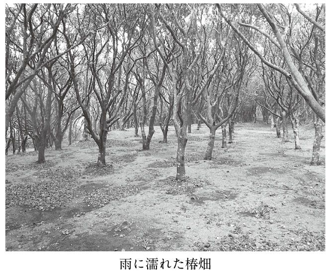
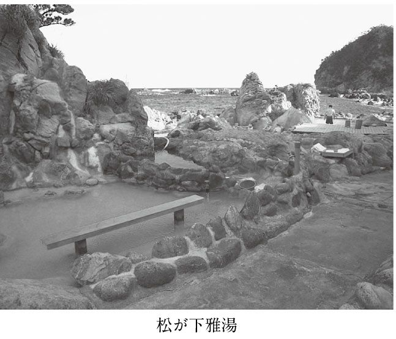
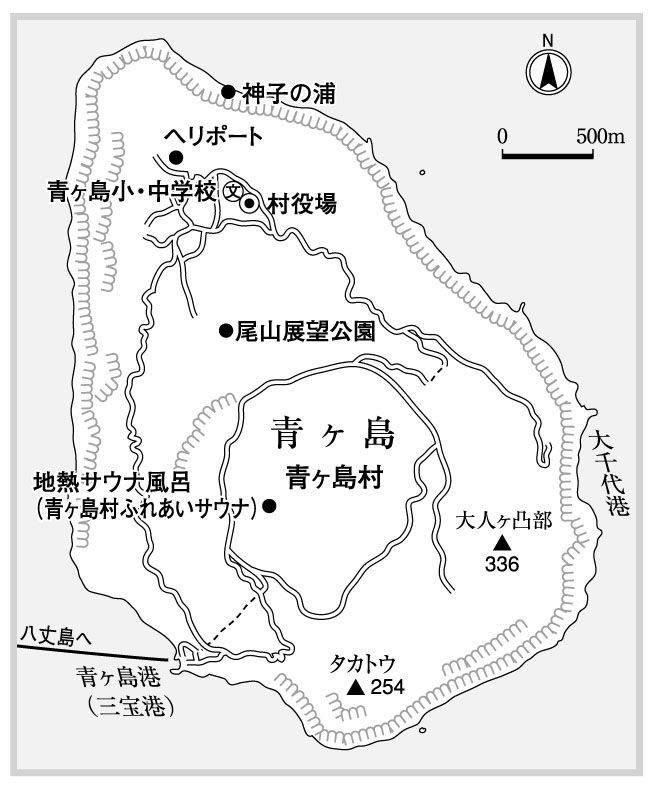
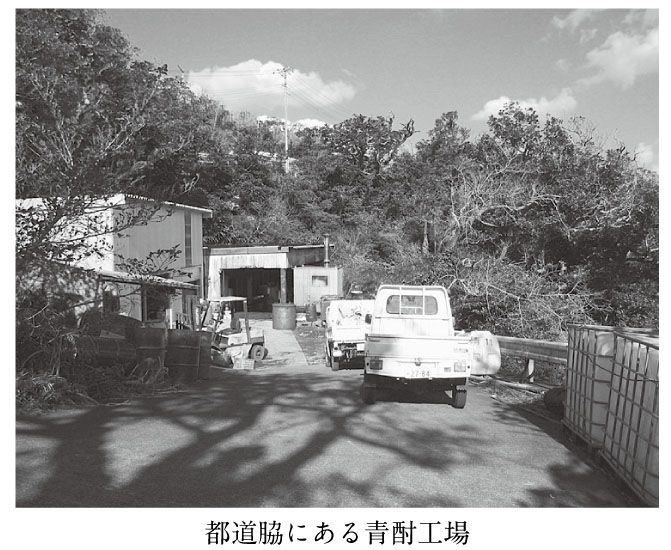
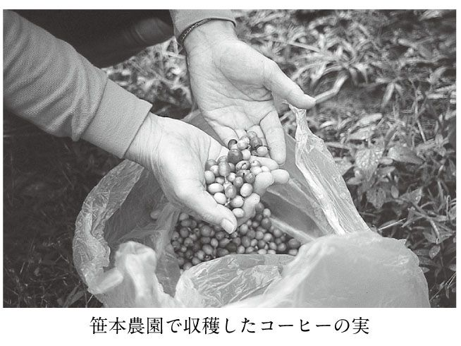

| 東京の島 | |
| 斎藤 潤 | |
| (2007) | |
東京の島。
といわれた場合、どこを連想する人が多いだろう。
えーと、お台場も島だったよね。
そんな反応もあるかもしれないが、今回巡ったのはもっと島らしい島。
荒波の中に独りポツンと聳えて、一つの国のように独自の世界を作っている島々。
伊豆諸島と小笠原諸島だ。
東京の島が囲い込んでいる海は、とんでもなく広い。まず、東京都小笠原村が日本の最南端（沖ノ鳥島）と最東端（南鳥島）を併せ持っている。沖ノ鳥島は北回帰線の南に位置し、日本で唯一熱帯に属する領土だ。一島で確保している海（排他的経済水域）は、全国土よりも広い四三万平方キロに及ぶ。わずか二島で八六万平方キロ。
この面積は、中国の「海」八七万平方キロに匹敵する広さだといえば、ちっぽけな二島がいかに重要か実感できるに違いない。さらに東京の島全体でいえば、日本の海の半分近い一七一万平方キロ（全体では四四七万平方キロ）をカバーしているのだ。
これだけ広い海域に点在している島々だから、実に変化に富んだ顔をみせてくれる。
正直に言おう。
ぼくは東京の島々、特に伊豆諸島をこれまでみくびっていた。というより、ろくに歩いていなかったし、よく知らなかったというべきか。今回は、それに気づいただけでも収穫だった。東京近郊に住むぼくからすると、行こうと思えばいつでも行ける手近な島々。
目先の島々より、はるかなる島へ。利尻礼文奥尻、隠岐、壱岐対馬、五島、屋久種子、奄美、宮古八重山、そして、トカラ。伊豆諸島よりたくさん足を運んでいる島は、いくらでもあった。ぼくの住む場所からみれば遠い遠い島々に旅情を感じて旅立ち、漁村の裏路地を、蜜柑畑の急坂を、サンゴ礁の砂浜を、提燈の少ない呑み屋街をうろつきながらも、ふと不安を感じることがあった。そういえば、東京の南に連なる島々って、どうなんだろう。
伊豆・小笠原諸島の人が住む島々は全て巡り終えていたが、あまりにも見落としているものが多いような気がしてしかたなかった。でも、その気になればいつでも行けるから......。
「東京の島は本当に恵まれていて、羨ましか。十島も東京都に入れてくれんやろうか」
トカラを歩いている時に、働き盛りの男から、そう聞かれたことがある。
もちろん、ぼくになんとかしてくれというのではなく、都からの補助がたっぷりとある伊豆諸島が素直に羨ましく、それを旅人に伝えたかっただけだろう。
逆だったらどうだったのか。黒潮が東シナ海から屋久島と奄美大島の間を抜けて太平洋にそそぐ場所に、伊豆七島があったなら。そして、東京の南にトカラ列島（七島、十島の異称もある）が連なっていたら。
あれっ、よく似ているな。
黒潮の只中に浮かび、活動が盛んな多くの火山を抱え、文化の独自性が強く、航路状況はなかなか厳しく、そして、共に芋焼酎地帯。
芋焼酎は鹿児島から伝わったそうだから、黒潮の繋がりでみればまさにお隣さん。
違いといえば、伊豆諸島が面積人口とも一まわりか二まわり大きく、各島が一つの自治体となっていて、東京都に属していること。鹿児島県のトカラは、七島で一村なのだ。
島の中の島としてぼくの中に居すわるトカラがあれだけ素晴らしいのだから、伊豆諸島だってもっと魅力的に違いない。手近な島々だし、思い切ってすべて歩きなおしてみよう。
そして、ほぼ半年で一般人の住む島は全部訪れたのだが、これには難儀をした。
先年『沖縄・奄美《島旅》紀行』（光文社新書）の執筆に当たって、宮古八重山のほぼすべて一六島を再訪したが、その時の方がはるかに楽だった。
風が強い季節だったこともあったが、例年になく天候が安定せず、予報が外れて船は欠航。島に渡れなくなったり、出てこれなくなったり、そんなことが何回あったことか。
この十数年で劇的に改善されていたものの、青ヶ島や御蔵島、利島など入江らしい入江のない島々の港湾状況は、地形的な制約が大きいからだろう、トカラより厳しく感じられた。隔絶性は島の大きな特徴だが、そういう意味でも島らしい島々だった。
大変だったことは事実だが、それ以上に与えられたものは多く、伊豆・小笠原諸島は知れば知るほど興味が尽きなかった。東京の島を新たに発見した、といってもいいくらい。ただし、じっと座っているのではなく、自分から向かっていって感じられる面白さ。
具体的な内容は個々に目を通して欲しいが、伊豆・小笠原諸島は都や国の後ろ盾が大きく恵まれているし、なにより島自体が豊か。なんだかんだいっても食べていける。
「フェニックス・ロベレニー（花束の添え葉）さえ植えておけば、食うに困らない」
と、八丈島の人たちは言う。これが、典型的な例。八丈観光の足を引っぱっているのはロベレニーだと指摘した人がいるが、米櫃替わりの添え葉があるので、面倒な観光客に媚びなくともやっていけるということ。どう認識しているかは、島人によって大きく異なるが、どこの島もそれなりに豊かで、観光はついでの感が強い（それでも、観光に正面から取り組む人がふえている事実も付け加えておかないと、公平ではないが）。
だからこそ、眠ってる楽しみもいっぱいある。御蔵島のイルカが注目されるようになって一〇年ほど。小笠原のホエールウォッチングも、はじまって二〇年にもならない。
そして、海の楽しみが中心だった小笠原でも、俄かに森や山が注目されはじめている。この傾向は、御蔵島や神津島、八丈島でも同じこと。これまでドルフィンスイムやダイビング、釣りなど海の楽しみを求めて渡ってくる人が多かったが、日本有数の巨樹の森や高山植物が咲き乱れる天上界、散策できる噴火口の中の森など、島そのものへの興味が広がりつつある。みんな最近まで、あまり観光的に見向きもされなかったものばかり。
ぼくが張りめぐらせた興味の網に引っかかったものはまだたくさんあったが、ページ数の関係で今回は各島で一番心惹かれたテーマに絞らざるをえなかった。
島々には心の琴線にふれる発見が必ずあるので、ぜひアンテナを高くして伊豆・小笠原諸島の旅にでてほしい。夏だけではない、四季折々豊かな表情をみせてくれるだろう。
写真撮影／著者
アメリカ軍の影
眩しい。
朝の六時を廻ったばかりだというのに、左舷甲板には烈々たる光が射している。
暑い。
真正面には、光り輝く宙と水を遮るように黒い一条の帯。異界に漂着したような錯覚にとらわれる。ここでは、現実と幻覚の境は意味を失っているのかもしれない。
硫黄島。
高い空、あくまでも凪いだ海。
昨年は台風の影響で海が荒れ、島の周りを廻っただけで終わってしまったそうだが、この天気なら間違いなく上陸できるだろう。かつて、この島とその周囲に一〇万を超す兵士が犇めき、文字通りの死闘を繰り広げたと想像できる手掛かりは何もない。
黒い島影の中で、小さいが明瞭な白光の塊がいつまでも蠢いている。水蒸気らしい。しかし、変幻自在のあてない動きは、今なお安らぎの場所を捜し求めて彷徨う死者の魂とも重なる。熱暑や烈日ごときでは、たじろぎもしない霊たち。
右手に視線を泳がせると、黒い帯は緑色に変じ、その前面の青黒い海面には赤錆びた箱が幾つも傾いでいる。戦後、硫黄島を支配していたアメリカ軍が、港を作ろうとしてその準備のために沈めたコンクリート船だ。いわば、捨て石ならぬ捨て船。
当時は完全に水中へ没していたそうだが、島の著しい隆起によって、海面にあらわれてしまったという。このままゆけば、滄海が陸に変じて荒野に船が累々と横たわる奇妙な光景が出現するのも、そう遠いことではないかもしれない。
滄桑の変が、今まさに眼前で進行しているのだ。
右舷前方には、お椀を伏せたような山が見える。摺鉢山だ。島影の中で唯一の突出部分。後ろの甲板部では通船作業の準備がはじまっていた。いつ降ろされたのか、それとも陸の方からあらわれたのか、三艘の艀が海の上を忙しなく動き廻っている。
紺碧の海に白い船体が映える。木製の浮桟橋が一基降ろされ、左の舷側に固定された。もう一基のコンクリート製のものは艀に曳航され、岬のようになった岩礁部に設置された。あそこが、戦前は沖合一キロに浮かぶ岩礁だったのに、活発な隆起現象と漂砂によって地続きになってしまったという釜岩だろう。
絶海の孤島が、沖ノ鳥島のように荒波に削られ痩せ衰えてゆくのは理解しやすいが、どんどん面積を増しているというのは驚くべきことだ。
太陽が刻々と高まり、海面からの照り返しが弱まってきた頃、朝食準備完了の放送が流れた。食後通船作業がはじまり、いよいよ硫黄島に上陸できるのだ。
サソリの棲息地
昨晩、受付開始時刻の夜八時過ぎに父島の「おがさわら丸」の待合所に行くと、硫黄島訪島事業の参加者と見送りで溢れ返っていた。旧島民と思しき物静かな老人たちの姿もあれば、飲物やらお菓子の沢山入った袋をさげ遠足気分で浮かれている人々、見送りの一団と談笑している人もいる。中学生らしい姿も多い。
小笠原村が独自に行っている、「おがさわら丸」をチャーターしての「硫黄島訪島事業」は、今回（平成一〇年）が四回目。小笠原村の住民に限定して参加者を募り、実施されてきた。日程は、六月二〇日の夜に父島を出港、硫黄島で二日間過ごし（硫黄島では沖がかりの「おがさわら丸」の船中泊）、二三日早朝に父島へ帰港。
小笠原村の事業は、二日間ゆっくり硫黄島を巡ってもらおうというもの。硫黄島と直接的な関わりをもつ旧島民に加え、日頃足を踏み入れることの叶わない村民にも同じ村内の現況を知って、平和に対する考えを深めて欲しいという意図もある。
参加者に配られたしおりを開くと、序文にはこんな言葉（一部抜粋）が連なっていた。
島民は強制疎開を余儀なくされ、また、島民の一部は軍属として残されました。硫黄島には、未だに一万柱以上もの戦没者が眠っています。また、昭和四三年に小笠原諸島全域が日本に返還されてからも、国の方針により硫黄島については、島民の帰島が許されないまま現在に至っています。このような状況から、小笠原村では硫黄島旧島民の皆さまと関係者の訪島機会を設けました。おがさわら丸を利用することで、集落跡や島民の一部が所属した部隊跡などゆとりをもって島を巡ることができます。
朝食が終わると、Ｃデッキの二等船室に集まり、上陸に際しての諸注意を聞いた。艀は不安定なので乗り移る時に、我がちに移ろうとせずに係員の指示に従うこと、帽子、水、雨具などを各自持参することなどは当然として、ムガデ、ハチ、そして、サソリに刺された時は、速やかに医療班に申し出て欲しいという注意には、少し緊張が走る。硫黄島は、沖縄の八重山などと並んで日本でも数少ないサソリの棲息地なのだ。
紺色の水面は縮緬皺に覆われているだけで、べた凪ぎに近い。八時過ぎにはじまった通船作業は順調に進み、ぼくの班の番がきた。海は穏やかそのものに見えたが、いざ走りだすと少しでも風に逆らう方向に波が立ち、盛大に潮がかかる。艀作業とはそういうものだ。騒ぐ人がいないのは、皆ここがどういうところか分かっているからだろう。日米の兵士たちは、二月中旬から下旬にかけて最も海が荒れている季節に、ここの陸海で対峙し死力を尽くして戦ったのだ。そして、今もって港はない。隆起が激しすぎて作れないのだ。
各地に残るトーチカ
釜岩に上陸、硫黄島への第一歩を記す。六月二一日八時半。三艘の艀はフル回転して、「おがさわら丸」から次々と人を運び出してゆく。仮設桟橋の近くには自衛隊の無蓋トラックと鹿島建設（硫黄島ではかなり大規模な建設工事が行われている）のエアコン装備のマイクロバスが並んだ。班ごとに車へ乗り込んでゆく。軍用トラックとエアコンバスでは、かなりの違い。先行の車が、土埃を巻き上げながら走り去る。ぼくらの班は、オープンエアのトラックの荷台に乗り込んだ。もう一歩で熱風になりそうだが、全身を嬲る風は辛うじて気持ちよさを残す温度。車の後ろには、埃が濛々と上がり後続の車の姿がかき消されてしまう。
釜岩半島を後にしたトラックは、パイプラインの敷設された砂利舗装の道に入った。さらに、島の一周道路にぶつかると右折して、南部に残るトーチカ群を目指す。曲がり角にオイルタンクとガソリンスタンド（給油施設というべきか）があった。途中、道路以外に人為を感じたのは、それくらいのもの。森と呼ぶほどではないが、両側は思いのほか緑が濃い。ギンネムを主とした雑木林が多く、イネ科の雑草も目につく。
一周道路は概ねアスファルト舗装されていたが、傷みが激しくトラックは時々上下に大きく揺れた。乗り心地はともかく、荷台が高いので見晴らしはいい。緑がたくさん見えるのに、眩く、暑く、乾き切った光景。
島の中を走っていても、最初に島影を目にした時の荒涼とした印象は変わらない。まるで、全てが終わった無人の荒野のようで、果てしない寂寞の虚空へ滑り落ちてゆく気分。天頂まで黒く照らして溢れる光が、いつ闇に反転しても不思議ではない。
トラックは摺鉢山の麓でとまり、ぼくらは草原の踏み跡をたどる。間もなく砂地にでた。大きなコンクリートの塊が、半ば砂に埋もれるようにして点在している。トーチカだ。遺骨収集に何度も足を運んでいる旧島民の長田幸男さんが、説明してくれた。
「これは撃墜した米軍の飛行機の胴体の部分を利用して作ったトーチカです」
なるほど、コンクリートの中に筒状の金属が嵌めこまれているのがよく分かる。熱心に聞き入り手を合わせる人もいれば、近くの草藪で早くもレモングラスをみつけ喜んでいる人もいる。周辺は小さな砂漠の観を呈し、ところどころに低く地を這う草木がみられた。小さいながら色鮮やかな花をつけているものが多い。灰色の砂と見えたのは、大豆ほどの小さな白板に黒い樹脂を絡めたような奇妙な小石。世界でも稀にしか見いだされないという鶉石だ。
一万柱の遺骨が眠る
摺鉢山の中腹に据えられた水平砲を見学した後、山頂へ。頂上には、硫黄島戦没者顕彰碑、第一及び第二御楯特攻隊の碑、米軍戦勝記念碑の三基が少しずつ離れて作られていた。米軍戦勝記念碑に、幾つもの米軍の認識票が供えられていたのが印象に残った。
標高は、手元にある昭和五三年改測の二万五千分の一では一六一メートル、海上自衛隊の資料によると「昭和五七年は標高一六七メートルであったが、現在（平成五年）は隆起現象で一六九メートルある」とあるから、今はもう一七〇メートルを超えているだろう。とんでもない隆起の速さ。
周囲に遮るものがないので雄大な眺めが広がる。摺鉢山の噴火口はもとより、自衛隊の基地、釜岩、監獄岩、南海岸などがぐるりと見渡せ、硫黄島を掌中に収めたような感じ。
期待を込めて南北の水平線を睨むと、好天が幸いしたのか、それぞれに雲を戴いた南硫黄島と北硫黄島の切り立った島影が浮かんでいた。両島は真ん中の硫黄島とは対照的に背の高い島で、全国の離島の中でも標高九一六メートルの南硫黄島は五位、七九二メートルの北硫黄島も一一位（噴火により三宅島の標高が低くなったため、現在は一〇位）にランクされるほど。いつか訪ねる機会があるだろうかと思いながら、二度と目にできないかもしれない島を眺め続けた。
摺鉢山を降りると、二〇四設営隊の跡地（と思しきところ）へと向かう。硫黄島では、激戦による著しい破壊のため生存者が極めて少なかったことから、兵士個々人が戦死した場所はもちろん、最終的に各部隊や各種施設があったところも漠としたまま分かっていないケースが多い。
そして、今後それが明らかになる可能性も無に等しい。一万柱の遺骨を残したまま、硫黄島戦の全てが、時の流れと人の心の闇の中へ沈みゆこうとしているのだ。
ぼくらはトラックの荷台から降りて、森の中に入った。ガジュマルの根が絡みついたコンクリートの構築物が、透明な木洩れ陽に照らされている。二〇四設営隊跡。傍らに、錆びた大鍋が転がっている。海軍の二〇四設営隊には島民六九名が軍属として所属し、うち五名だけが辛うじて生き残った。戦闘要員ではないので、壕掘りや炊飯、食物分配、物資の調達、管理、支給などが仕事だったにもかかわらず、生存率は七％。
参加者全員に白菊の生花が渡され、わずかに残る煉瓦積みの上に献花した。故人を偲んでいるのだろう、煙草やお菓子、水などを供え、いつまでも祈っている人もいる。薄暗い藪の中で、戦前栽培されていたパイナップルが小さな実をつけていた。
絶海の孤島でアウトドアライフ
再びトラックの荷台に乗り込み、軍属として徴用された島民一三名全員が帰らなかった陸軍貨物廠跡へ向かう。最後に乗り込んだので、いろいろと世話を焼いてくれている自衛官の隣に坐ることになった。場所柄か白い半袖に半ズボンの制服で、軍人という重苦しい雰囲気はない。島の生活のことをいろいろ質問すると、気さくに答えてくれた。
現在硫黄島には、海上自衛隊が二〇〇名程度、航空自衛隊が一〇〇名弱駐屯しているが、その他鹿島建設と下請けを中心に、二〇〇名くらいの土木建設関係者が長期滞在している。
だから、硫黄島は母島を上回る村内第二の実人口を擁する島。いつの間にか、強制疎開時の人口（約一〇〇〇人）の半分に迫っている。
紅灯の巷が好きな人間には辛いだろうが、日頃の生活も絶海の孤島にしてはなかなか快適のようで、特に自然を相手にしたレジャーには事欠かない。ゴルフやテニス、プールでの水泳、麻雀、カラオケなど、一通りの施設が整っている。
しかし、人気はアウトドアライフの方らしい。例えば、ジャングル（やや大袈裟）探検＆フルーツハンティング。森に分け入って、野生化した果物を探して食べるというもの。パイナップル、オレンジ、パパイヤなどが採れる。発見、美味という二つの楽しみを得ることができるわけだ。小粒ながらビリッと辛い島トウガラシやサトウキビ、レモングラス、パッションフルーツの原種、桑の実などもある。大物釣りのポイントも沢山あり、釣りマニアになって帰ってゆく隊員もいるらしい。もちろん、地熱サウナや露天風呂もある。
勤務時間外の話とはいえ、聞いているうちに一年くらい住んでみたい気分になってくる。
雨水を五万トン溜められる池があり、生活用水などはそれを処理して利用している。また、自衛隊の医官が常勤しているので、医療面でも基本的に保証されている。
貨物廠跡にお参りしてから、ピューリッツァー賞を受賞した写真「摺鉢山に星条旗を掲げる六人の兵士像」をもとに作られた有名な米軍上陸記念壁画を見学し、次いで医務科壕を訪ねた。看病される者もする者も、特に酷い地熱と渇きに苦しめられたという場所。背筋を伸ばして楽々歩ける立派な壕だった。
現在は照明も備えられている壕で、入口にはもやもやとした温気が漂っていた。中に入り一〇歩も進んだろうか、メガネが曇りはじめる。体をじくじく締め上げ、芯から腐らせてゆくような湿気。壕内の一部が明るく浮かび上がっている。見上げると白く円い光。垂直に掘られた換気口だ。しかし、さほど効果は感じられない。
進むにつれて暑さは飛躍的に増してくる。突き当たって左に曲がり、数歩で耐え難い湿熱に襲われた。さらに何歩か進む。滴り落ちていた汗が、堪え切れずに噴き出した。シャツの下をシャワーを浴びたように汗が流れ落ちる。二〇秒も我慢できなかっただろう。もときた道を換気口の下まで引き返し、やっと一息ついた。
慰霊祭までの時間、周辺を散歩した。海を隔て目の前に監獄岩がある。地図では二キロほど沖なのだが、もっと近く感じられる。公園の中には巨大なモニュメント以外に、旧島民の手で建立された慰霊碑が幾つもあり、生花が供えられ線香の煙がたゆたっている。墓参が済み、濡れて光っている碑も多い。新たに献花をし、頭を垂れている人もいた。
旧島民による慰霊祭
一三時半、突き刺さる日射しの下、予定通り硫黄島旧島民慰霊祭がはじまった。宮澤昭一村長の式辞に続いて幾人かの挨拶があり、全員による献花となった。来賓には、現在硫黄島を預かっている海空の自衛隊の幹部も参列。
その後、小笠原在住硫黄島旧島民の会を代表して、会長の宮川典男さんが断腸の思いを綴った追悼文を読み上げた。楽園であった故郷からの強制疎開、硫黄島の玉砕、頼る人とて少ない内地で敗戦後に嘗めた辛酸、小笠原の日本復帰、日本国による帰島断念勧告と軍事基地化の否定、そして現況。その行間に一貫して滲んでいるのは、国家の無情に対する疑念、不信、遣る方のない不満だった。不自由な足を庇いながらも毅然と立っていた宮川さんは、込み上げる思いに途中で言葉を失い、女婿の菊池武博さんが残りを代読した。
全員黙祷。
静かな島だが、一瞬人のざわめきが絶えると、潮騒、葉擦れ、小鳥の囀り、風の唸りなどに満ちていることに気づく。献歌は、中学生たちによる「故郷の廃家」の斉唱。
幾年ふるさと
来てみれば
（略）
なれにし昔に
変わらねど
あれたる我家に
住む人絶えてなく
万感の思いを託して和する旧島民の目は潤んでいた。
公園の周囲をしばらく散歩し、一五時半頃に「おがさわら丸」に戻った。夕方驟雨が通り過ぎ、ささやかな涼風が湧く。夕日に照らし出された硫黄島から、二重の虹が立ち上がった。虹が消えて暫くすると、島を背にした水平線に落暉が没した。
静かな夜。甲板にいても、潮騒が遠いもののように感じられる。薄い雲がかかっているのか星は見えない。見えるのは、闇の中に浮かび上がった三艘の艀、小さな赤と橙色の灯火が二つ三つ。時々、空港のサーチライトらしき淡い光が暗闇を薙ぐが、大気が澄んでいるせいだろうか、闇に浅手を負わせるだけでさほど気にならない。平和そのものだ。戦闘が激しかった時は、こんな濡れたような闇の中を何百万発という砲弾が飛び交い、火箭が空を覆い尽くし昼のような光景だったのだろう。その中を、爆弾を抱いてのろのろと進む兵士。幾ら想像しても、当事者の体験には少しも近づけないのだろう。
昼間、誰かが語っていた話を思い出す。
「昔のことを聞こうと、◇◇県に住む生き残りを訪ね『いおう......』と言っただけで、もう何も語ってくれなくなってしまった。五〇年以上たっているのに。それだけ辛いことがあったのだと思う。そして、その経験は語られることなく埋もれてゆくのだろう」
「ここは、本当にいい島だったよ」
硫黄島での二日目は旧島民の出身集落の探訪がメインで、それ以外の人は幾つかの班に分かれ適宜旧島民に同行した。旧島民たちは、時々運転者に声をかけては車をとめ、三、四人ずつ道端で降り、すぐに緑の繁みに消えた。
特に目印はないのだが、かつて住んでいた人には五〇年を経た今でも見分けがつくのだろう。あまり戸惑うこともなく、すっと降り林に向かう。そんな場所には、必ずといっていいくらいガジュマルの大きな繁みがあった。小さな森といってもいい規模のものもある。
ぼくらは、旧千鳥集落の出身で、遺骨収集などのために戦後何度も硫黄島を歩いている長田幸男さんに同行させてもらった。かつて長田さんの家があった辺りにゆき、籔を漕いでガジュマルの森に辿りついた。それぞれ、太い枝や根株に腰を降ろして硫黄島の話を聞く。長田さんが少年時代を過ごした昭和初期の硫黄島は、どんなようすだったのだろう。
『小笠原島總覽』（昭和四年一〇月二六日／東京府発行）を繙いてみよう。
――硫黄島は南北硫黄島の中央にあり、もと「サルハー島」と稱した。瓢状の孤島で摺鉢山及元山の二箇の火山から成り、元山は全面積の八割以上を占む、附近に三四の小島がある。島の東方にあるものを東島といひ、西方にあるのが監獄岩、釜岩である。東西に長く周圍五里二十九町、面積は千四百六十六町歩（筆者注：一四・七平方キロ）ある。列島中で第一の地積を有し、小笠原島の内では地味も肥沃で、今甘蔗及古加の大栽培地である。本島の特色は、今尚地盤が隆起を續け、海岸線等は漸次變化してゐることである。
これに続いて、島内の個々の地名（場所）に関する簡単な説明がなされていた。
現在の面積は、二三・二平方キロだから、いかに地殻活動の激烈な場所か分かる。本文にある「古加」とは、コカインの原料になるコカのこと。硫黄島で精製まで行っていたという。医薬品として使われていたのだろうが、戦前は国内でコカインが作られていたのだ。
長田さんの話によると、コカインの製造に関わっていた硫黄島産業株式会社は戦後も存続し、自衛隊が使っている土地使用料を、今でも国から受け取っているという。
「当時はここの千鳥も含め一三集落あって、主にサトウキビを作ってました。デリスを作っていたこともあった。デリスで除虫剤を作るんです。綿も作っていたな。硫黄島の綿は品質がよいと評判だった。加工せずに綿花として出していました。コカは会社（硫黄島産業）から苗を渡され作りました。あまり背が高くならないうちに、一メートル位かな、収穫して、島で精製し白い粉にまでしていた」
長田さんが、淡々と語る。
「農業が中心だったから、漁業専業の家は四軒しかなかった。大半は半農半漁かな。トビ（飛魚）は海の蛆といわれるくらい沢山いた。獲れ過ぎた時は、船が潮目に入って沈みそうになったこともある。トビは冷凍船で東京に送ったが、船が出た後は干物にした。マグロやサワラが獲れると、よく貸し借りしたもんだ。あんな大きなものは一家だけでは食べ切れないだろう。だから、お互いに融通したんだ。ここは、本当にいい島だったよ」
飛魚が蛆とは恐れ入る。
「屋根はね、タコの葉で葺いていた。タコッパ屋根。水は貴重品だったので、夜露までも甕に溜めるようにして、それは家畜にやった。自家用に乳牛も飼っていたから」
長田さんの口から当時の話が問うほどに溢れ、留まるところを知らない。いつしかぼくは、昭和初期の絶海の孤島でありながら理想郷とも思える不思議な空間をさ迷っていた。
硫黄島自衛隊グッズ
木洩れ陽に洗われながらの謎めいた時間を過ごしたあと、マイクロバスに拾われて自衛隊硫黄島基地の厚生館へ向かった。入口は小さな村役場のようなたたずまいだが、奥の方は講堂のような巨大な建物で、そこが昼食会場になっていた。寒い。冷房を思い切りきかせてあるのだ。これも、ぼくらを歓迎してくれているからなのだろう。まるで、東南アジアのレストランのようだ。
殺風景な講堂の端に受付のようなものがあり、自衛隊員たちが忙しそうに立ち働いている。商品を並べているのだ。これが、噂に聞く硫黄島自衛隊グッズか。硫黄島は観光地ではない。民間人さえ住んでいないので、いわゆる土産品や記念品の類がない。だから、島の小石や草木しか土産にならないのだが、そこはよくしたもので自衛隊がちゃんと用意してくれているのだ。たとえ慰霊のための渡島とはいえ、何か珍しいもの貴重なものを記念にと思う心はある。逆に親族の終焉の地と思えばこそ、何かこの地のものをと思うのかもしれない。
食事が終わると、アッという間に仮設売店に人だかりができた。Ｔシャツを一〇枚単位で購入する遠足気分の人、テレカを何十枚と買う遺族らしきオバァさん。絵葉書、アポロ帽、コースター、ハンカチ、マグカップ。商品の種類は五〇は下らないだろう。よく見るとレジは二箇所。海上自衛隊と航空自衛隊が別々に店を出しているのだ。駐屯している人数を反映してか、海自の方が大々的。ささやかながら、ぼくも買い物をした。ロビーの公衆電話から「今、硫黄島！」と電話する人、用意してきた葉書を投函（正式には違うが）する人、自動販売機で安いビールを楽しむ人、なんだかお祭り気分になってきた。
死者の霊が宿る小石
希望者には基地についてのレクチャーがあるらしいが、自分の目で基地を見ておきたいと思って外にでた。ぼくを包んでいた厚い冷房の皮が、猛暑のため一瞬にしてハラリと散り果てる。気温はせいぜい三二、三度だろうが、日射しが苛烈なのだ。基地の中を勝手に歩きまわる。滑走路、管制塔、付帯施設、軍用ヘリコプター、憩いの家。芝生に囲まれたコンクリートの平屋の周りには真っ赤な花をつけたハイビスカスが咲き乱れ、青い空にほんわりとした白い雲。開発が緒についたばかりのリゾート地に、最初に建ったホテルのよう。フロンティアを求める旅人が好みそうな雰囲気のこの建物は、官舎だろう。
一巡りして厚生館に戻ってくると、広い芝生のゴルフ練習場が目についた。手前に痘痕面のコンクリートの巨塊。錆びた数門の大砲とハイビスカス。痘痕面はすぐに無数の弾痕と知れた。壁の傷みの少ない一角に通路が穿たれ、入口の上のプレートに海上自衛隊硫黄島航空基地分遣隊資料室とある。
一〇〇畳足らずの薄暗い部屋には誰もおらず、静謐の中にあった。自分の足音ばかりが、妙に大きく響く。主に兵隊の遺品らしきものが展示されている。ボロボロに錆びた鋏、割れたレコード、歪んでレンズの外れたメガネ、水筒、茶碗、歯ブラシ、将兵個人の生活の匂いが染み込んだものばかり。錆びた道具の少しずつ崩れゆく音が聞こえてきそうだ。
厚生館の次は、飛行場の反対側に広がる硫黄ケ丘だった。温泉地帯でよく見かける地獄を、さらに苛酷な日射しが炙っていると思えばいい。日本で一番南にある地獄。本当の地獄だったこともある地獄。ちゃんと熱泥が滾っている穴もある。中学生たちはここの噴気孔で茹で卵を作ると楽しみにしていたが、時間が足りなかったのかうまくゆかなかったらしい。
昔はこれを熱源にして、製塩やレモングラスの香料成分の抽出を行っていたという。近くにレモングラスの群生があり、一抱え二抱え採ってくる人もいる。これも、お土産か。
白茶けた地面と対照的な濃緑の森が近くにあったので分け入った。ガジュマルの森。恐らく、ここにも人家があったに違いない。あとで聞くと、かつて学校があった場所だった。
突然降りだした雨の中、天山にある日本戦没将兵慰霊碑に参り、都の慰霊碑に献花。周辺には、小さな石碑、お地蔵様、卒塔婆などが作られ、戦死者の姿を写したものか兵士の格好をした石像もあった。最後は米軍が上陸を敢行した南海岸を訪ねた。
黒い海岸で、浜の大半が鶉石とその砕けた砂からなっていた。なぜか人気の高い小石らしく、必死になって拾っている人が多い。ぼくも形の綺麗なものを選って拾ったが、取り敢えずレジ袋にいっぱいの砂を持ち帰る人や、集合時間と告げられても執拗に拾い続ける人の姿が目についた。鶉石と知らなければ、アスファルトを砕いたような小石なのだが。
一方、石のひとつひとつに死者の霊が宿っており、持ち帰ってからというもの悪夢に悩まされた人が、硫黄島に戻したらやっと解放されたなどという話も耳にした。
鶉石拾いを最後に島での日程は終了。釜岩に戻る途中、上空を覆った雲から細長い角状の雲が垂れ下がってきた。海面に届けば竜巻になるぞと期待してしばらく見詰めていたが、残念ながら途中で蒼空に取って返し立派な龍に育つことはなかった。
全員無事、船に帰還。乗客はいいが、船員はそのあとがまた大変だ。浮桟橋の撤収、艀の回収といった作業を延々と積み重ね、一七時過ぎ啜泣くような汽笛を鳴らしやっと抜錨。
静かな祈りの声とともに、生花が海へ次々と投げ込まれる。刻々と表情の変わる島影を眺めながら、約一時間をかけて一周した。日はすっかり傾いていたが、船は二周目に入った。次第に夕闇が濃さを増す。時々、思い出したようにぱらぱらと花が投じられる。紙吹雪のように舞い散るのは、仏の御姿を印した紙片。二周目も終わりに近づき、今一度一斉に生花と紙片が散じられた。嗚咽にも聞こえる汽笛が、永久の別れを告げるように、長く長く尾を引いて繰り返される。
ほんの数分空高くに夕映えの茜雲が現れ、すぐに色を失った。胸を塞ぐ思いを断ちがたいのだろう。それでもデッキを去ろうとしない人影は、やがて夜陰の中に融けていった。
ゆるやかに波打つ黒砂の大海原に、枯れススキの小島が点々と浮かんでいる。
ちょっとセピア色を帯びたモノクロームの光景。
砂とススキというありふれた組み合わせなのに、はるかなる地の果てをさ迷っているような不思議な心持ちになり、眺めても眺めても飽きることがない。
黒一色の宇宙にとりとめなく配置された白々とした島々が、なぜか決してたどりつくことができない遠い世界を連想させてくれる。
自然が作り出した渺漠たる石庭。
端然とした庭石ではなく、茫々とした枯れススキの塊だが、気配は通じるものがあった。
「これはすごい。観光客の減少に悩んでいる暇があったら、なんでこの光景をもっと上手にアピールしないんだろう。日本各地をずいぶん歩いてきたけれど、こんな場所は他にない」
今にも落ちてきそうな重苦しい空に浮き立ちそうになる気持ちを抑えつけられつつ、大島温泉ホテルから三原山に向かって歩いてきたのだが、大島公園への分岐点を過ぎたあたりで我慢できなくなり、思わず独り言を放ってしまった。
わずか三〇分ほど歩いただけで、こんな光景の中に立てるとは。それに、いくら三月上旬だからといって、三〇分以上歩いても誰にも会わずにすむなんて。ジェットフォイルから下りた時は、椿まつりの観光客でかなり混雑していたというのに。気に入った場所で一人静寂に浸れるのは嬉しいことだし、他の有名観光地ではできない体験だろう。
かつて、三原山外輪山の御神火茶屋まできたという記憶はあったが、お鉢めぐり（火口を一周すること）や砂漠踏破をしたという記憶は曖昧だった。その時は、熔岩流の痕も生々しい三原山を間近に見て、満足してしまったのだろう。でなければ、この光景を忘れるわけがない。
裏砂漠を歩かずして三原山を語るなかれ。
大島温泉ホテルの脇から火口原に降りてゆく細い道は、黒々した広葉樹の林の中を抜けて伸びていたが、次第に樹々の背は低くなり枯れ草の面積が広がり、やがて枯野と化していつか漠々とした砂原になろうとしていた。そこにあらわれた魅惑の光景。
――大島の月世界、裏砂漠のすばらしい、眺望をご覧下さい。大島町
月世界や裏砂漠をアピールしたいのかもしれないが、道標だけきちっと整備してくれればそれでいい。この光景の向こうになにをみるかは旅人の自由だし、楽しみでもある。
熔岩が流れた痕なのだろう、なだらかな黒い海に小山のように波立つ岩の連なりが何箇所もある。遠くの山肌には、冷えて固まったことが明らかな熔岩流がへばりついていた。
地の底から真っ赤に燃える舌をのばして、なにを舐めとろうとしたのか。あるいは、滾る指先でなにをつかもうともがいたのか。夜陰の中で赤光を放っていた当時を、想像する。
歩を進めるたびに、ジャッジャッジャッと唸り続けている足元を見ると、荒砂ばかりではない。熔岩の塊がいくらでも転がっている。今自分が立っている大地すべてが熔岩といっても過言ではないのだから当たり前だが、形も色も面白い。
表面はザラザラのものが多いが、滑らかなものも混じっているし、ぶっきらぼうにゴロンもあれば、のたうったまま固まっているものもある。黒が主だが、なぜか鮮やかな赤褐色も少なくない。黒もよくみると剥げ落ちたような部分に、水面に広がる油のような虹色をみることもあった。藍色がかった虹に、心が惹かれる。
足元が気になりだした頃から登りが急になって、ジャッジャッが少し流れてジャジャッジャジャッ。周辺も砂から岩が中心になってきた。山頂付近からは、湯気なのか火山ガスなのか、白い煙が立ち昇っている。時々立ち止まって振り返ると、ガサガサした岩塊がどこまでも埋め尽くし、荒涼とした眺め。
この辺の荒蕪地への侵入者はイタドリが多い。それにつけても、植物たちはなんと生命力が旺盛なのだろう。夏は熱暑に焼かれ、冬は厳寒に凍え、時に激しい雨風にさらされ、しかも、水はすぐに地中深く滲みこんでしまう。そんなところにしっかり根を張っている。
俯きながらぐいぐいジャッジャッと登ったら、いつかお鉢（火口）の縁にでていた。直径八〇〇メートルほどの立派なお鉢の南よりに、入れ子のようにさらに深い直径四〇〇メートルほどの火口が開き、内壁のあちこちから白い煙が上がっている。東京都内に、こんな場所があること自体すばらしい。さっき山頂口まで乗ってきたバスも、品川ナンバーだった。
お鉢の縁を時計回りに剣が峰まで登ると、今縦断してきた北麓の裏砂漠が一望された。
「お～、いいじゃない、いいじゃない」
思わず、また歓声をあげてしまう。
黒と枯れ草色で織りなされた綾の上に、歩いたばかりの小径が一筋黒く浮き出ている。その時は気づかなかったが、森が終わった先はずっと熔岩が流れた痕らしく、枯れ草が点々。
その東側は一面真っ黒な砂漠で、植物にもあまり侵されていない。もっと北はかつて熔岩が流れてゴツゴツの大地だったことが窺えるが、現在はほとんど枯れ草色で覆われていた。
そして、その彼方はもう、ぼーっと鈍く光る海。
朱色の光を発しながら流れ冷え固まり進むことをやめた熔岩。
じわじわとしかし着実に、熔岩原へと生息域を広げていく、一見かよわそうな草木たち。
一瞬、時間の尺度が大きくゆがみ、何百年あるいは何千年も前の眺望が蘇り、また何百年、何千年後の風景を幻視する。なんとも得がたい一時。
ここでお鉢を逆回りしてきた老夫婦と行き違い、挨拶を交わす。時々足を止めて周囲の絶景を楽しむ二人の表情は清々しい。その後、お鉢のまわりですれ違ったのは数人あまり。それぞれが、三原山独占感覚を味わったのではないか。
地球外惑星？
お鉢の南側にさしかかると、垂れ込めた雲の下に重なりあうように連なる島影がみえた。手前から、利島、鵜渡根島、新島、式根島、神津島。少し離れた左手には、三宅島も浮かんでいる。もしかしてと期待を込めて目を凝らすと、三宅島の左肩から御蔵島が遠慮がちに半身をあらわしていた。曇っているが、意外に空気は澄んでいるらしい。
お鉢の南側に廻り込むと、大火口の中に穿たれた深く小さな火口の中がよくみえた。内壁は黒っぽいが、場所によっては白、クリーム色、赤、黒、灰色の複雑な縞模様で彩られ美しくもあるし、全てを呑みこもうとするようで禍々しくもある。
火口のなにに魅せられたのか、誘われたのか。昭和一桁の頃、三原山は自殺の名所として全国に知られるようになってしまった。投身自殺第一号は、昭和三年の和田滝蔵。昭和八年には、実践女学校の生徒が一、二月と続けて身を投げ、この一年間だけで一二九人が投身自殺したという。若者の自殺は、連鎖反応がおき模倣者が出やすい傾向にあるとはいうものの、なぜそこまで流行ってしまったのか。火口壁の途中に引っかかったまま、回収することもできず虚しく朽ちていった骸もあったという。
また足元が気になりだしたら、待っていましたとばかりに、大きなおにぎりほどの火山弾が転がっていた。道端には、一抱えもある罅割れた岩もある。パン皮状火山弾だろう。蹴っ飛ばしても、もちろんびくともしない。石ころだけ観察しても楽しそう。
お鉢めぐりを終えて、山頂口の茶屋へ下る途中にみた三原山は、また印象的だった。ほぼ一直線になった内輪山の縁から、幾筋もの熔岩が流れ出したようすが一目瞭然。昭和六一年一一月全島避難をした時に、内輪山から溢れた痕だという。
晴天に恵まれた翌日、最近クルマが入れるようになった月と砂漠ラインの行き止まりまで行き、そこから歩いて櫛形山を目指した。ここがまた、裏砂漠に浮かぶ秘境の島だった。
途中から山肌の草木は極端に少なくなり、黒いゴビ砂漠といった風情。東になだらかに聳える三原山はほとんど禿山のようで、昨日の印象とはずいぶん異なる。
まさに、地球外惑星の光景だった。
昨日の感動があるから、そんなに大きな溜息は洩らさなかったけれど、先にこちらへ来ていたら、絶対に大声を出していたに違いない。
こんな果てしない斜面を、ワ～ワ～いいながら子供のように駆けずり回ったら、さぞかし気持ちいいだろうなと思っていたら、当然同じことを考える人たちがいるもので、ワァーーーという雄叫びがはるか前方の斜面から聞こえてきた。
なだらかな山肌に小さな砂埃が立ち、下へ下へと滑り落ちてゆく。
マウンテンバイクで遊んでいる人たちだった。気持ち良さそうだな。でも、こんなところへ乗り物で侵入していいんだっけと思いつつ、羨ましさが先に立つ。
テキサスルートを歩く
そして、二ヶ月後のゴールデンウィーク明け、新緑の三原山と砂漠を再度訪ねた。
今回は逆コースをたどって、途中から奥山砂漠の北を通り大島公園方面に抜けようと、山頂口に降り立った。山の雰囲気は一変していた。前回大勢を占めていた枯れ草色は消え、一面若草色に萌えている。ところどころに燃える紅の焔は、咲きはじめたオオシマツツジか。
連休明けだからか、絶好の彷徨日和なのに人影は皆無。三原山に向かい両手を広げ、「あ～あ、気持ちいいな～」と思い切り伸びをしてから歩きだす。爽快という言葉を実体化したような、晴れ晴れとした天気だった。
立ち止まっては冴え冴えとした桃色のオオシマツツジの花を愛で、しゃがみこんで苔の新たな芽吹きに見入る。気分が浮き立っているからか、熔岩流の痕までが石庭に見えてくる。
ケキョケキョ、ツゥィツゥィ、クゥ～クゥ～。
木立の中から小鳥たちの囀りが沸き、鳴きながら飛び交い、やかましいほど賑やか。
昭和の大噴火の時にも、熔岩が避けて流れたという三原神社の社殿に参拝し、火口見学道の先端から火口内をのぞき、一度剣が峰の途中まで登って薄っすら緑色に煙る裏砂漠の眺望を堪能してから、大島温泉の方へと下った。
この辺りの新緑は主にイタドリで、ススキはまだ枯れ草色。両者は、過酷な砂漠で共存しているらしく、同じ場所に重なりあうように生えていて、黒一面を背景にイタドリの萌える若緑から枯れススキの穂が噴き出しているさまが、面白い。
遠くのイタドリの群落は、黒い浅海で若草色の漣がきらめいているよう。
大島温泉と大島公園の分岐点から、一路未踏のテキサスルート（大島公園への道）へ。この先しばらく続く右手に広がる風景が、一番砂漠らしさを感じさせてくれた。まだイタドリの島もあまりなく、熔岩流の侵入もみられず、なだらかで見渡すかぎり黒く荒い砂ばかり。正しくは、細かなスコリア（火山から噴出した黒い玄武岩質の軽石）というべきか。
先日はマウンテンバイクに先を越されてしまったが、今日はそれまで誰一人見かけていなかったので、デイバッグをその辺に放り投げ、念願の「ワァーー」を実行。闇雲に走り回ってみたのだが、スコリアに足をとられて、うわぁ～ぁ～ぁ～、くらいにしかならない。
歩くのにはそこそこ自信があるのだが、走ることなど滅多にないから、すぐに足が空回りしてしまう。歩くのと走るのとでは、使う筋肉が多少違うのだろうか、などと下らないことを考えはじめたら、たちまち息が上がってきた。無邪気に遊ぶにも先立つのは体力。
黒い大地に、大の字になって寝ころぶ。
青いのか淡青なのか白いのか、視界は混沌として我が肉体を包む空ばかり。気持ちいいのだが、暑い。五月上旬だからまだいいが、盛夏の砂漠遊びは命がけかもしれない。
次回は、彼方にぽっこりとたたずんでいる櫛形山まで足を延ばしてみようか。ここの砂漠では、まだまだ遊ぶことができそうだ。そんな楽しみを考えつつ、テキサスルートを行く。
時々小高いところに立って眺めながら歩いていたら、一度だけ草の侵入地域で白いクルマをみかけた。なにをやっているのだろうか、近くには歩く人影。その日、三原山を越えて裏砂漠を探索している間、唯一目にした人間だった。
「観光地だろうと、馬鹿にしていたら......」
下界で何人かの島人に「砂漠も三原山も予想以上にすばらしい。もっと魅力をアピールすべき」といったところ、大方の反応が「そうでしょう。それなのにどうしてかな～」。
そういわれると、どうしてかな～？
なぜ、こうも影が薄いのか。
同じ火山の造り出した風景で、もっと雄大なものもある。例えば、阿蘇山や大雪山。規模的には大島を一蹴するほどだが、広すぎて雄大さが今一つ実感しにくい難がある。
その点大島は人の身丈にあった大きさだし、周囲がぐるりと海で範囲も分かりやすいから、かえって雄大さを実感しやすいのではないか。それなのに......。
東京に戻ってから、周囲の友人たちに三原山と裏砂漠について聞いたところ、行ったことがある人、特に裏砂漠を歩いた人は、異口同音に賛辞を述べた。ただし、その前に必ずくっついていた前置きがある。
「大島の三原山だろう。あまり期待しないでいったら、......」
「どうせ思いっきり観光地だろうと、どこかで馬鹿にしていたら意外と、......」
要は、ほとんど期待していなかったにもかかわらず、すばらしかったというのだ。
正直言って、ホッとした。ぼくも全く同じことを感じていたから。
それにしても、どうしてなのだろう。
こんな誤解が、多くの人の三原山観を支配しているなんて。
一つ考えられるのは、三原山を見たけれど、三原山を見ずに帰っているケース。
これまでのぼくのようなもので、山頂口の御神火茶屋あたりから一望して、ああこれが三原山ね、と分かった気分になってしまったのではないか。あるいは、三原山まで登ったけれど、グループでやってきたのであまり印象に残らなかったのか。いずれにしても、姿は見たけれど、真の魅力に触れないまま帰ってしまったわけだ。
そういう人は、もう一度大島へ、とは思わないだろう。
そして、周囲の人間にこう告げたはずだ。
「三原山、大したことないよ。一度見れば十分だね」
また、馬で巡る三原山観光が盛んだった時代、茶屋周辺には客引きも多く、周辺は絵に描いた観光地のようでもっとざわついていたらしい。
昭和四〇年代の後半は年間八〇万以上の観光客が押し寄せたが、現在は二〇万を割り込んでいる。そして、昭和六一年の噴火の後遺症で、馬方組合も解散してしまい、三原山と裏砂漠を取り巻く環境はすっかり変わった。
にもかかわらず、現状のすばらしさが伝わっていない。三原山はけっこう雲に閉ざされることが多いから、人気があまりないのではないかという地元の人もいたが、それは昭和四〇年代だって同じこと。
もう一度、言おう。裏砂漠探索とお鉢めぐりをせずして、三原山を語るなかれ。
三原山周辺には、南麓を巡るコースもあれば、バス停大島大砂漠あたりから櫛形山に至るルートもあるようだ。こうなったら、全ての道を歩いてみよう。ただし、酷暑の真夏は避けて、涼風が吹きはじめる秋になってからの方が、心ゆくまで楽しめそうだ。
＊
ところで、連休明け家に帰ってきてすぐに国土地理院のホームページを開いてみた。
「ＺＥＮ」のマスターの指摘どおり、二五〇〇〇分の一の地形図に記載されている砂漠地名は、奥山砂漠と裏砂漠の二箇所だけ。いずれも、東京都大島支庁大島町の地名であった。
ついでに、砂丘はどうか？ 意外にもわずか六箇所しかない。それも地形を表す砂丘地名は、中田島砂丘、鳥取砂丘、喜念砂丘の三箇所のみ。日本の主な砂丘も島もほとんど歩いたつもりでいたけれど、喜念砂丘なんて初めて知った。もう三〇年以上も行っていない、はるかなる南の島にあるようだから、久々に訪ねてみようか。
島人の忠告
天候に恵まれたとはいえ、東海汽船の「かめりあ丸」はあまりにもあっさりと利島港に接岸してしまった。嬉しくも間が抜けたような脱力感に、全身が包まれる。
平成元年以来一八年ぶりの利島は、見違えるほど立派な港ができていた。軽自動車が、ダンプカーに出世したほどの変わりよう。セスナがジェット機になったでもいい。
それにしても、あの忠告はなんだったのだろう。
昨年の一〇月下旬「椿油に興味を持っている者ですが、いつごろ訪ねれば搾油を見学させてもらえますか」と利島に問合せた。農協だったか役場だったか、恐らく担当部署に回されたのだろうが、回答はあまりにも漠としていた。
椿の実の収穫量は年によって大きく異なるので、いつから搾りはじめるのか分からない。確実に搾っている時期はと重ねて聞くと「多分一二月になれば。でも、......」。
それなら「年が明ければ大丈夫ですね」とさらに畳みかけた。
あまりしつこくしたくなかったが、ぜひ椿に覆われた島で椿の搾油を見たかった。
しかし、話は別な方向へ逸れていった。椿油をいつ搾るかどうかという問題ではなく、そもそも冬に物見遊山（のつもりはなかったのだが）で利島へ来るべきではないと、繰り返し忠告された。島に渡れても、いつ帰れるか分からないという。
こちらも利島の交通事情は知っているので、二、三日の欠航は覚悟しているというと、もっと欠航するかもしれない、と返された。「いざとなったらヘリコプターもあるし」に対しては、「満席続きだから......」。口調は忠告なのだが、主張は変わらなかった。
行きたい、来ない方がいい、と押し問答をして、結局一二月になったら今年度の状況を再度確認する、ということで話は終わった。
そして、あれこれ確認し利島に呆気なく上陸できたのは、二月の半ば。
女性の肌を潤す名産
ところで、なぜ椿油なのか。
最初に訪ねてずいぶん経ってから、利島が椿油の生産量日本一と知って意外の感を抱いた。椿油なら大島という印象を持っていたことと、島で椿油の気配をほとんど感じなかったからだろう。もちろん、その間に自分の興味の持ちようも変わった。
江戸の昔から伊豆諸島の名産であった椿油やツゲだが、当時はもっと身近な存在だったようだ。特に女性にとっては。弱酸性の椿油は優れた髪油であり、シャンプーやリンスの役割も担っていたらしい。ツゲはもちろん櫛の材料。どちらも、身だしなみを整えお洒落するには欠かせないものだった。当然、純国産の天然素材である。
利島の面積は約四平方キロで、大島の二〇分の一にも満たない。そこで、大島を凌駕する量の椿油を生産しているというのだから尋常ではない。椿にこだわってもう一度利島を歩いてみたいと、搾油している時期を狙って再訪したのだ。
宿で一休みし、早速椿油製油センターを訪ね、興味があるので見せて欲しいと頼むと、あっさり中へ入れてくれた。一月に知人を通じて聞いた時は、搾油の時期はものすごく忙しいと言われたが、のんびりと穏やかな空気が流れ、香ばしい匂いがほんのり漂っている。
たまたま居合わせた佐藤知法さんが、ざっと案内してくれた。
青いメッシュの袋に入れて持ち込まれる乾燥した椿の実は、一袋が二〇キロほど。
椿の実は一粒ずつ拾い集めて乾燥する。もう、実を拾う時期は終わりに近かったが、それでも道端で干している椿の実をけっこう見かけた。
搬入した椿の実は、大きな浴槽のような四角い桶にたっぷりと注ぎ込まれる。今日は七三六キロ入っているという。そして、椿の実は加熱・粉砕・搾油を同時にやってしまう機械へ自動的に送り込まれて、あとは油が流れ出すのを待つだけ。機械化されているとは聞いていたが、瞬きする間に終わってしまうような印象を受ける。
クッキーでも焼いているような香ばしさは、熱した椿の実から発していたのだ。
やがて、とろりとしたコーヒー色の油が流れ出し、別の口から搾り粕がパラパラとこぼれ落ちる。油を搾るだけなのでこんなものなのだろうが、それにしてもあっけない。
「共同の製油センターができたのは、昭和五五年でした。それまでは、個人で昔ながらの搾り方をしている人もいたんですが、今は皆ここへ持ち込んで搾っています」
「椿は出来不出来が激しいと聞いたんですが、今年はどうですか」
「今年は、いいようですね。花がたくさん咲いても実が多く生るとは限らないけれど」
今年度これまでに二六六二二キロの実を搾って、採れた椿油が七八八〇キロ。ホワイトボードに搾油率二九・五九％と記されている。一七年度は二九・一四％、一六年度は二九・八九％とあるので、平均するとほぼ三割といったところらしい。
その後の工程は別の担当者がいて、午後になるというので、昼食後再び訪ねた。油を精製する担当は、一〇年前一九歳の時に島に遊びにきて、その後縁がありとうとう利島に住むことになったという清水恵介さん。濾過して不純物を取り、弱酸性の油を中和し、案外気にする人がいるという匂いを除き、さらに脱色するのが精製の工程。極力、油が劣化するような要因を取り除くということで、国の基準からみても優等生の油だとか。
「大半が、化粧品用のオイルとして出荷されているようです」
椿油は、こってり黄色く、光が射せば黄金色の島育ち。という印象を持っているぼくからみると、淡黄色ですっかり色白になってしまった椿油は、都会育ちを装う娘のよう。もっとも、ほとんどの椿油が都会に嫁いで、多くの女性の肌や髪を潤すようだが。
高額で取引される
宿をお願いした「民宿かねに荘」の先代藤井良治さんに、椿を巡る利島の歴史と文化を教えてもらった。詳しい方ということで紹介されたのだが、それにしても博覧強記だと思ったら、教育長時代に『利島村史』の編纂にも深く関わっていた前村長さんと聞いて納得。
「椿油は、すでに江戸中期から島の特産品でした。住吉大明神が京から利島へ渡ってきた時にもってきた杖の先が二つに割れていて、そこに挟まっていた椿の実が落ちて発芽したという伝承がありますが、昔から自生していたんでしょう。今や島の八割が椿に覆われている」
「植えられるところには、植え尽くしたという感じですか」
「いや～、まだ植える余地はあると思いますよ。山頂近くにしか土地は残っていないけど」
というくらいだから、椿の所有権ははっきりしている。でも、段々畑にしている理由は？
「大雨が降った時に水が走って、畑を崩さないようにするためです」
山奥の杉に占拠された植林地帯などはいざ知らず、単一の樹種でこれだけ覆い尽くされている島は他にないだろう。草ならば、沖縄奄美のサトウキビがあるが。
「風が強いので、島の風土にもあっていたのでしょう。屋敷のまわりには防風林がありますが、その半分は椿ですよ。風に強いんです。それから、昔は搾って保存できたことも大きかったでしょうね。かつては、近づきにくい島だったから。腐植土が多い島の土壌も、椿の生育には向いていたのだと思います」
昭和三〇年代までは植え替えをしていたらしいが、この四、五〇年はほとんど行なっていないという。最初は根瘤菌をもっていて育ちの早いヤシャブシ（ハンノキ）と一緒に植えてやる。養分も提供してくれるし、幼い椿の苗を風から守ってくれるからだ。椿が独り立ちしたところで、ハンノキは伐採され炭に焼かれた。

植えてから、三〇～八〇年くらいが、もっとも充実した収穫期だという。自分のために植えるのではなく、孫子のため。だから、この四、五〇年植樹していなくとも実を拾える。
植え替えででる椿の廃材は、もちろん貴重な資源となった。大正時代までは主に薪として移出していたが、その後炭に焼いて出すようになった。紀州備長炭とまではいかないが、椿炭は火持ちがよく高級炭として知られ、高額で取引される。
「明治時代の記録に、女といえども木に登って採っていてマシラ（猿）のごとし、とあるように、以前は木に登って採っていました。今のようにきれいにシタッパライ（下草の刈り取り）しておいて、落ちた椿の実を拾うようになったのは、昭和一五年頃からでしょうか。拾うのは、九月から年を越して二月くらいまで。虫やネズミに喰われたものは除けます」
それまでは、小さなリンゴを思わせる実を樹上でもぎとり、庭先に干して自然にはぜるのを待って、外の殻をむいて種（実）を集めていたという。
「椿の手入れがおろそかになったのは、昭和四〇年代になって現金収入がふえてから。道路もクルマもなかったので、土木工事が優先した。ちょうどその頃、シャクトリムシが大発生して椿の葉を喰いつくし、大被害がでた。それも、人々の目を椿から逸らせました。当時はまだ、細かく砕いた実を蒸して搾っていた。黄色くて、それはきれいなものでしたよ」
また、椿が見直されるようになってきたのはいつ頃なのだろうか。
「昭和五六、七年でしたか、椿を扱っている場所の全国調査をしたところ、利島と大島の二島だけで全国の四八％を生産していることが分かり、認識を改めました」
残りの大半は、九州だという。
「最近は接ぎ木でふやす研究をしていて、去年やっと苗木の配付にこぎつけました。椿畑ではアシタバも作っています。椿の実をよくつけさせるために枝を剪定するのですが、その柔らかい木洩れ日が、アシタバの生育にちょうどいい」
大島では、椿の幹に鉈などでわざと傷つけると、たくさん実をつけると聞いたが、常に危機感を抱かされ続ける椿も楽じゃない。
「自分たちで椿油を使うことはありませんでしたか」
「貴重な現金収入源だったから、ほとんど使わなかったね。豚を飼っていたので、食用にはラードをよく使ったものです。戦争中には、サツマイモを揚げて食べたことがあったが」
ところで、膨大な量の搾り粕は、どんな風に処分あるいは利用しているのか。
「畑にまくと雨で流されてしまうし、山にしておくと発酵して熱をもつ。農業委員が中心になって研究しようといっていますが、なかなか手が回らなくて。大した成分はないという人もいるし。ただ昔は、いろいろと利用しましたよ。女性は搾り粕をシャンプーやリンスのように使いました。玉締めにした粕は大きな塊だったので、炭に焼いたりそのまま風呂を焚くのに使ったり。一つくべておくと、風呂は朝まで温かかったものです」
意外に島外出身者が多い島
夕方、島のスーパーというべき吉多屋に缶ビールを買いに行くと、座敷が居酒屋状態になっていた。製油センターの清水さんが言っていた、島の重鎮たちの情報交換の場らしい。羨ましげにチラチラみていたら、昼にも立ち話をした梅田吉昭さんが上へあげてくれた。
大きな長火鉢があって、炭がカンカン熾きている。寒い季節は、熱が伝わってこなくとも、火を見るだけでホッとするから不思議なものだ。主人の梅田忠利さんが、
「これは自分で焼いた椿の炭だよ。焼いているのは自分の家で使う分だけだけどね」
炭の小口は光沢があり、弾くと金属的な澄んだ音がした。きっと上質の炭なのだろう。灰も灰色ではなく真っ白で美しい。燠のまわりから牡丹雪のようにふうわりと落ち、はらはらと砕けて粉雪となる。椿製炭を島の産業として育てていこうという話もあるが、まだ軌道には乗っていないらしい。いろいろと問題があるようだが、人手がないのも一因とか。
現役の村長、漁協の組合長が店で買ったばかりのビールや酒を片手に座敷に姿をみせ、ほどなく前村長の藤井さんや役場の課長もやってきた。まさに島の幹部が大集合だ。
別に肩肘張った議論をするでもなく、トサカノリの生育状況やなぜあの海況で朝の船が着かなかったのか、炭火の上でいい香りを漂わせているジンガサ（陣笠のような形の貝）はどこで採ってきたのかなど、井戸端会議ならぬ炉端会議といったところ。
四時半くらいからはじまって、六時くらいに引き上げる暗黙の了解があるらしく、いつの間にかきていつの間にか姿を消している人も多い。多士済々なので、島に関して何か質問を投げかけると必ず誰かが答えてくれるのが嬉しい。
椿粕肥料の効き目を聞いたら、すかさず吉昭さんが、
「肥料にするから欲しいと言われ、新島や式根にたくさん送っているよ。式根では桜山の肥料にするからと、三〇俵九〇〇キロも送った。神津では、長芋の肥料にしているらしい。効き目はどうかな。でも、また送ってくれと言われるので、効いているんじゃないの」
縁は異なもので、後日式根島で温泉探検に付き合ってくれた奥山十治朗さんの桜山（秘密の庭園）が、利島の椿粕肥料の搬入先だった。奥山さんに効果を聞いたところ、
「すっごく効くよ。ここは瘠せ地だから。ほら、椿の搾り粕をやったサクラとやってないのでは、全然違うだろう。そうだ、また送ってくれるよう頼まなくちゃ」
確かに、桜葉の色の濃さや大きさには明らかな差があった。
「役場職員には、島外出身者も多いんですか」
「八割は他所からきているだろう」「もっとかもしれない」「すぐに辞める人も多い」
「公務員の給料は高すぎる」「でも減らしたら、なり手がいなくなる」
なんだか急に盛り上がる。そして、思った。都会育ちの役場職員にとっては、船が一日欠航するだけでも、ショックなのではないか。ましてや、二日三日続いたら......。だから、冬なんかにくるなという忠告を、繰り返したのではないか。
意外だったのは、島人自体生まれも育ちも利島という「地の人」は、半分もいないのではないかという話。奥さんが本土から嫁いできたのは分かるとして、梅田忠利さんも他の島出身だという。よく島は閉鎖社会だと言われるが、実はけっこう流動性があるのだ。瀬戸内の島々でも、それを実感することが多い。
「世界一」の生産地
翌朝、さまざまな椿の姿を求めて小さな島を歩き回った。と言っても、港から一番高い宮塚山まで登ると標高五〇〇メートル以上あるから、けっこうな登山。最初は感動していた紅の花も、さすがに見飽きてくる。それでも、一面の苔の上にあまた散り敷いていたりすると、つい足が止まってしまう。意外に、面白くて美しいのが椿の樹皮。
乾燥中の実、弾けた殻、広く踏ん張っている根、苗木、落ち葉、椿炭の窯、車道で轢き潰され黄色い中身のでた実、民宿の裏には椿の薪。もちろん、屋敷林も椿。でも、やはり二月の風は切りつけるよう。暖かくなったら、また椿に埋もれた島をゆったり歩きたい。
帰りに立ち寄った大島で、昔ながらの方法で椿油を搾っている油屋があると聞き、黄金色の島育ちに会いたくて、元町港から歩いて数分の高田製油所を覗いた。
「残念ですね～。今日は、もう最後の搾りに入っているところですよ」
圧力をかけて二、三分で、大半の油が流れ出してしまうらしい。それでも、金色の細い糸となって、つつぅ～つつぅ～と椿油が滴っている。あっ、油色だ、椿色だ。
利島の椿油のように高度に精製されたものは、アトピーやアレルギーに悩まされる人や赤ちゃんも安心して使えるそうだが、せっかく世界一の椿油大国利島。こんなレトロな椿油も搾っていれば、もっと魅力が増すのに。復活するのは、難しいのだろうか。
ちなみに、椿油を搾るのに最も適しているとされるヤブツバキは日本固有種。だから、利島は堂々と世界一を名乗ってもかまわないのだ。
日本でも珍しい石造りの集落
コーガ石との最初の出会いは、多分モヤイ像だっただろう。
初めて見かけた場所は渋谷駅前か、本場新島かは忘れてしまった。
しかし、モヤイ像の質感にはとても興味を感じた。自然石のようだが、まるで発泡スチロールの泡を荒くしたような岩肌。不思議な雰囲気を漂わせた素材が、コーガ石だった。その時ぼくの中では、コーガ石＝モヤイ像という図式が生まれてしまったようだ。
新島の特産で、世界中捜しても他に採れる場所はイタリアのリパリ島だけという。夥しい気泡を含んだガラス質の石で、軽いものは水に浮くため、浮かぶ石が訛って別名かぶ石。
島にきた旅人の目に触れやすいのは、村内各所に点在するコーガ石を彫刻したモヤイ像やオブジェだろう。だから、最初に訪れた時は、てっきりそれだけがコーガ石と思い込んでいた。ところが、島を去る段になってコーガ石の風合いを話題にしたら、民宿の女将が、
「あら、うちの倉庫もコーガ石でできているけど」
よくよく聞くと、集落の大半はコーガ石でできているようなものだという。新島本村は、実は日本では極めて珍しい石造りの集落だったのだ。特異さという点だけを強調すれば、重要伝統的建造物群保存地区になってもおかしくないほど。やたらにブロックを使った家が多い村だと感じていたが、あれがコーガ石と見抜けなかったのは、迂闊にもほどがある。
＊

あらためてコーガ石を意識しつつ集落を歩いて、感動した。確かに、村内はコーガ石だらけだった。一番目につくのが、コーガ石で造った石塀と倉庫。ただし、見た目がブロックとよく似ているので、漫然と歩いているとコーガ石とは気づかない。
薄い灰色のキメが均一のものが好まれているようだが、ベージュ系で少しムラのある石も面白い。自然石らしく、そちらの方がぼくの好み。色が微妙に異なるコーガ石をうまく組み合わせて建物や石塀を作れば、もっと特徴のある町並みになるのではないか。
また、コーガ石の壁に塗料をぬっている場合も多いらしく、そうなると持ち主に確認しなければ石造かどうか分からない。庭の片隅に積み上げられたコーガ石もよく目にした。コーガ石の未使用石材が、どこの家の庭にもあるといっていいほど。
そんな一軒で、たまたま庭に出ていた宮川邦一さんに教えを乞うた。
「このコーガ石は、どうするんですか」
「そのうち使おうと思って、置いてあるんだ。昔は冬場海が荒れて漁にでれなくなると、自家用山へ切り出しにいったものだ。仲間と一緒にモヤイ（共同作業）でな。場所によって、白、灰色、茶色、黄色、朱色、いろいろな色の石がでる。今は村に頼めば、希望の大きさに切ってくれる。これで、切り出すんだ」
そういうと大きな鋸を持ってきて、置いてあった石材を切りはじめた。ガーッガッガーッガッと大きな音を立てながら、鋸の歯が面白いようにどんどん石に食い込んでいく。
「ちょっと、切ってみるか？」
大した力も入れてないのに、石の切れ目がすぐに深くなる。材木よりも、はるかに切りやすい。今度は角材に何枚もの鉄片を埋めこんだ道具で、石材の表面を擦りはじめた。
「これは、石鉋（ガリ）。さっきのは、石ノコ（鋸）。あれが、石鑿だ」
全部手作りの道具だという。
「横浜の方の東京電力の火力発電所でも、煙突の内張りにコーガ石が使われているそうだ。島から人が行き、向こうの人間を采配して作ったんだよ」
それまで淡々と話していた宮川さんが、その時はちょっと誇らしげな顔をした。
朝鮮、台湾、満州まで運ばれる
新島村役場の産業観光課にコーガ石事業係なるものがあると聞いて訪ねたのは、二〇〇七年二月（残念ながら三月いっぱいでなくなった）。係長の宮川貴司さんは、
「建築用材としては、昭和四〇年代がピークでした。石材の生産量は四四、四五年と、四〇万才を超えています。最近は経営的に苦しいので、今後は民間にまかせるつもりでいます」
石材に使う才という単位は、一立方尺。おおよそ一辺三〇センチの立方体と考えればいい。売り上げは昭和五〇年に一億九〇〇〇万円と最大を記録しているが、経常利益は昭和四三年に記録した一二三八万円が最も多い。
ただし、長い歴史を見渡すと、本当の全盛期といえるのは昭和五～一〇年頃で、毎年四〇万～五〇万才も切り出し、遠くは朝鮮・台湾・満州などにも輸出していたという。
「新島でも最近の住宅は木造にシフトしてます。でも、冬になると風の塊が襲ってくるでしょ。そういう時は、石の家の方が安心感があるんですよ」
コーガ石を巡る歴史について聞かせてもらおうとしたところ、これがよくまとまっているからと『抗火石沿革誌』という五四ページの本を渡された。薄いけれども内容は充実していて、沿革誌編集に関わった人たちのコーガ石に対する愛情がひしひしと伝わってくる。

抜群の耐久力
宿に戻り『抗火石沿革誌』を読むと、石切の賃金を記した天明二年（一七八二）の文書があって、すでにコーガ石が採掘されていたことが窺える。しかし、搬出が困難でごく一部の者だけが利用したらしい。明治三年の大火以降、石倉がつくられるようになるが、その他の用途は竈、堆肥小屋、火消壺、芋穴、壺石などで、家を建てる人はほとんどいなかった。
驚いたのは、早くも明治一七年にセメントが島に入ってきていること。今では想像がつかないだろうが、当時のセメントは薬のように大切に扱われた。貴重な外貨を外国泥土（セメント）に使うなとして、日本でセメントの本格的生産がはじまるのが、明治一六年。また、明治一八年建設開始の琵琶湖疏水では、貴重なセメントを使う部分には驚くほどていねいな仕事が施された。そういう時代のセメントだから、恐らく高価な舶来品だったに違いない。それだけの財力があり、進取の気性に富んだ人が、新島にいたわけだ。セメントとコーガ石の相性は素晴らしく、昭和一一年の新島震災の際も抜群の耐久力を示したという。
明治二〇年の東京府工芸品共進会に島から出品したコーガ石製品が載っていた。竈、七輪、焜炉、火消壺など。皆、耐火・耐熱性に着目した製品ばかり。昔から、その特性は十分理解されていたらしい。添え書きとして、本名浮石、嶋名甲化石とあった。
明治四五年に、「新島本村村有石材自家用採掘取締規則」なるものが公布され、島に三年以上住んでいる戸長は、一人一地域二〇〇坪以内で採掘権を取得することができるようになった。それまでは自由に掘っていたのだが、村が資源保護に乗り出したというのが実情らしい。抗火石という表記は、大正元年に源商店が移出に際して、耐火性を強調してつけた商品名。戦後、石材掘削条例の改正により、村がコーガ石を正式名として現在に至っている。
大正八年源商店がコーガ石の粉砕粒を利用して造った一七〇トンものコンクリート船は、関東大震災の時に避難船として活躍したという。一方、『新島村史』には、コーガ石コンクリート船に積まれていた石炭が六日間燃え続けても船は大丈夫だったという記述もある。
化学工業の発達によって硫安（硫酸が原料の肥料）や硝煙火薬（硝酸が原料）が大量生産されるようになり、耐酸性の高いコーガ石の需要が増した昭和五～一〇年が最盛期だった。
戦争中は、軍事物資を生産する化学工業に欠かせない重要な工業資材として供出を命じられた。戦後最初に復活したのも、食糧増産に必要な化学肥料の増産に欠かせないからという理由。耐酸性が高く買われた時代だったのだ。知れば知るほど、コーガ石の奥は深い。
イラク、ザンビアまで運ばれる
コーガ石を原料にした工芸品といえば、淡く優しげなオリーブ色が特徴の新島ガラスがあり、「新島ガラスアートセンター」では制作のようすを見学することもできるし、予め申し込んでおけば宙吹きやサンドキャストなどの工芸体験も可能だ。実際、目の前で魔法のようにみるみるガラスの器ができていく様には、時を忘れてしまう。
アートセンターでは大きなオブジェからワイングラスなど小さなものまで求めることができるが、ここで制作しているものが作品とするなら、同じ原料を使って安価な普及版新島ガラス製品を販売している新島開発という会社もあると知った。
「商工会で、アートを一般的な値段で普及させたいと考えて、活性化委員会で取り組んだんですよ。日常的に使える新島ガラスを目指して。現在は、都内のガラス工場に委託して新島の原料を使って作ってもらっています。売れ筋は、やはり小鉢など手軽に使えるもの。島内の土産品店や空港に置いていますが、お土産に買ってくれる人が多いですよ」
面白かったのは、一〇〇年位前に建てられた家を最近改修したところ、地下に芋の貯蔵庫があり、そこに使われていたコーガ石が驚くほど軽かったという社長の梅田勝也さんの話。
コーガ石に馴染み深い島人がいうのだがら、よほど軽かったに違いない。確かに液体でも軽い泡ほど上にくるから、溶けたガラスの泡も同じだろう。そして、人間は上から採石をはじめたのだから、より軽い石からどんどん切り出していったということだ。
新島ガラスの他には、垢すりのためのコーガ石製の軽石や便器の汚れを落とすトイレクリーンなども販売していた。ただし、これも人工コーガ石を原料にした加工品という。
＊
そこで、新島開発に素材を提供している新島物産を訪ね、工場長代理の横田泰一さんに工場内を巡りながらコーガ石（同社の商品名はネオエックス）について教えてもらった。工場はコーガ石の採石場になっている向山の麓にあり、広大な面積を占めていた。
「以前は、比重が〇・七とか〇・八で、まさに水に浮かぶ石がたくさん採れましたが、今は一・〇くらいでもいい方です。そういう意味では、資源が枯渇しつつある。そこで、最近はコーガ石から人造のネオエックスフォームにシフトしつつあります」
コーガ石ブロックの向こうに、大きな焼き菓子のような四角い塊が積み上げられていた。
「これが、ネオエックスフォームです。原料の九九・八％以上が、コーガ石の微粉末です。そこに発泡剤として、自然物質をほんの少しだけ入れてやる。その物質がなにかや、粒度、発泡剤の割合などは、企業秘密ですけどね」
要するにコーガ石を原料にして、新たなコーガ石を作っているようなもの。
「大きさは三五×三五センチ。この大きさが一番ムラなく均一に焼くことができる」
材料を充填した型を連続焼成用のトンネルキルン（窯）に入れて一二〇〇度で焼き上げるのに二四時間、冷ますのに二四時間かかるから、商品ができるまでに丸二日要することになる。形や質感も似ているけれど、これではコーガ石粉で焼いた石のケーキだ。
「比重が〇・三と〇・六のネオエックスフォームを作っています。〇・六の方は無添加ですが、〇・三の方は色ムラがでるので、顔料で少しだけ着色しています」
一つ持たせてもらったが、パウンドケーキ並みの軽さに、調子が狂ってしまう。人造コーガ石は、軽いのに強度があり加工性にも優れ、耐火性断熱性に富み、独立気泡なので浸透性も浸水性もないといいことだらけ。これは天然のコーガ石もほぼ同じだが。
「壁用のタイルとしてよく使われているようですが、サウナ風呂の内壁などにも重宝されています。木よりも壁温が上がりにくいといって。自然のものと違いまったく水が滲みこまないので、風呂場などにもよく使われているようです。比重〇・三のものは、液化天然ガスのヤードに敷いて、気化炎上を防ぐために使われたりもしています」
資源的にはどのくらいあるのか、瓦礫で覆われた向山の山肌を見ながらたずねたところ、
「あそこに転がっているのは以前全部捨てられたものですが、自然石として使うには品質が悪いということで......。でも、組成は同じなので原砂原料としては十分に使える、というより全く同じです。現在の生産量なら、少なくとも数十年はもつでしょう」
もったいないの精神で、ゴミの山を宝の山に変える。日本人はこれでなくては。
「海外の建物でも壁材などに使われているコーガ石もかなりありますが、設計者や施主の許可が必要なので宣伝用パンフレットに載せるのが難しいんです」
パンフレットにはコーガ石を使った建物として、多摩動物公園ウォッチングセンター、蓼科テディベア博物館、スペースワールドなども載っていた。一方、耐酸性が高い素材として遠くイラクやアフリカのザンビアまで運ばれ、硫酸プラントにも使用されているという。
変幻自在のミラクルストーン
コーガ石は、追いかけるほどに次々と違った顔を見せてくれ、期待に背かない変幻自在のミラクルストーンだ。しかし、やはり面白いのは集落でのコーガ石ウォッチング。幾たびか歩いたところでも、なにかしら発見があるし、天候によって大きく表情を変えてくれるので、いつも新鮮だ。あらためて、コーガ石で造られたモノたちを並べてみよう。
江戸時代の酒樽や賽子の形をした流人の墓石。参道の敷石、池にかかる橋、鳥居、石垣、石灯籠、狛犬、小さな祠、そして社殿も屋根板、壁、欄干まで丸ごとコーガ石の神社。雨水の貯水槽、井戸、豚舎、外便所。もちろん、住宅、倉庫、塀はいたるところにある。
店の看板、道端の休憩所、大きな工場、博物館、商工会館、ガラスアートセンターの一部、屋外に点在するオブジェ、湯の浜露天温泉の脱衣場も浴槽もギリシアの遺跡風の円柱までどれもこれも、新しく造られたものにもコーガ石は多用されていた。
そして、最後にコーガ石の最も大きな作品を挙げよう。美しい白砂の汀線が続きサーフィンのメッカでもある羽伏浦だ。浜辺のきらめく砂は皆コーガ石の砕けたもの。いやいや、それなら大半がコーガ石という新島自体が、地球の生んだ最大の作品になりはしないか。
ということで、気に入ったコーガ石のある風景写真を十数点並べてみました。
かけがえのない温泉の島
温泉くらいしか、書くことがないかな。
久々に式根島へ渡る前は、そんな消極的な想いを抱いていた。
しかし、四つの温泉を巡り終えた時、かけがえのない温泉の島だと深く確信していた。
暮らしにも観光にも、もっともっと温泉をうまく使えばいいのに、もったいない。
最初から式根に沁みこんだ温泉の匂いを嗅ぎまわろうと考えていたが、奥山十治朗さんに出会わなければ、やはり表面をなでただけで終わっていたかもしれない。
「これ、同級生だから。神津生まれだけど、今は式根に住んでいるから、いろいろと教えてもらったらいいよ。奥さんが式根の人なんだ」
神津島多幸湾の桟橋から下田船「あぜりあ丸」に乗り込むぼくに、旧知の浜川芳光さんが式根島で大きな商店を経営している奥山さんを紹介してくれた。
ちなみに、下田と神津、式根、新島、利島を結ぶ定期船を下田船、東京竹芝桟橋まで続く航路をゆく旅客船は本船、最近導入された高速船はジェット船と、島人は呼び分ける。
五〇〇トン足らずの「あぜりあ丸」は、甲板に立っていても海が近かった。俄かに北東の風が強まってきたらしく、船は面白いようにゆれた。大きくうねる海面を眺めながら、奥山さんは現在造成中の秘密の庭園や式根の温泉の魅力について話し続けた。式根が近づいた頃、
「あの辺りだよ。式根島温泉ホテルがあったのは。うちも株主だったんだ」
足付温泉がある右手の高台を指した。
「今はどうなっているんですか。痕跡かなにか残っていないんですか」
「空襲にあって破壊され、その後解体してしまって。その一部がうちに残っているよ」
「ホテルの一部が、ですか」
今は民宿か小さな旅館しかない式根島に、戦前立派なホテルがあったと聞いたことはあったが、足付温泉の近くとは知らなかった。予約していた民宿に荷物を置いてから「おくやま」を訪ね、うかつにもその時になって奥山さんも宿を経営していると知った。
店に隣接した建物が「てらぴ～十治朗」という素泊りの宿になっているのだ。壁には大きく「三泊一万円、一〇泊三万円」と謳ってある。これまでも、普通の民宿に泊まりながら湯治をしていた人はいるに違いないが、自炊湯治を前面に出した宿は初めてではないか。
夏や一部の連休の時こそ人で沸き返るが、他の季節は静かな島。じっくりと湯治したい人にとっては、ありがたい仕組みだ。四つの温泉は足付周辺に集中していて、のんびり歩いても「てらぴ～十治朗」から一〇分前後で行けてしまう。さらに、そのうち三箇所が無料で、泉質は全く異なった二種類。長湯治にはお誂え向きだ。
本物の自然海洋療法
急に興味をそそられ、宿をみせてもらった。トントンと階段を登ると、眺めのいいテラスがあった。このまま放っておくのはもったいないほどの広さ。
「ビアガーデンでもやろうと思っていたんだけど、お客さんがあまり見込めないから」
テラスから中に入ると、広々とした板の間だった。囲炉裏があるので、自在鉤を使えば鍋を囲むこともできる。台所には炊飯器、冷蔵庫、調理器具、食器など、必要最低限のものはすべて揃っていて、食材さえもちこめばすぐに料理をすることができそう。もちろん浴室（温泉には塩分が混じっている）もあるし、部屋は小奇麗で普通の民宿と変わらない。
港でちょっと釣りをし、畑をいじっている人にお願いして新鮮な野菜を分けてもらえば、式根島の味を満喫することができるだろう。クサヤを買ってきて囲炉裏で炙ってもいいし、たたきの原料（魚のすり身）を入手してたたき汁やたたき揚げとシャレ込んでもいい。なんだか楽しそうだ。定年退職を迎えた温泉好きに話したら、喜ぶのではないだろうか。
と、他人事のように言うのではなく、今度はここで何日間か逗留してみよう。
そんな長期滞在者がふえたら、時たま島の食材を使った料理教室でも開いてくれれば湯治客も助かるし、島人との交流の場にもなって一石二鳥ではないか。
湯治客が島の受け入れ態勢に対して要望を述べ、可能なことは地元でも改善していく。そんな都合のいい方向に流れていかないだろうか。
「まさにタラソテラピー（海洋療法）じゃないですか」
「そうよ、本物のナチュラル・タラソテラピーよ」
松が下雅湯――二四時間入浴可能で無料
山の中にある整備中の秘密の庭園をみせてもらった後は、海岸へ。これまで何回か浸かったことのある足付温泉を探検した。既存の温泉に入るのに探検とは大袈裟だが、それだけいろいろな発見があったのだ。足付温泉の駐車場にクルマをとめて、
「この上に、温泉ホテルがあったんですよ。今は、なにもないけど......。でも、石垣は残っていたかもしれない。ほら、あそこに見えている、あれがそう」
藪になった斜面を見上げると、雑木の陰に石垣がひっそりと聳えていた。思い込みのせいか、とても立派に感じられる。今から七〇年以上前、水も儘ならなかった時代に、この上に広壮なホテルが建設され、与謝野晶子、佐藤惣之助、サトウハチロー、丸山鶴吉、小磯国昭などをはじめとする上流人士を集めたのか。
――当社は上野精養軒等と共同出資で２階建ての式根島温泉ホテル㈱（資本金19万円）を足付温泉の近くに建設した。白亜の建物で浴場にはトンネルを潜って行き、浴槽に浸かったまま海が眺められるという趣向を凝らしたものであった。昭和11年５月の開業の際は大型客船橘丸で多数の招待客を運び盛大な披露式が行なわれた。（『東海汽船株式会社１００年史』）
ホテルの収容人数は二〇〇名ほどあったという。
波によって自然に穿たれたようにもみえる小さな通路を潜り、いよいよ温泉地帯に入る。
「このトンネルも、人工のものだそうです」
温泉ホテル開業に伴って新たに開鑿されたトンネルがこれだとしたら、演出は大したものだ。自然（に感じられる）の洞門が、別世界へ誘う入口となっている。
「この辺に、女性用の風呂があったそうです。ほら、これが浴槽の名残り」
と、奥山さんが指差したのは、洞門の前にある花壇の縁取り。浴槽の窪みを、そのまま花壇に転用したのだという。言われてみると確かにそれらしいが、これまで全く気づかなかった。では、男性用はどうなったのか。松が下雅湯の脱衣場前の花壇を指した。
「多分、この辺りだったようです。でも、何も残っていません」
小径に面した松が下雅湯の縁を指し、
「地元のお年寄りがいつでも好きな時入れるようにと、皇太子と雅子妃のご成婚を記念して作ったんですが、浴槽の一部は昔からのものを利用しました。この部分を少し嵩上げしたくらいかな。足付や地鉈だと潮時をみないといけないし、歩いていくのも大変でしょ」
浴槽の遺構があったので、それをうまく利用したらしい。単に海辺というのではなく、海側に岩山も配されているので、海からの目隠しにもなるが、眺望も十分に開けている。漁港が整備され、味気ない防波堤が一部水平線を遮っていても風光明媚。こんな眺めに囲まれて気持ちのいい湯に浸かれるだけで、幸せというものだ。
二四時間入浴可能で、しかも無料。ただし、水着を着用しなくてはならない。

足付温泉――医者いらずの湯
ここから、磯の岩間に湧く足付温泉までの百数十メートルは、広大な日本庭園の中を縫う遊歩道の風情が漂う。白砂が敷き詰められゆるやかに波打つ小径の所々に岩があり、枝ぶりのよい松の古木がほどよく影を落とす。左手には小さな漁港、赤い灯台、白い漁船、松林を載せた小島、メリハリの利いた群青の海。漁港はコンクリートの直線で組み立てられているが、昔はもっとのどかな風景を楽しむことができたのだろう。
これまでも気持ちのよい遊歩道だとは感じていたが、いつの間にかできていた小道くらいの認識しかなく、足付温泉への一行程として漫然と歩いていた。しかし、踏み跡のような自然の風情を漂わせるこの小径も、実は先人たちの苦労の結晶だったのだ。
さり気なく大岩に刻まれた階段にも、よくみると鑿の痕がはっきりと残っている。階段ばかりではない、歩きやすいよう平らにならした岩肌にも鑿の痕。コツコツコツコツ根気よく開鑿していった音が、時を越えて聞こえてきそう。
「いつ整備したかも、分かっているんだ」
奥山さんは、平らに削られた路傍の岩肌を指した。
――明治三十七年二月竣工 新島本村通称よし田......
それまで一つの島だったのが、一七〇三年元禄大地震の際に起きた大津波で、式根島は新島から切り離され無人島と化した。その後、新島からの移住者によって開拓がはじまったのは、明治二二年（東海汽船の前身東京湾汽船創立の年）になってから。ということは、開拓者が入った一五年後に、この小径が開鑿されたことになる。足付温泉は「外科の湯」という異称があるくらい効能が高く、無人島時代もわざわざ新島や神津島から湯治にきた人もいたそうだから、開拓者たちにとっても貴重な「医者いらずの湯」だったのだろう。
「ここが秘密の温泉なんだ」
随所に残された先人の痕跡をたどるうちに、足付温泉の脱衣所前までやってきた。
「平らで広い土地になっているでしょ、ここは。海軍が兵隊の療養施設を作る計画があって、その用地だったと聞いています。なにしろ、外科の湯だから。式根島に遊びにきた軍の偉いさんが、足付の湯を気に入って計画を立てたんじゃないかな」
昔から、知る人ぞ知る名湯だったらしい。
久々の足付温泉は、だいぶ様変わりしていた。潮の加減もあったのかもしれないが、一〇年前は半ば放置されたような雰囲気が漂い、湯壺の場所も曖昧で湯も少なく一応浸かってみただけ。今はほどよく整備され、透明なお湯をたっぷりと湛えた湯壺が、潮洗う大岩に囲まれて付かず離れず三つ四つ。自然を残し、コンクリートでガチガチに固めていないのがいい。もっとも、潮の出入りが湯の浄化にも役立つことに配慮しているのだろうが。
魅力をました足付温泉に手を浸ける間もなく、奥山さんはさらにどんどん奥へ。この先に何かあっただろうか。確信に満ちた足取りで、岩伝いに波打ち際へ降りていく。
「ほら、あの辺。分かる？ ほらほら、今、ポコッと、ね」
波の端っこが浸入してくる潮溜まりの底から、時々泡が立ち昇る。水泡の発生源付近を注視していると、水がもやもやしている。海中に温泉が湧いているのだ。無色透明だから、足付温泉のような炭酸泉なのだろうか。
「温泉ですね。そういえば、かすかに湯気も立っている。こんなとこにもあったんだ」
「だろっ。ここが秘密の温泉なんだよ。仲間と岩を除けて入りやすくしたんだ。ただ、台風がきたりするとすぐに埋まってしまうから、また岩をどけないといけないけど」
ここも潮の干満に応じて湯壺を選びながら入るのだという。
「台風は大変だけれど、悪いことばかりじゃないんだ。平成一四年の台風で大波をかぶり、この辺の松林がすっかり枯れてしまったら、面白いものがでてきたんだよ」
奥山さんは、秘密基地へ友だちを案内する少年のように得意げな表情をした。まず、教えてくれたのが草に埋もれかかった白い岩。最初はよく分からなかったが、
「水、という文字が彫ってありますね」
続いて岩の表面から、コップと方向を示す手の印が浮き上がり、水場が向こうにあると教えてくれる。奥山さんが、「ほら、あそこ」と台風で海岸から後退した松林の際を指した。白い巨岩にまたもや「水」。そして、隣の岩面には四、五行の文字が。
近寄って確認すると、くっきりとこう刻まれていた。
――明治三十七年正月 新嶋本村六番地 水場 かじや卯之吉 六十一才
水場の「場」だけが曖昧だが、主旨に変わりはないだろう。遊歩道の竣工とほぼ軌を一にしている。恐らく、足付温泉を愛する新島の人たちが、手分けしながら周辺の整備をしたのだろう。すでに整えられていた環境を、後に温泉ホテルも利用したということか。
貴重だった水
ところで、現代の感覚でいえば水場はずいぶんと貧弱なものだった。岩肌には文字を挟むように大きなＶ字が刻まれ、岩の上に注いだ雨水を集め、隣の岩の窪みに貯める構造。窪みのある大岩にもささやかな集水路が刻まれているが、所詮二つの岩の上に降った雨しか貯まらない。ちっぽけな手水鉢では、ボウフラが元気よく身をくねらせていた。
一瞬、こんな溜まり水で役に立つのだろうか、と思った。しかし、当時の状況を考えると、これでも貴重極まりない水だったはずだ。案の定『式根島開島百年史』をひもとくと、
――東海岸方面の移住者たちは「丸根ケ浜」の石畳に降る雨水を窪地に導水して溜まり場を造り、そこを貴重な水源としたので、今でもここを「天水川（雨水川）」と呼んでいる。
――湯治にくる人たちは、飲料水を持参したりしたが、足付温泉の山際には、明治三十六年に新島の人が造った水飲場がある。この貴重な水を節約するため雑用水は海水で用だてた「御器洗場」という器のような石が古くから足付の渚近くにあった。
高品質な上水道の水を日々垂れ流し続けている我々からみると、当時の人はなんとつましい暮らしをしていたことか。しかし、命綱の石油が枯渇し、大規模な気候変動が世界中を攪乱したら、そんな暮らしを再び強いられる日がこないという保証もないのだ。
当たり前に享受している現代生活が、いかに恵まれていて、かつ危ういものかを知るためにも、一〇〇年前の水場は貴重な遺跡として保存されるべきだろう。ついでに水の記述をもう一つ。
――水は昭和になっても、何時の時代でも貴重である。昭和十年代までは、労力のかかる水なので風呂は二、三軒共同でもらい風呂した。一晩に十人くらい入るので、最後に入る人は、汗のスエたにおいがして白く濁っていても、その後洗濯に使い掃除に使い、決してすぐには捨てないで最後は肥溜めに入れ、下肥に使われた。（同『百年史』）
そんな時代環境だったので、開業に当たって式根島温泉ホテルは、自家発電所を造り簡易水道の整備からはじめなくてはならなかったという。周辺の生活環境との落差を考えると、まるで開発途上国の風光明媚な一角に忽然と出現する超高級リゾートのようではないか。
「この窪みは、最初土や枯葉で埋もれていたんですが、掘ってみたらあらわれたんです。そうそう、戦後のものだけどアレもみておいて欲しいな」
近くに、コンクリートを塗った上に文字を線刻した岩があった。
――全快記念 東京緑ヶ丘 しげよし 胃潰瘍 足付の湯で治った
東京オリンピックの前年、一九六三年の年号が刻まれている。躍るような文字から、全快の喜びが伝わってくる。足付は基本的には入浴の湯、というより湯治の湯なのだ。
「達磨の湯には行ったか」
「そういえば、式根島温泉ホテルの写真は残っていませんか。昔の足付温泉の写真でもいいし。どなたかもっている方がいたら、ぜひ見せてもらいたいんですが」
最近、ちょうどそういうものを皆で集めていたところなので、と連れて行かれたのが「レストランサンバレー」。主人の梅田弥寿博さんと商工会経営指導員の下井勝博さんが話し込んでいたが、残念ながら今ここには置いていないとのこと。それはともかく、式根島に根づいていた温泉文化を、今一度掘り起こすのは意義のあることだ。
伊豆諸島の観光関係者には、なにかというと昭和四〇年代を中心とした古きよき時代のことを口にする人が多い。自分たちで何の努力もしなかったのに、離島ブームが沸き起こり、津波のように金離れのよい客が押し寄せた。もう二度とない現象なのに、それをつくづく懐かしそうに、またいつか来るかもしれないと、語るのだ。やらずぼったくりに近い儲け方をした話は、今や現代民話として伝えられているほど。
『開島百年史』の式根島温泉ホテル開業に関する記事の中にも「受入施設を完備し、輸送機関を充実し、遊覧客を発掘した手段は、戦後、特に昭和四十年代からの観光の進み方とは異なっている」とある。分かる人は分かっているわけだ。
ぼくは足付温泉探検ですっかり舞い上がっていたので、つい地元の人に向かって釈迦に説法、式根島の温泉とそれに纏わる文化の奥深さについて語ってしまった。島の温泉文化を伝えることで、観光客によりいっそう満足感を味わってもらえるのではないか。
言うまでもなく、三人とも同じような考えを持っているようすで頷く。そして、現在考えていることを口々に語ってくれたが、それに触れていたらキリがない。
「そういえば、達磨の湯には行ったか」
梅田さんが、ボソッといった。
「おお、忘れていた。あれは、みせてやらなくちゃ」
奥山さんの家に寄り、床板の一部となっている温泉ホテルの遺品を見せてもらってから、江戸時代に製塩をしていたという釜の下海岸へ行った。なるほど、確かに達磨だ。海に舳先を向けたずんぐりむっくりした舟形の浴槽が、砂浜の真ん中を我が物顔で占領している。
そういわれれば、湯船以外のなにものでもないのだが、知らなかったら何に見えるだろう。子供用のプール、それともかつて造られた謎の施設の基礎部分か。地鉈温泉の上で旅館を経営していた松林さんという人が造り、無料で開放していた混浴の温泉だったという。
「じゃ～、今度は地鉈にいってみよう。十年ぶりだと、ずいぶん変わっていると思うよ」
地鉈温泉――内科の湯
さすがに、地面を鉈で叩き割ったような地の裂け目を、はるか下の海へと降りていく立地は変わっていなかったが、両側の断崖には落石防止用のネットがかけられ、地震や台風の激浪に傷めつけられた階段もかなり整備されていた。
「う～ん、ずいぶん変わりましたが、天災に備えるためには仕方ないんでしょうね」
丸太で階段状に補強された坂を下る時は、どうしても海辺の温泉に目がいってしまうが、奥山さんは一本の朽ちかけた丸太を爪先で小突きながら言った。
「やっぱり流木はもちが悪いな。そろそろ替えなくちゃ」
同じ丸太と思っていたのだが（そんなことに注意すら払っていなかった）、異なる出身の丸太が混在しているらしい。流木、電信柱（木製、金属製、コンクリート製の三種類とも）、製材された丸太、そして、階段のごく一部は石積みになっていた。
「この石の部分が、最初から残っているところ」
明治の石段は、とてもていねいな仕事がなされていた。いつもは無造作に下ってしまう階段の一段一段にも、実は多くの歴史が刻まれていたのか、とまた感じ入ってしまう。
「ほら、よくみると道端にかすかな窪みがあるでしょう。足の悪いお年寄りが座って一休みした跡です。今は、地鉈の上から湯を引いている松が下雅湯へ行く人が増えたけれど」
そういわれてみると、腰を下ろすにちょうどよい高さの場所が所々かすかに窪んでいる。
「平成一四年の台風の時は、ここまで波が押し寄せたんですよ」
途中階段の脇に、「最高波高」と書かれたコンクリート片が立てかけられていた。奥山さんはそこまでの標高はないといったが、ぼくには三〇メートルくらいの高さがあるように思えた。それも、海から二〇〇メートルくらい入った場所なのだ。
谷底まで降りきった岩場の至るところに、地鉈温泉を賞賛する一文や、名前などの落書きが刻まれていた。中には、ここの温泉の「信者」を名乗るものまである。外科の足付温泉に対して、地鉈温泉は「内科の湯」と呼ばれ、やはり古来湯治客が絶えなかったという。
昔は大地の裂け目を下る小道はなかったので、舟でくる人も多かったそうだ。岩伝いに湯壺まで下りる極めて危険な状況を見かねて、明治四二年一一月泊浦の築港工事で来島していた駿州（静岡）江尻の石工、海野金太郎、山崎春、渡辺米吉の三人が、自費で坂道を整備し砂防石垣を造成、湯壺付近の障害を除去したという。
彼らの功績は、落書きに混じって『彰功誌』として岩肌に刻まれていた。
――湯治記念 昭和一三・一一 浅沼
と、彫られた岩もあった。
「これは、社会党の委員長で右翼の少年に刺し殺された、浅沼稲次郎ですよ。名前の部分は消えてしまっているけど、そういわれています」
もし、その通りだとすれば、浅沼は衆議院議員一期目で三九歳の時ということになる。三宅島生まれで伊豆諸島との関わりが深かった浅沼だから、温泉ホテルが開業して世の耳目を集めていた式根島に湯治にきたとしても不思議はない。
なんと贅沢な湯遊び
足付温泉や松が下雅湯には脱衣場があるのだが、地鉈温泉では天災によってたびたび破壊され今はない。地鉈が一番好きだという奥山さんは、「よ～し、温泉に入ろう」というなり、シャツとズボンを脱いでドボン。さすがに毎日欠かさず温泉に浸かっているという湯仙人だ。ぼくも、先客二人の服が置いてある場所で水着に着替えて、後を追う。
注意しろとみんなに言われたとおり、足元の岩がよくすべる。ちょっと薄汚い苔のようなものがついているのだ。鉄錆の匂いがする赤褐色のぬるい湯に、首までどっぷりと浸かる。
本当は裸でざんぶりと行きたいところなのだが、水着着用が義務付けられていて、地元の人も守っているとなれば仕方ない。
地鉈温泉は、神経痛、リウマチ、胃腸病、冷え性、痔疾などに効があるという。全国に熱烈なファンがいることは、刻まれた落書きの多さと広範囲な住所から十分想像できる。硫化鉄泉で温度は八〇度だから、適度に海水と混じった湯壺を選ばないと大変なことになる。
奥山さんが苔とも藻ともみえるもやもやと緑っぽいものを湯の中から摘み上げた。
「これだよ、ユノコは」
「昔は岩の上で干して、家にもって帰って風呂に入れたもんだ。布袋に入れてな」
地元のオジサンが、懐かしそうにもやもやを手ですくう。
「ユノコって、湯の子ですか、それとも、湯の粉？」
「分からないな～。ユノコはユノコだよ。昔は岩の上にびっしりと着いていて、腹が痛い時はその上に腹ばいになっているとよくなるんだ」
そんな情景なのか、大正八年に式根を訪ねた俳人の荻原井泉水は「病む人、湯の沸く岩をじっと抱いて」と来島誌に記しているそうだ。大自然にすべてを委ね、ひたすら病の治癒を願う湯治客の姿が、目に浮かぶようではないか。
「ユノコは二酸化炭素を吸って酸素を出すということで、注目されているらしいよ」
と、奥山さん。温泉に棲む微生物や藻、苔の類は、人間の想像を絶する活動をしているものも多いので、もしかしたらまだ不思議な働きをする生物が潜んでいるかもしれない。
「気持ちはいいが時間をもてあますので、やはり独りでいるより誰か一緒がいいですな～」
島外から湯治にきている人が、しみじみと言う。
「あれ、あれがイソマカシ。背中が青いあれだよ。イソヒヨドリともいう」
翼は黒く腹が赤茶色の青い鳥が、岩の上で尾を上下させながら、チュルリルリと澄んだ鳴き声を響かせている。朝は、縄張りを主張してもっと激しく囀るという。
「どう、体はだいぶ温まったかね。じゃ、向こうの海へ行こう」
えっ、何事と思ったら、海水浴をするのだという。温まった体を冷たい海水で引き締めるのが、奥山さんの流儀らしい。深い入江のとば口まで泳ぐと、神津島がみえた。
「もっと先まで行けば、朝日が昇るのをみることもできるんだ」
名湯にたっぷりとひたり、黎明の太平洋に漂いながら、波間から昇りくる朝日を拝む。そしてまた、湯に温まりながら、小鳥たちの囀りに耳を傾ける。なんと贅沢な湯遊びだろう。
温泉巡り
翌朝、早々に宿をでて残りの温泉を巡った。一番最初に立ち寄ったのが、波打ち際に今も温泉が湧いているという足付漁港。昨日奥山さんが言っていたことを思い出したのだ。
「ここに砂浜があった頃は、子ども一人一人に温泉を掘ってあげて、これはさつきちゃんの温泉とか、それぞれの温泉に子どもの名前をつけてあげたんですよ。少しでもいいから砂浜を残しておいてくれたら、そんな楽しみもできたのに。砂蒸し風呂だって可能だったし」
昨日は潮が満ちていて分かりかねたが、朝は干潮だったので船揚場のコンクリートの隙間から湧く温泉を確認できた。足付一帯の海岸線では至るところに温泉が湧くらしい。
次に吸い寄せられたのは、足付温泉の奥にあった「秘密の温泉」。潮がすっかり引いて、湯壺が点々と姿をあらわし誘いかける。一番手前は案外熱くなく、浸かり心地もいい。しかし、贅沢なもので慣れてくると、あまり海が見えないのが気に入らない。
岩の藻に足をとられそうになりながら、別の天然湯船へ。あちっ。足の指先を浸けることができない熱さ。さらに、波打ち際の湯壺へ。うううっ、ここはちょうどよさそうだ。ポコポコが湧いている辺りの湯が寄せてくると熱いが、海水が流れ込んでくると冷たい。湯温にムラがあるという状態になじむと、さまざまな異なる温度の湯に全身が包まれていること自体が、マッサージを受けているような気持ちよさ。体の力を抜くと、すぐに体がポッカリと浮いてしまう。でも、足を踏ん張ったりしたくはない。波の間に間に漂えば、最高の幸せだ。体のバランスに気をとられていたら、目の前の岩陰をカニがササッと走った。
あれは、うまい出汁がでるマガニ（ショウジンガニ）ではないか。そう思って周辺を見渡すと、滋味にあふれる食料だらけ。小さな巻貝や笠貝などのイソノモノやシイッコ（カメノテ）などが湯壺のまわりにいっぱいしがみつき、食べられそうな海藻もはえている。自炊する時の食料調達源を一つ確保した気分だ。
長いこと浸かっていたが誰もこないし秘密の温泉なので、こっそりスッポンポンになってしまおうかと思った途端、若いカップルがやってきた。彼らも秘密の温泉の存在を知っているようす。ぼくに気がつくと、さらに先の岩場へと分け入った。
あまりに気持ちがいいので、とろけて海になってしまいそう。ちょっと心配になり、しぶしぶ湯から這いだして名湯足付温泉へ。ちょうど干潮で潮が止まっているからだろう。透明だがとろりとした湯が、満ちている。どっぷりと、肩まで浸かる。ぴりぴりと体に滲みるような湯の感触は、気のせいだろうか。底から湯を一つかみして味わってみると、苦味があり秘密の温泉とはまた違う。
ちょうど浴槽の湯を落として清掃中だった松が下雅湯には、足を浸けただけ。地鉈と同じ泉質だという。そのまま林間の小径を、式根島温泉憩いの家がある山に登った。
一〇時過ぎ、ちょうど開いたばかりで一番乗り。ここの泉質も名湯地鉈温泉と同じな上に、淡水のお湯も出るし、石鹸も置いてあって、二〇〇円。都内の銭湯などに比べればずいぶんお得なのだが、何か物足りない。他の三湯に比べるとあまりに雰囲気がなさ過ぎる。というより、三湯の立地が極めて恵まれているというべきか。
温泉本来の姿が残る
白砂青松に、点在する南画的な小島や海蝕崖。極めて日本的な景観が残る式根島には、古きよき湯治場の情景がよく似合う。大々的に切り開いたこのくち展望台造成のようなよき眺望を破壊する行為は、ぜひとも慎んでもらいたい。樹間に潜むぐんじ山のような謙虚さをもちあわせた展望台から望む景観の素晴らしさに比べて、強引に曝け出されたように感じられるこのくちは、人間の愚かしさをみせつけられているようで哀しくなるばかりだ。
島には「夜潮」といって、昼の労働の疲れを癒すため夜に月を眺めながら湯治する習慣があったという。天気がよければたとえ月がなくとも、みごとな星空を仰ぎながら浸かる湯は最高だ。また、暑い夏の一日が終わった浜辺に、おにぎりや惣菜、トウモロコシ、スイカなどをもっていって、家族で賑やかに夕食を楽しむ「夕浜」という習慣もあったという。なんらかの形で、それに似た習慣を復活することはできないか。自炊湯治客向けの「夕浜」料理（例えば、浜辺で島食バイキング）などというのは、考えられないだろうか。
足付と地鉈に代表される式根島の温泉の魅力といえば、大自然に囲まれた野生味だと思っていた。しかし、真の価値は、医者なき時代から大切に守られてきた温泉本来の姿が、あまり意識されないままとはいえ、今に伝えられていることではないか。密かに積み重ねられ続けてきた湯と人の交流の痕跡をじっくりと辿るにつけ、その想いは深まっていく。
もっともっと温泉の効能を前面に出してもいいし、カヌーでないと行けない海中温泉もあるそうだから、秘密の温泉めぐり情報をちょっぴり発信してもいいのではないか。
かといって、新島のパルテノンもどきの湯の浜露天温泉や神津島の温泉保養センターのような人工物はいらない。せっかく、これまで遊園地的な温泉施設を作らずに済ませてきたのだから、今さら作っても百害あって一利なし。式根島らしさを傷つけるだけだ。
戦前の島の景観を思い浮かべながら、あの時代にあっても調和するような形で、新たな湯壺や温泉に浸かることができる場所をふやしたらどうだろう。
勝手な提案はともかく、まずは秋の涼風が吹きはじめたら自炊湯治にでかけてみよう。
縄文時代からの拠点
やはり、縄文時代に八丈島へもたくさん運び込まれていたんだ。
ぼくの目の前には、白い星が散らばった独特の割れ口をみせる神津島の黒曜石で作られた鏃や錐などの石器、原料となった黒曜石の剥片がたくさん並んでいた。あるていど大きな塊が持ち込まれ、八丈島で加工されたのだろう。
八丈島歴史民俗資料館にある倉輪遺跡出土品のコーナーには石器や骨と並んで、東北、関東、北陸、信州、近畿から運び込まれたという縄文土器も展示されていた。
説明に、倉輪遺跡は埋葬人骨をはじめ縄文時代前期終末（約五〇〇〇年前）から中期初頭（約四八〇〇年前）の遺物が多量に出土した東京都最南端の縄文遺跡、とある。
また『八丈島への黒曜石搬入経路図』では、「神津島は箱根と共に関東地方における黒曜石供給の拠点として知られる。南関東へは、旧石器時代（約二一〇〇〇年前頃）から縄文時代各期に亘って搬入されており、東海・甲信・東北地方にまで波及している」と説明していて、北側の大島はもちろん、南に位置する三宅島、御蔵島、八丈島へも、神津島産の黒曜石がもたらされたと図示（その後、新島村博物館でも同様の図をみた）してあった。
石器時代人や縄文人が荒海を越えられるわけがないのに、なぜ神津産黒曜石の石器が出土するのか不思議だ、というようなことを時たま口にする人がいるが、誰かが荒海を越えて運んだから出土するのだ。その事実にロマンを感じても、疑問を呈するのはお門違いだろう。

西洋近代科学のもたらした便利な機器を全く使わずに、太平洋を自由に航海していたポリネシア人の例にもあるように、古代人の航海能力（あるいは使用する舟）は想像以上に優れていたのかもしれないし、だから黒曜石も海を渡れたのだ。
世界屈指の潮流といわれる黒潮を横切って神津島から八丈島へ渡る難しさに比べれば、伊豆半島から神津島へ行くなんて軽いものだっただろう。そんなことを思ううちに、先日神津島で聞かせてもらった、郷土史家梅田勝海さんの話を思い出した。
「氷河期に海水面がいくら下がっても、神津島は伊豆半島とは地続きにならなかった。伊豆半島から冒険心に富んだ人たちが、黒曜石を採りにやってきたんでしょうね。優れた造船技術をもつ人たちや交易を生業にしていた民族の存在を感じさせるし、採掘、搬出、加工、頒布などの分業体制も確立されていたのではないかと思います。あくまで私見ですがね」
確かに、そう考えれば一番筋が通る。河津町段間遺跡は神津産黒曜石の陸揚げ地として知られ、一つ一九キロもある塊をはじめ約五〇〇キロもの黒曜石が出土しているという。
「関東地方では縄文中期になると、高品質であることが知られるようになったのか、神津産の黒曜石が劇的に増えてくる。神津のものは硬度が高くて、ガラスより硬いんですよ」
火山からの贈り物
梅田さんの話を聞いた後、旧知の浜川芳光さんに黒曜石細工をやっている石田史夫さんを紹介してもらった。ただし、現在は趣味ていどだそうだが。最初に連れて行かれたのは、崩壊地の下手にある石田さんの仕事場。高山植物で知られる天上山を見上げると、山上の優しい風景とは打って変わって、削り取られた山腹が白い崖となって頭上にのしかかる。長い目でみれば、すでに勝敗が決着していることは明らかだ。人間の負け。
みっちりと目の詰まった粟おこしのような岩のタイルが、積み上げられている。淡灰色からベージュ、淡墨色まで。シックな色合いと柔らかな風合いが心地よい。
「黒曜石じゃ食えないから、コーガ石をやっています」
コーガ石といえば新島特産じゃないですか、と聞いてみたら、
「新島のは水に浮くでしょ。神津のは違うんですが、性質はよく似ている」
そういわれてみると、ごく近い親戚に違いなさそう。黒曜石は自然のガラスだが、コーガ石も自然ガラスが泡立ってできたもの。すべて似通った火山の贈り物だ。
工房は、そこから五分ほど離れた山間にあった。雑然とした工房周辺と内部をみて、すぐに分かった。石田さんは、黒曜石が大好きなのだと。作業台の上には、花瓶や灰皿ものっていたけれど、手作りした石器や加工しかけの石がたくさん並んでいる。
「ふつう石器を作る時は、鹿の角などを押し当てて割るでしょう。でも、それでは割れないんですよ、神津の黒曜石は硬いから。だから、加工しにくい。十勝の硬さが七としたら、神津は一〇かな。実際加工してみても、信州の和田峠産や十勝産のものは、ぼそぼそした感じでこんなにスパッとしていないんです」
石田さんは、錐の先を切り落としたような道具を押し当て、黒曜石を割ってみせてくれた。他産地の黒曜石を割った経験がないので比べようがないのだが、みるからに硬そう。
「原石を入手するのも大変なんです。いいものは、恩馳島の海底に沈んでいるので、まず漁協の許可を得ないといけない。でも、個人で申請してもなかなか許可が下りない。だから、村を通して村興しに寄与するからという理由で、許可をもらう。船と人を雇い、アクアラングで一〇メートル前後のところに潜ってもらい、原石を採取する。小さいものはけっこうあるんですが、芯のいいところが取れそうな大きなものを採ろうとすると大変です」
石田さんの思いは伝わってくるのだが、神津島全体としてはどうなのだろう。
「高校の郷土学習で、年に二、三時間はやっているかな。子どもたちは、とても面白がってやりますよ。黒曜石の石器は、肉、野菜、魚、何でもよく切れますから」
そう言って、縞模様の美しい薄片をみせてくれた。小さい頃から独特の風合いがお気に入りだった黒曜石だが、ますます好きになってしまいそうな、妖しい気配を漂わせている。
話をしているうちに、以前は黒曜石を採掘していた会社があったことも分かった。砂糠崎で大規模に採掘して、建材や壁材として販売する予定だったそうだが、バブルで立ち消えになったらしい。強度に問題がなければ、ムラがあったほうが素材としては面白そう。
「なかなか島が一体になった取り組みができないのが悩みです。島のためというお墨付きが欲しい。島のイメージアップのためにやっているつもりなのに、なにか面倒な手続きが必要になると、個人のところに戻ってきてしまう。でも、いずれ必ずやるつもりですよ」
強い意志を感じさせる口調だったが、軌道に乗るまでの回転資金の調達や、原石入手が困難など、個人で取り組む限界も感じているようだった。
最高級品が出る島
最高の黒曜石がある恩馳島にぜひ渡ってみたいと、この五月再び神津島に降り立った。
「今日は、その靴じゃ無理だ、オッパシは。大体、何しに行くの」
海央丸の船長が、紹介してくれた浜川さんに聞いている。ぼくが横から、
「黒曜石に興味を持っているんですが、恩馳のものが最高だと聞いたので、どんな場所でどんな風に転がっているのか見てみたいんです」
その前にも浜川さんから、オッパシ（恩馳島を地元の人はこう呼ぶ）の黒曜石は海中に落ちているので、わざわざ島に渡っても海岸に転がっているかどうか分からない。また、平成一二年の大地震で海岸線の一部が崩れ、上陸が難しくなっているとも聞いていた。
「岩が滑るからな、スパイクのついた靴じゃないと......」
結局、無理はしないということで、浜川さんと一緒に同乗させてもらえることになった。波もうねりもそれほどあるようには見えなかったが、いざ目の前に恩馳島（国土地理院ではオンバセジマ）の岩場が迫ってくると、舳先がけっこう大きく上下する。
下田から遠征してきた釣人たちは、次々と小さな岩礁に飛び移る。どうにかしがみついたり、大きなクーラーボックスを降ろしたり、大変だ。漁船に乗せてもらうことはしばしばあるが、漁を見学するためで、磯渡し船に乗ったことはほとんどないから珍しい光景。縄文人たちも、こんな風に波と格闘したり岩に飛びついたりしたのだろう。
ぼくが上陸したいと思っている辺りは、恐らく舳先から飛び降りるようになるだろうから、やはり今日は無理か。こんな波でも、時々海に落ちる人がいるらしい。以前、自らが磯渡しをやっていた浜川さんに、今日はやはりやめた方がいいといわれて、諦めがついた。
至れり尽くせりの装備で目的地をセットしておけば、黙って船がそこまで連れて行ってくれるという時代になってもこうなのだ。
縄文時代、あるいはそれよりも前の時代、人はどんな手段で荒海を渡り、どんな方法で採石し、どのようにして運び去ったのか。黒曜石細工の石田さんは、下田～新島沖～稲取と巡る潮があるので、それに乗ればそう難しいことでもないかもしれないと言っていたが、それにしても危険を覚悟の採石行だったに違いない。しかし、関東一円を中心に広く散らばっているということは、それだけ人気が高く危険を冒した人間も、また報われたのだろう。
なにしろ、一度その切れ味を知ってしまうと、他の道具には手が出なかったはずだ。
ぼくも、隠岐で実際に新聞紙を試し切りさせてもらったことがあるが、ちょっと力を入れスッと引いただけで、十数枚が簡単に切れてしまい、カッターよりはるかに滑らかな切れ味にビックリしたものだった。古代生活の再現実験をした人に、慣れればいとも易々と魚をおろせると聞いたこともある。当時はハイテク素材として、人々を魅了したのだろう。
島で一番おいしい水
「朝飯までまだ時間があるようだし、これから多幸湾へ行ってみますか」
オッパシ上陸を断念して戻った前浜から、浜川さんがクルマを発進させた。曲がりくねった山道を越えると、やがて白い砂浜が弧を描いて砂糠崎まで延びる美しい入江があらわれた。平成一二年の群発地震が起きる前までは、砂糠山の麓まで道が通じていたのだが、現在は落石や砂に覆われ見る影もない。ここから東に位置する目的地の釜の下まで一・五キロほどは、砂に足をとられ文字通り磊々たる落石の山を乗り越えていかなくてはならない。
小さな板塀に囲まれ、元気の良い水音を響かせている一角があった。
「名水多幸湾の水ですよ。島で一番おいしい水といわれているんです。以前はもう少し桟橋よりだったけど、地震で水脈が変わったらしく、今はこの上の方で湧いています。でも、味は変わらない。島の年寄りは、よく多幸湾の水を飲んでから死にたいといいます。ええ、小さい頃ですが、ぼくも薬缶に死に水を汲んで村までもって帰ったことがありますよ」
冷たく柔らかくほのかな甘みを感じさせる名水。巨大な天然の浄水器にして水甕でもある天上山からの湧水は際限なくあふれ、砂の上を流れて護岸を伝い砂浜に落ちていた。
「昔、炭や薪を山から運び出していた時は、ここで休憩してうまい水を飲むのが何よりの楽しみだったそうです。そう、女の人はなんでも頭上に載せて運んでましたよ。じゃ～、帰りに飲む多幸湾の水を楽しみに、向こうの先まで行きますか」
縄文人は何を思う
地震前まではクルマで一瞬だったが、道路が完全に埋没した今は、ほとんど登山や岩登りの連続だった。再び地震が襲ってきたらどうなるだろうと、少し恐ろしくもあったが、ゴロンと転がってなんとなく安定している乗用車ほどの大岩の肌をみるのが面白い。
最初はガラス質の粒々が押し固められ灰色の粟おこしのようだったのが、先に進むにつれだんだん肌艶がよくなってきた。まるで、劈開面のような滑らかさ。東へ行けば行くほどガラス化が進んでいるらしい。時の流れを縮めて、黒曜石の生成過程を追いかけているよう。
海辺の消波ブロックに辛うじて引っかかっている巨岩の壁面が、俺を見ろ！ というようにギラリと光る。もちろん、私って誰だっけ、と素っ気なく静かに横たわる岩もある。
入江の奥に近づき磊々地帯がまた砂浜になると、ギラリ系の岩がますます黒味をましてきた。浜辺の砂はばらした粟おこしの粒々。そこに、明らかな黒曜石の玉砂利がコロコロ。
浜辺にびっしり黒曜砂利、を期待していた目には寂しいが、真上にのしかかる急崖の壁面を見上げるとギラリギラリ。雲間から直射日光が射せば、ギランギランと照り映える。
これだけで、古代人は感動に打ち震えたに違いない。まさに、耀ける宝の山だ。
沢筋に沿ってほんの少し登ると、カボチャ大の真っ黒な岩がゴロゴロしている。黒曜石らしいが、それぞれの表情がかなり違う。ずいぶん風化しているものもあれば、ぎゅっと締まった岩塊もある。品質のお伺いをたてるのは簡単。大きな岩の上に、放ってやればよい。
ガラス化が未熟な成りかけ石はバギョッと粉々に砕け散り、済みません黒曜石にはなってませんでしたと告白する。逆に一丁前の仲間入りをしているものは、傷つくこともなくガツッとふてぶてしく跳ね返り転がり戻ってくる。しかし、数は少ない。
汀線にたゆたう黒い玉砂利は、激浪にも散り散りにならなかった良質の部分なのだろう。
しかし、加工品の素材になりそうな大きなものはほとんどない。それでも、山の方へ行けば良質の塊も産出するのだろう。谷間には錆びたワイヤーが横たわり、桟橋には朽ちかけたクレーンがたたずんでいた。例の黒曜石採掘施設の遺構だという。
何個か拾った黒曜石をまじまじと観察する。砕けて間もないものは、まだ割れ口にガラスの光沢がある。透かしてみると闇と光が渦巻いて美しい。
波に洗われ角が摩滅してすっかり丸くなったものも、どこかにかすかな傷を残していて、そこがキラリと光る。この灰色の曇りガラスの中に、どんな世界が詰め込まれているのだろうか。
砂糠崎まで連なる断崖絶壁には、幅広の黒い帯が伸びていた。すべて膨大な量の黒曜石。資源を食い潰さずに次代へ残すという手もあるが、それにしても惜しい。なんとかうまく活用できないものか。掌の中で弄ぶ黒曜石が、カララリコリラリ音をたてている。石というより人を警戒している小鳥の囀りにも、異族があやつる謎の言葉にも聞こえる。
小舟で大海原に漕ぎ出した縄文人たちなら、こんな時どんな知恵を絞るのだろうか。大空を見上げると、のしかかるような断崖の一角がギラリと笑ったように思えた。
島を一周するツアーに同行
「そういえば、女性部の総会が終わった後に島の見学をするんですけど、よかったら参加しません？ オバちゃんばっかりですが」
三宅村商工会女性部長の田中悠紀子さんにそう誘われて、一瞬、エッと思った。
「参加者って、皆さん島の方々ですよね」
「もちろん。でも、島に住んでいても島のことを案外知らないので、今回はちゃんとした案内の方に付いていただいてまわる予定なんですよ」
二日目は島の現状について田中さんたちから話を聞く約束だったが、着いた当日は路線バスでも乗り継いで久々に三宅島を一巡りしようと思っていたから、暇潰しにちょうどいい。そんな軽い気持ちで、一団に加えてくださいと頼んだ。
＊
当日一一時になると、ご婦人方が楽しそうに語らいながら総会の会場から姿をあらわし、貸切の三宅村営バスへ次々と乗り込んだ。総勢二十数名だが、男性はぼくの他に案内役である窪寺昇さんと商工会職員の村上康さんの二名だけで、ちょっと肩身が狭い。
郷土史や文化・自然など島全般に精通している窪寺さんは、皆さんから先生先生と呼ばれていたが、本物の先生で元校長だという。
全員が揃うと、窪寺さんから『島の名勝・旧跡・史跡めぐり』と題された旅の栞が配られた。Ａ四判一二ページの手作りで、表紙の地図には今日訪ねるポイントが落としてある。ずいぶん充実した内容だなと、パラパラッとめくっていると、田中さんから挨拶があった。
「お客さんを案内するにしても、名所や旧跡のことを聞かれた時に、自分で知らないとどうしようもないので、今日は改めて島のことを勉強しようと企画しました」
参加者の大半は、宿を切り盛りしている女将さんたちらしい。
「最初は壬生家にお邪魔しますが、今回は特別に中も見せていただけるそうです」
一斉にどよめきがあがった。窪寺さんまで、うきうきした表情。
「実は、私も中へ入れていただくのは初めてなんですよ」
三宅島にそんなご大層な名家があっただろうか。
と思いながら、これまで三、四回きた三宅島を、実はぼくも碌に知らないことに気づいた。三〇年以上前の学生時代、初めて三宅を訪ねた時にサタドー岬や赤場暁、大路池、新澪池（昭和五八年の噴火で空池になり今は窪地だけ残る）など特異な火山景観をクルマでまわったが、文化的な物件に目を向けた記憶はない。オバちゃんたちの仲間になって、今日はしっかり勉強しよう。バスに乗ったと思ったら、島役所跡の近くですぐに下車となった。
島随一の名家を訪ねる
代々御笏神社の宮司を務める壬生家は、関が原の合戦にも馳せ参じたという島随一の旧家にして名家。三宅島が天領だった頃も、伊豆代官の支配下に入った後も、江戸時代を通して実質的な島の支配者である地役人だった。
もしかしたらと思って、同行している商工会の壬生伊津子さんに聞くと、壬生家は本家筋に当たるという。彼女の家は、島役所跡（壬生家）の前にあった。
「うちはそこで、庭の隅にあるあの建物が観音堂です」
物置小屋や犬小屋、多少譲って蔵があるというなら分かるけれど、一般家庭に観音堂があるなんて。
「分家して私で一〇代になりますが、分家した時にうちは観音堂、もう一軒は地蔵堂を分けてもらったそうです。ただ、お地蔵様は、もう島に守る人はいませんが......。観音様は年に一回ご開帳してお経を上げてもらい、その後本家でお料理をいただくんですよ」
壬生さんが、さらりと言った。四年半にわたった全島避難後も、続いているという。
ゆるやかな参道を登っていくと、魁偉な姿でそびえるビャクシンの巨樹があった。目通りの周囲七メートル、高さは二三メートルもあるという。
「永正一三年（一五一六）、神のお告げで御笏神社が現在の場所に移ってきた直後に植えられたと伝えられている樹です」
ということは、かれこれ五〇〇歳近いということか。それだけの年月にふさわしい風格を具えた立ち姿だった。都内最大のビャクシンでもあるという。
壬生屋敷は、御笏神社の参道に面した立派な茅葺の建物だった。総坪数は四六坪で江戸中期の建築と推測され、伊豆諸島では最古最大の民家。当時あった一般民家に対する梁間制限から逸脱している大きさだという。窪寺さんによると、
「茅葺屋根は、今年の二月に補修したばかりです。職人も茅も、全て東京から来ました」
開かずの家というイメージを抱いていたのだが、ご当主の壬生明彦さんはどうぞどうぞと気さくに招き入れてくださった。敷居が高い家というわけではなく、日常の住居として使っているためやたらに公開するというわけにはいかないらしい。向かって右手の一室が島役所当時の事務所だったそうだ。
天皇陛下でないと見られない？
座敷の机の上には、我々に見せるため東京都の有形文化財に指定されているお宝の数々が並べてあった。銅製鍍金長柄両口提子、銅製提子、陶製黒釉瓶子、銅鏡一二面などなど。ご当主が、それぞれの謂れを説明してくださる。万が一の噴火の難を慮り、つい最近まで東京の国立博物館に避難させていたお宝だそうだ。
「本当は、天皇陛下か都知事じゃないと見れないらしいよ。すごいわね～」
そんな囁き交わす声が聞こえてくる。奥の方から声があがった。
「わ～、これみて。菊のご紋章よ。花びらがちゃんと一六枚あるみたい」
これまでずっと祭事に酒器として使用してきたという長柄両口提子は、傷む恐れがあるので今後は代替品を使って欲しいと要請があったとか。その柄の部分に、大きな一六菊がずらりと並んでいる。中でも珍しいのが不思議な伝説の残る「馬の角」。人工のものではなく、何かの牙のようにも角のようにも見える。
奥には囲炉裏を設えた部屋があり、その隣の部屋からは屋根裏をのぞくことができた。ちょっと曲がった太い梁には、手斧の削り痕がはっきりとみてとれる。材はすべてシイノキで、釘を一本も使っていないという。
壬生屋敷を見学して感じたのは、「ありがたい」と同時に「もったいない」。今回は僥倖に恵まれてじっくりと拝観できたが、ふだんならば外から建物を眺めることしかできない。もし、旧島役所の建物を歴史民俗資料館として公開してもらえれば、観光客はずいぶん楽しめるし、勉強にもなるだろう。
現在、島内ではハード面の復旧作業が着々と進んでいるが、歴史や民俗の伝承といったソフト面も大切にしなくてはならないはずだ。もし壬生さんの同意を得ることができるならば、ぜひとも島の心を伝える拠点として、村や都が率先して整備公開して欲しいものだ。

流人が作った井戸
屋敷前で記念撮影をしてから、都道を挟んだ向こうにある御笏神社を見学。鏡を埋め込んだ笏がご神体なので、この名がついたという。
平安初期に作られた式内社（延喜式に記載された歴史ある神社）は伊豆諸島全体で二四社だが、大島や八丈島のような大きな島を差し置いて、その半分の一二社が三宅島にある。それだけ格が高い島だったと考えてもいいのかもしれない。
小金井小次郎の井戸（溜め池）へ向かう途中、大久保浜が遠望された。
「大久保浜は、明治から大正にかけてトビウオの豊漁に恵まれ、房総から働きにくる漁師も多く、飲食店がたくさん立ち並び、一夜を飲み明かす風景も珍しくなかったそうです」
ただ通り過ぎれば小さな村にも、華やかな歴史が眠っていることがままあるのだ。
小次郎の井戸とは、安政三年（一八五六）に賭博の罪で流されてきた小金井小次郎が、水汲みに苦労する島の女衆のために私財を投じて作った、雨水などの流水を引き込んで溜めた池。水道が整備されて水を汲む者がいなくなった今も、水をたっぷりと湛えていた。
「ったく～、島に何十年もいて、ここへくるのは初めてだもんね～」
「昔は、もっと草ぼうぼうだったよね」
小次郎の井戸を知らない人は一人もいなかったが、実物を見ての感想は人それぞれ。
近くの普済院には、首のない地蔵の前にちょこんと首が置かれた首斬り地蔵もあった。小次郎は、仮寓していた普済院境内で島の若者たちとよく技を競い合ったが、血の気が多かったため地蔵の首を斬り落とすという粗暴な振る舞いにでて若者たちを唖然とさせたことがあり、それが普済院の名物となって今に伝えられているのだ。
「これも、初めてみるよね」、「うん、私も初めてよ」、うんうん頷く人が多い。
首斬り地蔵事件には後日談もあって、時の住職が乱行を強く戒めたところ、小次郎は代償として曽里川墓地というところに無縁供養の地蔵尊を建立したという。
「ここ伊豆は空気がいいから、いいね～。花も綺麗に咲いているよ」
同じ三宅島でも、場所によって火山ガスの影響が全く異なるので実感がこもった一言。
東京の天然記念物
次に訪ねた御祭神社は、毎年一月八日に奉納される神楽が見ものらしい。
「箱根から渡ってきた大蛇を、事代主命（大国主命の子）が着物を着る時間もなく全裸で迎え撃った故事に由来し、木製の男根とダイダイを二個をぶらさげて舞う四番神楽はチンノヨタレと呼ばれ、とても人気があります。昔は露店がでるほど賑わったそうです」
みんな知っているのだろう。窪寺さんの説明に、一斉に笑いさざめく。
「噴火避難後は中止になったままなのが、残念です。いつ復活するやら」
社殿の隣にある薬師堂には、薬師如来だけではなく、十二神将や英一蝶が描いた本朝二十四孝の一部などもあるというが、中は見ることができなかった。
歴史的なことはさておき、御祭神社の森は魅力的だった。まるで原生林のように鬱蒼と繁り、その中に祠のような小さな社殿と薬師堂が、まるで人間と自然の力関係を如実に表すようにひっそりとたたずんでいる。
社殿のすぐ前の鳥居のそばまで伸びたスダジイの根は板状に盛り上がってうねり、その反対側にあるスダジイは目通りの周囲が四・七メートル、高さ一八メートルもある堂々たる老樹で、「堂山のシイ」として都の天然記念物に指定されているほど。静けさに包まれながらも、生き物の気配に満ち満ちた森は、エコツアーのフィールドにもよさそうだった。
＊
バスに乗ると窪寺さんが民謡『島尽し』を歌いだした。
大島から小笠原の小島まで東京の島々を網羅した民謡で、すぐに年配のご婦人方から「あ～こりゃ、こりゃこ～りゃ」の囃子詞と手拍子が沸く。
島のはじめは大島よ 利島つまんで新島よ
袖は式根のとまり島 親はなけれど神津島
親の行方を訪ねんと 三本嶽をば杖にして
御蔵をば脚絆たび 恩馳指して行きたいが
銭洲銭洲でゆかれない こんな所にゃ藺難波島
行く先暗い青ヶ島 私の訪ねる父島よ
母を訪ねて母島よ 姉と妹の泣き別れ
八丈丹後（黄八丈のこと）をついに着て めでたくおさまる三宅島
と、大島からはじまり小笠原まで巡った東京の島旅は、三宅島で上がりとなる。
右手に海が広がった。窪寺さんが『島尽し』を中断して「神津島や新島がみえてきました」と言うと、みんな珍しいものでも発見したかのように一斉に立ち上がり、水平線に目を凝らす。背中から「キャ～、島よ～」という声が聞こえてきそう。
バスは眺望が開けた伊豆岬までいって停車した。ここで昼食になるらしい。しばらくして弁当を積んだクルマがやってきた。商工会の村上さんが、
「みなさ～ん、弁当代五〇〇円をもって集まってくださ～い」
五〇〇円玉を握り締めて集まってきた女性部の面々に向かって、再度村上さん。
「冗談ですよ。決まっているじゃないですか。はい、どうぞ」
「これってミステリーツアーだから本当かと思ったわよ～」
日頃お客の応対や商売に追われ、ゆっくりと島めぐりをする機会もないのだろう。皆さん、まるで初めての土地を旅行しているように楽しそう。
さまざまな史跡が眠る島
食休みが終わった午後も、史跡めぐりは精力的に続いた。なにしろ、見どころが多い上にオバちゃんパワーが推進力になっているから恐いものなしだ。
「伊ヶ谷は室町中期に創られた村ですが、江戸時代中期に陣屋が設けられてからは、伊ヶ谷は陣屋で金処、とか大名部落と称されるほど繁栄したそうです。間もなく、生島新五郎の墓の前を通過します。ここは下車しませんから、車窓からみてください」
江戸城の大奥史上でも特筆すべき一大スキャンダルとなった江島生島事件の当事者で人気役者だった生島新五郎は、三宅島に流されここで生涯を閉じた。
島抜けを試みた者を断罪した処刑場や江戸中期の尊王思想家竹内式部の像の前を説明を聞きながら通過し、伊ヶ谷漁港の近くで下車。やはり事代主命と縁のある后神社に参った。
「へー、こんなところに神社があるんだ～。知らなかったね～」
また一斉に嘆息がもれる。オバちゃんたちは実に反応がいい。瀬戸内海のある島でボランティアガイドをしている人（オヤジ）に聞いたところ、一番案内しがいがあるのはオバちゃんのグループ。好奇心も旺盛だし、素直に反応し精一杯楽しんでくれる。一方最悪のお客は、自分の無知にも気づかず知ったかぶりをしたがる公費視察のオヤジ連中だとか。
后神社へ登る途中に新島産コーガ石の小祠があり、島々の交流を窺わせる。上に登ってからは、枝ぶりの素晴らしい松に賛嘆の声頻り。素直に感動する、これが旅を充実させる一番大切な心構えかもしれない。知ったかぶりは、損をする。
別の小道を下ってくると、民家の庭先に焼酎甕が転がっていた。また、即反応した。
「これにね、らっきょうの塩漬けを入れて、椿の根本に置いて保存しておいたのよ」
「昔は、ころばし漬けも作ったよね。冬になって西風が吹き潮が上がるようになると、大根がよく乾くの。干した大根を醤油樽に漬け込んで、しょっちゅう転がしてた」
この焼酎甕はやはり常滑からきたのかななどと、ぼくは思ってしまうが、地に島に足が着いている母は違う。まずは、食糧確保だ。
だんだん時間がなくなってきたのか、バスに乗ると窪寺さんが寸暇を惜しんで説明してくれる。禊教の教祖井上正鐵の墓、不受不施派の碑、七つの子の塚、もれんどの積み石塚、縄文遺跡などなど。三宅島には、実にいろいろな史跡が眠っていた。旅の栞がなければ、どれがなんだか分からなくなるほど。でも、普通にぶらついていては、ほとんど気づかない。
熔岩に呑み込まれた集落
やっと阿古までやってきた。前々回の昭和五八年の噴火の時に、四〇〇戸以上が熔岩に呑み込まれた集落だ。都道の右下には、光をすべて吸収してしまう熔岩に覆われた黒々とした大地が広がり、周辺を縁取るようにささやかな緑の草木や家々がみえた。
「観光客の場合はここで停まりますが、皆さんはいいですね。通過しま～す」
少し下ってバスが一瞬停車した。
「ご存知と思いますが、熔岩に挟まれているクルマの残骸です」
法面の隙間から錆びたエンジンやシャフトが顔をのぞかせている。熔岩で寸断された都道を開鑿した時、あらわれたのだろう。現代版恐竜の化石をみているようで感慨深い。一部は草で覆われ色も熔岩と同系統なので、注意していないと見落としてしまいそう。
「えーこんなのあったのー。うそ～、知らなかったー」
「私は最初に島にきた時、連れてこられたわよ～」
というのは、多分島外から嫁いできた人だろう。
「あれは、いつともなく人形岩と呼ばれるようになった岩です」
いろいろな集落の人が乗り合わせているし、同じ島人でも行動範囲が異なったり島外からきた嫁も多いので、けっこう知らないらしい。
「この辺は阿古銀座と呼ばれた繁華街でしたが、今はこんな風になってしまいました。港周辺には、鰹節やムロ節の製造所もたくさんあったんですよ」
熔岩の防波堤となって流れを食い止めたものの、ほとんど呑み込まれてしまった阿古小中学校の廃墟は鬼気迫る。辛酸を嘗めた地元の人には申し訳ないが、噴火地震台風津波なんでもござれの天災大国日本にあって、多くの人に見てもらいたい光景だった。
当時小学校の校長をしていた窪寺さんが、しみじみとした口調で語った。
「昭和五八年一〇月三日の噴火の時、私は阿古小学校にいたんですよ。ポッポッと白い湯気が上がってしばらくすると、窓がビリビリ震えたんです。その時は砂粒が噴き出しているようにみえた岩は、人が抱えきれないくらい大きなものでした。それが、ポーンポーンですよ。小学校は大丈夫、といわれていました。私も、まさかここまで熔岩はくるまいと思っていたら、アッという間に迫ってきて、慌てて重要書類をもって前の浜から漁船で避難したんです」
至るところ火山の痕跡だらけという島にあっても、阿古は噴火の多発地域で、火山にまつわる神社がたくさんあるという。火戸寄神社など、名前からしていかにもそれらしい。
「八十八司神社は、噴火した場所に次々と神社を祀っていったところ、あまりにも多くなり過ぎたためこの一社にまとめたものです」
噴火常襲地帯らしい、なんとも凄まじい話ではないか。
激動の島
「次は富賀神社ですが、残念ながら下車できません」
なぜなのだろうと思ったら、間もなく高濃度地区立入禁止の看板が立っていた。事代主命が葬られた場所という富賀神社は、三宅でも重要な神社の一つで島人にも馴染み深い。初詣の参拝客も多いし、ここのお守りをよく見かけた。
「あ～あ、こんなになっちゃったんだ」
悲嘆の声が、密閉された車中にあふれた。神社周辺の山は立ち枯れた白骨樹で覆われ、境内は整備中なのだろう、木はほとんど伐採され荒涼としている。救いは、白骨樹の下で緑の葉をつけた草木が繁っていること。近くの富賀浜では下車することができた。
「あの辺りに、ジャック・モイヤーさんの家があったんですよ」
「富賀神社、富賀浜の鳥居、三本嶽（沖の小島で周辺は好漁場）は一直線上にあって、そこを横切る時はお供えをしないといけないんですよ」
「女は横切っちゃいけないって、聞いてるわよ」
まだ、いろいろと伝承が生きているらしい。
すれすれで高濃度地区には入っていない旧新澪池前で下り、海岸線へ向かった。割れ目噴火の火口へ案内してもらえるらしい。くっきりと屹立する御蔵島を左手にみて、岩だらけの海岸線を進む。特に道はないので、中には足を取られるご婦人もいる。
「割れ目火口はあちこちにありますが、見てもらうのに適当な場所がなかなかなくて」
行く手に立ち塞がった赤黒い断崖が、火口壁だった。
「昭和五八年の噴火の時、ここで水蒸気爆発が起きて、海岸にきれいなドーナッツ状の海水の池ができたんです。あれから二十数年たって波に浸食され、池も埋もれてしまった。今立っている場所が、この池の中なんですよ」
窪寺さんが、栞に載っている池ができた当時の写真を指した。海の方はすっかり開けて大空が広がっているが、今も三方はぐるりと絶壁や急崖に囲まれているので、当時のようすが想像できる。一瞬にして生まれ、わずか二〇年で消えた池。
なんという激動の島だろう。大地が激しく息衝いているのが、聞こえてきそうだ。
単なるあからさまな窪地に変わり果てた新澪池を目の当たりにして、その想いはさらに強まった。黒々とした深い森に囲まれ鏡のように静かな水面をみせていた新澪池は、初めて三宅島を訪れた時に一番感銘を受けた忘れられない場所。全国でも五本の指に入るお気に入りの湖沼だった。だから、五八年の噴火で新澪池が消えた衝撃は大きかった。窪寺さんが、
「以前、阿古のオバァさんから『阿古には池があったが、阿古の衆が水を汚したので、神様が怒って一晩のうちに池をよそへ移してしまった』と聞いたことがあったが、新澪池の爆発を経験して、伝承のもつ内容の重さには驚くべきものがあると思いました」
立ち入り禁止地区
五〇〇メートル余りあって三宅では二番目に長いという道の沢砂防ダムに着いた頃には、帰ってからお客にだす夕食の準備をしなくてはならない女性陣がそわそわしはじめた。
名所や旧跡のことを聞かれた時、お客に案内できるようにと企画されたツアーだが、お客に迷惑をかける破目になっては元も子もない。一路、出発地点の神着を目指す。
美しい椿の並木がある坪田を通過。ほどなく坪田高濃度地区へ。高濃度地区だからといっていつも二酸化硫黄の濃度が高いわけではないが、窓を閉め切ったクルマによる必要最低限の通過しか認められていなくて、住むことは禁じられている。
平成一二年の噴火前までは、三宅空港と三池港があり島の玄関というべき土地だったが、現在は住む人もなくゴーストタウンの様相を呈していた。空の便でいえば、高濃度地区外に臨時のターミナルも完成しているが、未だ航空便は復旧していない。
窪寺さんの解説は、途切れなかった。日本語説とヒンディー語説があるサタドー岬の語源、昭和三七年の噴火で誕生した三七山の話、現在は赤場暁と呼ばれる熔岩原の下に昭和一五年の噴火まで大島の波浮に匹敵する素晴らしい良港があったことなど、キリがない。
ぼくが実際歩いた感触は、現状でも登山以外の観光にはほとんど差し支えない。
とはいえ、島内ではガスマスク（東海汽船が発着する竹芝客船ターミナル内で販売）の常時携帯が義務付けられていることは付記しておこう。
たまたま暇潰しにと参加させてもらった見学会だったが、ぼくにとってはオバちゃんたち以上に楽しかった。釣りかダイビングの島と思っている人も多いようだが、決してそんなことはない。せめて観光シーズンや週末だけでも、三宅の魅力を伝えるため、こんな充実したツアーを定期的に催行してもらえないだろうか。島人でさえ目から鱗と感じて、我が島を見直すに違いない。島をよく知ることが、なににもまして大切な復旧活動だと思うのだが。
職人がときめく素材が......
「ここはツゲで有名だけど、本当はクワの方がすげ～んだよっ」
そんな話を御蔵島で聞いたのは、十数年前のこと。今ならさしずめ、
「イルカと巨樹で有名だけど、実はクワの方がずっとすげんだよ」
ということになるだろうか。
でも、その時はクワが凄いといわれても、ピンとこなかった。
最近でこそあまり見かけなくなったが、三〇年くらい前まで全国各地で桑畑をよく目にしたものだ。ずんぐりとした太い幹から細い枝が噴きだすように伸びて、ぶざまで大きな箒を想わせた。蚕の餌となる葉を摘みやすいように、枝を刈り込み丈を低く抑えて作っていたらしいのだが、クワというと貧相な樹形しか思い浮かばない。
あるいは山里の道端で、真っ黒に熟した小さな実をたわわにつけた姿。今でもたまに見つけると、ほんのりと甘く懐かしい味についつい手が伸びてしまい、気がつくと指先が黒紅色に染まっている。しかし、どちらにしても凄いと思うような木ではなかった。
その後、一度だけクワはなかなか大したものだと感じたのは、小笠原の母島を訪れた時。沖村にあるロース記念館で、小物が主だったが風合いのよい木製品を見かけた。煙草盆、箸箱、針坊主などなど日用品だが、黒檀を想わせる黒くみっちりと詰まったような質感に惹かれた。素材は、オガサワラグワだという。
日本人が入植した明治初頭、小笠原は父島も母島も鬱蒼とした森で覆われていて、オガサワラグワの巨樹が林立していた。樹齢数千年の老樹もあったという言い伝えがあるそうだから、今の屋久島を凌ぐような様相だったかもしれない。しかし、入植を奨励するため樹木を自由に伐らせたので、明治時代後半には巨樹はあらかた伐り尽くされてしまったという。
母島で石門を歩いた時、切り株だけはずいぶん見かけた。伐採されてすでに一〇〇年以上経つはずなのに、それほど朽ちているように見えない。さすがに目の詰んだ銘木は違うと感心して周囲をみまわしたら、コンニャクほどの木片が幾つも転がっていた。予想通り、ずしりと重い。木片を拍子木のように打ち合わせると、カンカンという金属的な音が森のしじまを切り裂いた。じっとり湿った地面に一〇〇年も伏しているのに、これだ。なんと耐久性の高い材質なのだろう。その時、オガサワラグワの名がぼくの脳裏に刻まれた。
それでも、御蔵のクワが凄いという言葉は、頭の片隅に埋もれたままになっていたのだが、最近浅草を歩いていて改めてクワについてもっと知りたくなった。
「それは、なんといっても島桑ですよ。特に、御蔵島のものがすばらしい」
指物を作るのに最高の素材はなんですかという問いに、躊躇することなく断言してくれたのは、浅草の竜泉に居を構える江戸指物師の渡辺彰さんだった。
「でも、たまにツゲと一緒に市場に出てくるくらいで、なかなか流通にのらないから手に入れにくい。島桑はね、ぎらぎら光るんですよ」
そう言いながら、まな板の四、五倍の面積がある板をみせてくれた。加工前の板だが、見る角度によって底光りする杢目が、ぎらんぎらりぎらりぎらんと浮き上がり神秘的。
「最終的にどんな模様が出てくるか、楽しみです。この島桑では、お厨子を作ろうかと考えているんですよ」
樹と向かい合い自分のイメージを膨らませていくこと自体が、楽しいのだろう。後で知ったのだが、かつて指物師たちは厨子の製作には特別の熱意を持って取り組んだという。
「たくさん見ていても、いい島桑に出会うと胸がドキドキする」
練達の職人を今もときめかせるとは、やはり只者ではない。
指物の世界では江戸時代から優れた指物師を桑物師と呼んでいたが、明治時代後半にはもっぱら島桑を扱う桑樹匠という作家的な活動をする職人もあらわれたという。代表的な桑樹匠である前田桑明は三宅島の出身で、明治から昭和にかけて大活躍したらしい。
島桑を使った指物を注文する人は、材をしっかり乾燥させなくてはいけないと分かっているので、一〇年くらいは黙って待っているという。スローフードならぬ、スロークラフトだ。プロをそこまで魅せる島桑に、本場御蔵島で会ってみたい。
週一回だった東京直行便
宿はいつものように、「お宿にしかわ」にお願いした。
「おお、今度の目的は、なんだ。クワ？」
電話の向こうから、ちょっとぶっきら棒な西川文昭さんの声が響いた。立派な島桑細工をもっているとか、島桑に特別詳しい人がいたら紹介して欲しいと頼むと「分かった」。奥さんが宿をはじめる前から付き合いのある文昭さんは、これでいつもなんとかしてくれる。
ところで、ぼくが最後に御蔵島を訪れたのが、平成一〇年。その二年後に、三宅島が全島避難となった。三宅の人々の辛酸はたびたび報道されていたが、その陰に隠れて御蔵島がどうなっているのか分からない。まず、一番気にかかったのは足だ。
東海汽船の大型船が御蔵島に接岸するのは週に一回。それも平成一二年の五月にやっと接岸するようになったばかりだった。一度三宅島で下船し、村営連絡船えびね丸に乗り換えるというのが一般的な渡島方法だった。あるいは、三宅島か八丈島まで飛行機で行って、ヘリコミューターを利用するか。単純に三宅経由の方法を除外すると、週一回の船便か八丈島経由の空路しかなくなってしまったことになる。
気を揉んでいたら、東海汽船も御蔵島の窮状を理解し港湾整備も進んだのか、同年一二月には週四回、一三年三月には週五回、翌年四月に週六回、三宅島全島避難解除の三ヶ月前の一六年一一月には、ついに毎日寄港するようになった。ただし、海況がよければだが。
八年ぶりの御蔵島では、予想はしていたものの、まず港に驚かされた。以前は、桟橋がただ一本、無造作に絶海へ突き出しているというイメージだったが、そのつけ根に小山のような防波堤で重装備した漁港ができていたのだ。すとれちあ丸が接岸する桟橋はあまり変わっていないように感じられたが、漁港全体が防波堤となっているのでその存在は大きい。
そして、下船する人の多いこと。観光客とおぼしき人間だけで、数十人はいたのではないか。それも、若い女性が中心。一一月上旬の連休で、今年のドルフィンスイムはそろそろおしまいという時期に引っかかったからだろうが、まったく知らない島へきたよう。
皇室と島桑
役場に西川文昭さんを訪ね、教育長の広瀬鹿雄さんも交え、島桑の話をした。
「先日、江戸指物師と話をしていたら、御蔵の島桑が素晴らしいと絶賛していましたよ。でも、銘木市場にもほとんど出ないので、手に入らないと言っていましたが」
「村役場でクワ材やツゲ材を備蓄していて、ＪＡを通じて出荷しているけどな。直接村に問い合わせがあることもしばしばだぞ」
板にして乾燥しつつ保存しているらしい。
「基本的に個人所有の樹は自由に販売できる。資源はまだあることはあるが、運び出しやすいところはほとんど伐採されていて、今ある場所は搬出が大変だからな。最近は、あまり動いていないかもしれない。そういえば、南郷で三宅の火山ガスのため立ち枯れたクワをみかけたな。一抱えもある大木だった」
「銘木市場などでついた一番高い値が、確か一本七〇万円だったと思う」
「碁笥用の樹は、一〇センチ一万円くらいだな」
丸太の厚さだよという風に、指を広げて見せながら文昭さんが言う。
「やはり、高級指物とか碁笥などに使われることが多いんですか」
「琵琶は、ほとんどが島桑で作られているはずだよ」
村が平成六～七年にかけて公告した島桑の原木購入価格は、二メートル当たり末口（丸太の細い方）五〇センチ以上で四万円というから、実勢価格は上がっているのかもしれない。平成七年などは、ツゲの出荷額一一四〇万円に対して島桑は八七〇〇万円と圧倒している。その後も、島桑は年間三〇〇〇万前後で推移していて、ツゲ材を凌ぐ年も多いという。
「初めは真っ黄色だが、日に焼けると黒くなってくる。でも、オガサワラグワほど黒ずまない。小笠原より御蔵のクワの方が、上等だよ。杢目の美しさが全然違う」
「Ｓが手配して売却された川田にあるクワは、碁笥を作るためらしい。現地で幾つかのブロックに切り分け担いで運び出し、最低一〇年は乾燥させてから造るようになるだろうな」
「そういえば今、岡山あたりの業者が、島桑を使って道具を五〇組くらい作ってくれと指示されて、材料を買い付けにきているようだ。ほら、最近男の宮様が生まれただろう。最終的には京都の御所に納入することになるらしい。直接確認したわけではないけど」
そんな噂話がごく当たり前に語られるのは、最高級の島桑の宝庫御蔵島ならではのこと。
皇室と島桑の関わりは深い。大正天皇と昭和天皇の大礼に際して、各道府県が選りすぐりの地場産品を競って献上しているが、そんな中にあって帝都東京は二回とも御蔵島の島桑製家具調度を献上している。昭和の大礼では、内閣も献上品に島桑の調度を採用しているほどで、島桑に対する評価がいかに高かったかが窺える。
また、島桑の産地である御蔵島も、大正の大礼ではお召し列車の内装用の島桑材、昭和の大礼でも葉山御用邸の島桑製調度品を、独自に献上しているという。
「前田桑明、という名前を聞いたことがありますか」
「三宅の神着生まれの人だろう。有名な桑樹匠だったと聞いたことがある」
明治二八年の内国勧業博覧会に出品した島桑製の書棚が宮内省買い上げとなり、前田桑明は一躍注目を集めるようになった。さらに、大正の大礼で島桑が採用されたことが、日頃から島桑を扱っていた前田桑明とそれに続く前田南斉、稲木東千里など桑樹匠たちの評価を高めたようだ。しかし、関東大震災や東京大空襲によって多くの作品や寝かせていた島桑材が失われ、現在に伝わる作品は少ないという。
最近では、埋もれた骨董品を評価するテレビ番組に前田桑明作とされる島桑のお盆が登場して、一〇〇万円ほどの値をつけたとか。草葉の陰で、桑明はどう思っているのだろう。
「昭和大禮記念 東京府」
夕方、文昭さんに最近丁屋という民宿をはじめた栗本大器さんを紹介してもらった。
「クワに興味があるそうだから、いろいろ見せてやってくれよ」
そう言いおいて、文昭さんは帰っていった。玄関にも島桑を使った細工物がおいてあったが、すぐに二階へ通された。まず、見せられたのはツゲ製品のコレクション。中でも九セットも揃った将棋の駒は逸品だった。クワの杢目が自由奔放で動的とすれば、緻密な杢目のツゲは静的といえるだろう。説明してもらいながら観察すると、同じ緻密なツゲでもずいぶん杢目に変化があって面白い。孔雀杢、虎斑、糸柾、絹柾、根杢、縮杢、赤柾などなど。
そして、いよいよ島桑の文机と将棋の駒入れがでてきた。駒入れを手にとりクルクル向きを変えると、電灯の光の下でもぎろぎろ光りながら変幻自在に表情を変えていく。平らなはずの板の内部に、金色にたゆたう波か陽光と戯れる群雲でも潜んでいるように底光りする。
「島桑はこの杢目が、照り銀が、素晴らしいでしょう。金色に光るので金桑ともいう」
照り銀とは言いえて妙。朝日や夕陽に照り映える穏やかな水面を連想する。
いくつもの碁笥、茶道具入れ、ネクタイピンも並んだ。
使い込まれてくすんだ煙草盆の杢目は、伊達だった。戦前に作られたものだというが、杢目が生き生きしている。光の向きによって絶え間なく移ろう面差しは、筒も鏡もいらない万華鏡。煙草盆とセットになった、マッチを納める小さな箱や、灰吹きの蓋も島桑製で手抜きはない。時々高らかで張りのある笑い声が聞こえてくるきらびやかな照り銀を弄びながら、つい嬉しくなって呟いてしまう。
伊達だね～、粋だね～、いなせだよ。
照り銀、金桑、島桑の杢。
堂々とした将棋盤にも圧倒された。碁盤と見紛うばかりの、二〇センチはあろうという厚々とした板で、杢目も堂々としていて瑕もない。ふつうの指物用の板なら、何枚とれるだろうか。指物師でなくとも考えてしまう、豪胆な使い方だ。
真打は、東京府から贈られた大礼の祝品。うやうやしく桐の箱に納められ、上書きは「桑製唐櫃型手筥」。裏には、「昭和大禮記念 東京府」とある。いわゆる桑色というのか、ずいぶん黒ずみ落ち着いた色合いになっていたが、妖しく底光りする杢目は健在だ。察するに、良材は献上品の製作に使われ、その残材で作られた記念品だろう。それでもなにやら風格を感じてしまうのは、島桑独特の存在感ゆえか。
すべて人力で
翌日は早起きをして、かつて避寒集落のあった南郷の森へ文昭さんに連れて行ってもらった。実際に自然の状態で山に生えている島桑を見てみたかったからだ。南郷の森には日本一のスダジイがあって、以前それを見に行ったのだが、直径三〇センチほどの島桑はその近くの急斜面にぼんやりと立っていた。
突然連れてこられて独りポツンと取り残されたら人跡稀な自然林に見えるが、よく観察するとどこまでもなんとなく続く踏み跡がある。島人がツゲや島桑、きのこ、山菜など山の幸を求めて縦横に歩き回っている日常生活の痕跡。
「人が入りやすい場所には、こんなちっぽけなクワしか残ってないな」
遅れまいと手ぶらで必死に歩いていても、鉈やら籠やらいろいろもった文昭さんについていくのがやっと。このちっぽけな島桑を伐採して小分けし担いでいけといわれたら、それだけでぎっくり腰になってしまいそうだ。
二〇世紀最後の年になってようやく延長一五キロほどの都道二二三号線が通じ、簡単に（といっても、最高地点は標高六七七メートルあるが）こられるようになった南郷だが、都道整備がはじまる前は、険しい山腹に刻まれた山道しかなかった。なにかを運び出す時は、当然ながらすべて人力が原則だ。いかに大変な作業だったか、想像のしようもない。
昭和の大礼に際して御蔵島から運び出した島桑の巨木は八本。樹齢千年を超えるものも混じっていたという。いずれも集落から二里以上離れ六〇度にも達する急傾斜地にあった（恐らく倒木）ので、搬出は困難を極めついには一名の犠牲者を出してしまったほど。
『御蔵島島史』に掲載されている、横たわった巨樹の上に人が乗り下からも支えている献上品用島桑搬出作業の写真を見て、六年に一度信州諏訪地方で行なわれ、時には死者まで出す壮絶な神事「御柱」を思い出してしまった。
二〇度もないような緩やかな斜面に足を踏ん張って立ちながら、ちっぽけな島桑のざらざらする樹皮に触れてみた。特に語りかけてくる気配はない。ちっぽけだから遠慮しているのか、まとわりつく人間を厭うているのか、無視しているのか。
これが巨樹にまで育つ頃、御蔵島はどんな運命をたどっているのだろう。
迷いの森？
八丈島空港のそばに、気になる場所があった。南側に広がる緑深い森だ。
地図には「八丈植物公園」とある。その鬱蒼とした翳りに心惹かれ、一度空港から滑走路の下に開通した道をぬけ歩いていったのだが、どこが入口だかよく分からないまま時間がなくなってしまったことがある。
地図を広げた限りとても迷いそうにないし、森らしきものもみえているのだが、カフカの『城』に登場するＫのようにどうにもたどりつけない。
そんな宙ぶらりんも嫌いではないが、緑沸き立つ森にどっぷり身を沈めたいと、新緑の季節に再び八丈島を訪ねて、またぞろ滑走路の下の道を植物公園へ向かった。
もらった観光地図には、詳細な道までは載っていないが、前回途中で時間切れになった道が、入口の一つに続いているらしい。しかし、今回は別の道を行くことにした。都道の八丈循環線の手前で、踏み跡のような怪しげな道を発見。時間に余裕があるので、迷えというならまた迷ってやろうじゃないかと、開き直った気分で進入する。
林のような場所をサッサッと過ぎたら、思いがけず広々とした芝の原っぱに出た。二階建ての集合住宅が何棟かあり、一面に敷き詰められた芝生の上でオバァさんと幼児がなにをするでもなく遊んでいる。傍では、真っ白なコサギが三羽。虫をつついているらしい。一瞬、宮沢賢治の長編詩「小岩井農場」に迷い込んだような想いがよぎる。
のどかな風景はいいのだが、目的の森が俄かになくなったようで戸惑う。
しかし、嫌な感覚ではない。おっ、またまた面白くなってきたぞ。
牧場のような芝の広場は公園なのだろうが、地図にはなにも記されていない。
森は消えたわけではなく遠くに連なっていたが、方角を九〇度くらい間違えたのか。右手にはグラウンドがあり、高校生たちが野球をしている。小さな住宅街らしき場所をぶらつくと、案内板があった。それをみても、今一つどこにいるのか分からない。
植物公園は迷いの森なのだろうか。
そんなことを思いながら当てずっぽうに進んでいくと、寂しげな舗装道路が大きく上下にうねって急にまわりが森となった。ここはもう、植物公園の敷地に違いない。そう確信できたけれど、森の奥へ入っていける道らしきものがあらわれない。
黒々とした照葉樹の森は、遠くから望む印象と異なり、見通しは悪くない。手の平を合わせて一〇本の指をワッと開いたようなシダは、オオタニワタリか。八方に広がりかけて時を止められてしまった早緑の噴水。芽吹きの季節なのだろう。若草色の淡い灯火が、老いて黒くこわばった葉に囲まれボーっと点っている。葉陰に気のいい妖怪でも棲んでいそう。
二、三分も散策しただろうか。トンと突き落とされたように、公園の中にいた。
両側をびっしり繁った葉叢に塞がれた行く手を、淡緑色の明るく開けた空間に遮られた。半ば雑草に覆われた小さな広場では、大きなカナリーヤシが直立不動の姿勢。
公園の中心に入口の門柱が
光の中へ進もうとしたところ、右手でひっそりとたたずむ門柱に引き止められた。
表情は、「さー、いらっしゃい。お入りなさい」でもなければ「近こう、寄れ。入れてつかわすぞ」でもない。門柱とは一種の結界なのに、およそ主張らしいものが感じられない。
あえていえば、ちょっとうつむきかげんで「済みません。まだ、こんなところに残っていて。実は......」とでも呟いているよう。
熔岩の塊を組み合わせコンクリートで繋ぎ合わせた巌のようなずんぐりむっくりの門柱は、オオタニワタリがいっぱいくっついていて、それ自体が小さな庭と化そうとしている。
岩塊に嵌めこまれた板には、消え入らんばかりに薄れた文字で、いかにも申し訳なさそうに「八丈植物公園」。シイノキだろうか。老いた門柱を傍らでそっと見守るように、板根の発達した樹がそびえている。左手の門柱には、同じく「東京都」。
胸の中がほろ苦くもどこか甘い想いで、じわじわと満たされていく。
何度も味わったことのある心地よい感覚。
廃村の小学校に残された、「ソ連」や「東ドイツ」などという国がまだ存在し、南太平洋や南極が剥げ落ちて砂漠化している朽ちかけの地球儀と、タイガーのリレー式計算機。
廃鉱の片隅にころがった鉱山用のヘルメットと錆びていく鶴嘴。
鬱蒼とした藪の中でみつけた、赤くなった線路と犬釘が抜けそうな枕木。
廃屋の壁に貼られた、少女時代の美空ひばりのポスター。
そんな場面に遭遇した時に感じる、静かにたぎる高揚感だった。
今は、メインエントランス、サブエントランス、南エントランスの三箇所が入口となっているが、すっかり過去のものになろうとしているこの門柱のある場所こそ、現在の植物公園の中心であると分かったのは、後になってから。公園が拡張されて役目を終えたのだが、邪魔になるわけでもないので、そのまま残されているのだろう。
古い門柱の周辺で、道は三方に分かれていた。門から入っていけば、小型の鹿キョンなどがいる園地ゾーン。反対側の急坂を登れば展望台。直進すれば、カナリーヤシの広場だ。
気づかないまま園内深くまできているらしいが、位置関係がさっぱり分からない。そういう時は、見晴らしのきく場所へ。展望台のすぐ下にはメインエントランス、右手には滑走路がみえた。左下はさっき通過した芝の広場で、彼方には青白く霞む海。ずいぶん遠回りをしてしまったらしいが、それはそれでいい。
それにしても静かだ。鳥のチルチルという鳴き声と、葉叢をわたる風の音しか聞こえてこない。
公園にはぼく一人しかいないのじゃないか、などと妄想した途端、こんな所に小径が、という木立の陰から、オジィさんがひょっくりと姿をあらわした。絵に描いたようなウォーキングのスタイル。両腕をクイクイと小刻みにふりながら、軽く会釈をして通り過ぎた。踏み跡のような道が、けっこうあるらしい。その後姿に、現実の世界にいることを思い出した。
大きなタコノキの根本にしゃがんで、タコ足のような気根を眺めていたら、カップルもやってきた。しっとりとした森の気配があふれているのに、作り物臭さがあまりなく静かだから、二人でくるにはうってつけの場所だ。
地球外生物に遭遇？
邪魔にならないようそっと坂を下り、キョンを見にいく途中でバードサンクチュアリの方へ曲がった。そこで、とんでもないものに遭遇。一瞬、なんだか分からなかった。長々と凝視して確認できたのは、やはり何なのかちっとも分からないこと。
植物や菌類の図鑑をみることが多いので、名前は分からなくとも写真だけなら、日本にある大半の植物はみているつもりだ。特に、珍しいものや変わったものは、強く印象に残っているはずなのに記憶の糸に全く引っかかってこない。
宇宙からの邪悪な侵略者の体がつぶれ、内臓だか太い神経だかが飛び出した瞬間に固まってしまったような禍々しい物体が、それほど太くない木の幹から絞り出されたように絡んでいる。ギョッとする気持ちの悪さ。
薄茶色の柔らかなパン生地を、一〇〇本の指で無理やり握りしめたら、指の間からこんなヤツがにゅるりにゅるりと這いだしてくるかもしれない。表面は細かな粉をふいたようで、鹿の袋角の質感によく似ていた。
これは新発見かもしれない。一瞬だが、本気でそう考えたほど。
恐らく、菌類だろう。そこまでは見当がついた。
でも、本当は宇宙からの侵略者で、最初は植物に寄生しているが、やがて冬虫夏草のように昆虫に寄生するようになり、最後は人間にも......。
――かくして、地球自然史上もっとも我がままで獰猛な生物といわれた人類（ホモ・サピエンス）は、その誕生からたった二〇万年ほどで滅びたのであった。
不気味なにゅるりにゅるりを前に、幻のＳＦ小説の巻末まで想像してしまった。
バードサンクチュアリの池を脇にみて歩き続けると、南エントランスにでた。周辺はよく整備されて、別な施設と思われるほどきれい。駐車場には何台かクルマが止まり、散策している人の姿もある。整い過ぎていて作り物臭く、ぼくなどは物足りなさを感じてしまう。他の人たちは、やはり小奇麗な道や庭が好きなのだろうか。
整備されたての道や森の踏み跡を交互にさ迷ううちに、ビジターセンターにでた。
森の充実ぶりからもっと広いと感じていたが、詳しい園内地図をもらうと現在の面積は二二ヘクタール（開園当時の昭和三二年は七ヘクタール、その後二回拡張して現面積に）とのこと。それでも、丸一日は退屈せずに楽しむことができそうだ。
リニューアル中と思われるこの公園の面白さは、都市公園のようなこざっぱりした部分と底知れぬ気配を秘めた森が無理なく同居していること。今後、最低限の整備をするだけに留めたら、さらに不思議な魅力が漂う緑の空間になるだろう。
ところで、謎の宇宙生物の正体だが、その晩泊まった宿で主人にデジカメの映像を見せたところ、「これでしょう」といいながら『八丈島の植物ガイドブック』という本を持ってきた。ヤブニッケイのページに、あの不気味なヤツが確かに載っていた。「これは八丈島でのみ確認されている菌類の一種『ヤブニッケイもち病菌』の菌のうである」と書かれている。
八丈島でのみか......。なんだか妙に納得できた。
肥料をやると枯れてしまう
東京電力が初めて建設したという地熱発電所を中之郷へ見学に行き、地下に眠る摂氏三〇〇度の熱水（！）を利用して発電をしているなんて勉強をしてから、隣の「えこ・あぐりまーと」（農産物直売所）をふらりと覗いた。
ありきたりの農産物に混じって、直売所では面白いものが並んでいることがよくあるからだ。ヤーコンやアセロラなど健康に良さそうなもののこともあれば、ブロッコリーやミカンの仲間とは分かるのだが、お目にかかるのは初という新しい作物だったりする。
でも、一番わくわくするのはその土地で長いこと作り続けられてきた伝統的作物との出会いだ。地酒や地魚に倣えば、地菜、地果、地芋、地穀、地豆なんて呼び方ができそう。
残念ながら、「えこ・あぐりまーと」でときめきの農作物と会うことはできなかった。しかし、温室（地熱利用栽培果樹展示ハウス）の中では、赤ん坊の頭くらいありそうなパッションフルーツやマンゴー、パパイヤなどが大きな実をつけていて目を引いた。
さらに驚いたのは、温室内温室に食虫植物のウツボカズラが何十種類も展示されていたこと。注意してみたら、温室に隣接する販売所にも初めてみるような食虫植物が並んでいた。
八丈島といえば園芸植物栽培の盛んな土地だから、フェニックスや極楽鳥花、フリージアなどが、すぐに思い浮かぶ。だが、食虫植物が豊富という印象は持っていなかった。
ここを運営している生産者に、全国的に有名な食虫植物の専門家がいるのだという。自分で買ったり育てたりしたことはないけれど、見るのは好き。
細かな粘液の粒を星のようにきらめかせながら、小さな茶杓のような赤い葉に虫が引っかかるのをじっと待っているモウセンゴケを、湿原にしゃがんで眺めていると時がたつのを忘れそうになる。
大半が外国のものだ。いろいろなネットワークがあるに違いないが、これだけ集めるのは大変だっただろう。どんな人かと思っていたら、折りよく熱帯植物を専門に扱う日の出花壇の菊池善郎さんその人に会うことができた。
「食虫植物に興味を持ったキッカケは、小学五年の時、先生に教えてもらったモウセンゴケでした。一般的な食物連鎖と逆でしょう。普通は虫が草を食べるのに、草が虫を食べてしまうなんて。それが面白いな～と、思ったんですよ。種を採ってきて播いたら芽がでて。ええ、あるんですよ八丈島にも」
都立園芸高校八丈分校を卒業した菊池さんは、すぐに熱帯植物の栽培に取り組んだ。
「父は農事試験場に勤めていたので、家で花卉栽培はしていませんでした。だから、ゼロからの取り組みで、山からシイノキを伐り出し、自分でビニールハウスを作るところからはじめました。しかし、台風がきたりシロアリがついたり、三年もすると駄目になってしまった。その後、古電柱（ハウスの柱に使う）が手に入るようになって、楽になった」
見栄えのする食虫植物はここにあるが、近くに自分の温室もあると聞いて連れて行ってもらった。植物園のように整理された感じではないが、見落としてしまいそうな地味で小さなものからかなり大きな木になりそうなもの、華やかな花をつけたもの、ありとあらゆる熱帯植物が犇めいていた。
「ここにある熱帯植物は、一五〇〇種類くらいでしょうかね。食虫植物に限れば、二〇〇種。そのうち、ウツボカズラが一〇〇種類くらいかな」
ウツボカズラが一種類ではないとは知っていたが、そんなにたくさんあったとは。
自然界では九〇種類ほど知られていて、菊池さんのコレクションには八丈島で新たに作り出された品種も含まれるという。
なんとも不思議というか、不気味な造詣というか。虫を捕まえて融かし己の栄養源としてしまうために選んだ、究極のデザインなのだろう。こんなにまじまじとウツボカズラをみるのは、もちろん初めて。ウツボカズラもごく普通の葉をもっていることや、虫を誘い込む壺の蓋が開いていないものもあることを知った。
「ウツボカズラの中にある水は、まだ若くて蓋が閉まっているうちなら呑むことができるんですよ。地元ボルネオの人は、猿のコップなんて呼んでいます」
和名のウツボとは矢を持ち運ぶために入れておく筒状の容器だから、地元の名前はずいぶんと即物的だが、実際に猿が飲用することがあるのかもしれない。
ふと思いついたことを、きいてみた。
「ウツボカズラに、わざわざ虫を捕まえて食べなくともいいくらいたっぷりと肥料をやったら、いったいどうなるんでしょうか」
半分は予想通りだったが、後半は意外な答えだった。
「肥料をやってしまうと徒長して、袋を作らなくなる。結局は、伸びすぎて枯れてしまうんです。人間でいえば、栄養を取りすぎてバランスを崩し、死んでしまうようなものです」
成上がり者が裕福な生活を持て余して自滅していくようで、切ない話ではないか。棘や牙のようなものがついていたり、真っ赤な口紅を塗ったような縁をもっていたり、突っ張った表情をみせることもあるが、実は慎ましやかな性格なのかもしれない。
世界中からありとあらゆる植物が......
「それは、ボルネオのキナバル山にあったものです」
「ということは、自分で採ってきた？」
「熱帯植物研究会というのがあって、三年に一度プラント・ハンティング（植物採集）の旅にでるんです。病気の葉や根についた土を除いて、その時に持ち帰ったものです。すごく香りがよかった蘭は、書類が整っていないと没収されてしまい、今でも心残りですが」
これだけの種類を集めるには、先立つものが必要だっただろう。
「公務員の月給が一万円だった時代に、フェニックス・ロベレニーが一鉢一万円になったこともある。だから、外国から珍しい植物を集める資金には困らなかったんです。八丈島では、昭和二五～三〇年くらいに世界中からありとあらゆる植物を集めました」
ご本人は昭和一五年生まれだそうだが、当時の熱気は忘れられないという。
ちなみに、ソテツに似た羽状の深緑色した艶やかな葉をもつフェニックス・ロベレニー（通称ロベ）は、八丈島の農家にとっては米のような存在で、これさえ作っていれば食いっぱぐれはないといわれている観葉植物。ロベの売り上げだけで年間一〇億円を超えるというから、八丈島農業の大黒柱といっていい。現在では、花々を引き立てるための添え葉としての需要が高いが、室内に飾る鉢物として出荷されるものもある。
もちろん温室には、ウツボカズラ以外の植物もあふれていた。幹に直接、大粒の巨峰のような実がなっている。違うのはとても艶やかなこと。
「これは、ジャボチカバです。見た目どおり、味もブドウに似ていますよ」
そういいながら、一粒ちぎってくれた。とてもおいしい。強いていえば巨峰より酸味が少なく、香りが淡い。真ん中にブドウより大きな種が入っていた。
「ブラジルの果物で、日本名はブドウノキ」
ウツボカズラのようにひねっていなくて、ずいぶん即物的な名前だと思っていたら、
「これは、チョコレートノキ。そっちは、アイスクリームノキです」
普通はカカオとかチェリモヤで通っている植物にも、ちゃんと和名があるのだ。
房状になった色鮮やかなピンクの花が垂れ下がっていた。大きなブドウの房ほどもある。メデニラマグニフィカといって、活け花などの需要があるという。インターネットで検索しても、一件しか引っかかってこなかったので、かなり珍しいものらしい。
桜色の小さな花をつけたコケのような草があった。
「これは、タヌキモの仲間です。水中にある小さな袋で、プランクトンを捕らえるんです」
わざわざひっくり返して見せてもらった天然の水中捕虫網は、芥子粒よりもはるかに小さく、視線がミクロの世界にどんどん吸い寄せられていく。淡緑でウミブドウの粒のよう。小さなプランクトンが囚われているような気もするのだが、細かすぎて目がかすむ。
今どこにいて、なにをしているのか。
自分を失ってしまいそうな感覚に引きずり込まれていくのが、妙に心地よかった。
手造り焼酎の醸造を見学に
以前、青ヶ島に関して「幻に戻ってしまった幻の焼酎」（小著『日本《島旅》紀行』光文社新書）という一文を書いたことがある。
昭和五七年に訪ねた時は半ば公認の密造酒だった島の芋焼酎が、昭和五九年に青ヶ島酒造合資会社ができて商品化され手に入れやすくなったのも束の間、昨今の焼酎ブランド化のブームに巻き込まれて、またまた入手しづらくなったという話。
元来酒造りは、日本という風土に培われた伝統的な食文化や神事などと深く結びつき、きわめて精神的、個人的な行為だった。人間としての基本的な権利といってもいい。
販売目的ではない自家用の酒造りまで密造呼ばわりするのは、国の傲慢ではないか。
販売によって利益が生じたら、ちょっと多めに課税すればいい。
そんな時代であればこそ、個々の杜氏がそれぞれ違った自分の流儀で酒造りをしている青酎に、限りない魅力を感じてしまう。
焼酎を手造りする。
想像しただけでも、わくわくするではないか。

かつて島を訪ねたのはお盆だったが、聞けば秋の終わりから冬にかけてが、青酎を仕込む季節だという。『くろしお』という子どもたちの文集にも、青酎の話が載っていた。
青酎造りを、正月前に餅を搗くような季節の到来を告げる営みだと感じている、そんな内容。酒造りが、子どもの目にも暮らしの一部になっているのが羨ましかった。
青酎を造るようすを、一度かいまみてみたい。
島を離れる時、酒造期に必ず訪れるぞと誓ったものの、夏でもやっとの思いでたどりついた青ヶ島だ。冬に行こうとしたらどれほどの時間をみなくてはいけないのか。連絡船の欠航が一〇日続けば巡視船がきてくれる、と島の人は言っていたけれど......。遠いな～。
その後、連絡船は大きくなり港は整備されて桟橋もでき、状況はずいぶん好転した。
さらに、八丈島との間に東京愛らんどシャトルというヘリコプターの定期便が就航したので、長期島流しの危険性はずいぶん減った。ただし、料金は船代の五倍近くするし（ヘリとしてはそれでも安いそうだが）、いつも満席状態が続いているらしい。
強烈な芋の香り
久々の青ヶ島行きを前にして、八丈島からヘリにしようか船にしようか迷った。年間の平均就航率は、おおよそ船が五割、ヘリが八割。それも、ヘリの欠航は島が深い霧で覆われる梅雨時に集中していて、冬の就航率はもっとよいという。
結局、島に辿りつくことを最優先して、ヘリの予約を取った。青ヶ島は地形的にも興味深く、日本で一番美しい模型のような複式火山をみることができる。規模も雄大過ぎず、外輪山や中央火口丘が手に取るような近さなのも魅力だ。その美観を上空から望めるかと期待していたのだが、航空路から外れているのかカルデラ上空を飛ぶことはなかった。
「民宿マツミ荘」に到着してキョロキョロしていたら、女将さんが教えてくれた。
「宏さん（宿の主人）なら、すぐ先の工場にいますよ」
それだけで分かるのかと思いながらも、荷物を置き指差された方へ向かった。一分も歩くとまず鼻が気づいて、十分に適切な道案内だったと悟った。匂う、匂う。芋の香りが、あたり一面に漂っている。ぼくは好きな香りだが、苦手な人もいるだろう濃密な芋の匂い。
道端の小型トラックに積まれた大きなタンクから、太いパイプが小さな建物に引き込まれ、その向こうで真っ白な湯気が濃くなり淡くなり立ち昇っている。匂いの発生源はその周辺らしい。それにしても、強烈に誘う香りだ。芋焼酎は、これでなくっちゃ。
回り込むようにゆるい坂を下ると、大小三つの建物からなる工場があった。古いソファが置かれた手前の小屋で、小さなステンレスのタンクにじょろじょろと流れ落ちる透明な液体を眺めながら、前村長の佐々木宏さんと広江秀一さんがおしゃべりをしていた。蒸留酒なのに、なぜかキッチンペーパーで濾してから、タンクに溜めている。中の液体は、透明ではなくちょっと靄がかかったように薄濁り。小屋の内部全体が、手造り感にあふれている。
これが東京都道二三六号線の傍らではなく、照葉樹やオオタニワタリが鬱蒼とした森の中にでもあれば、まるで密造酒の秘密工場のよう。とてもいい雰囲気だ。
青酎の蒸留をみせてもらいにきたんですが、と話しかけたところ「まずはできたての青酎を味わってみてから」とでも言いたげに、秀一さんが黙って小さなグラスにステンレスタンクの中身をそっと注いでくれた。

顔を近づけただけで、強烈な芋の香りが沸きあがる。ん、なにかに似ている。原料は、こっちが芋で、向こうは高粱。でも、どこか中国の茅台酒と共通する、主張の強さがある。
後になって聞いた話では、伊豆諸島の人たちが各々自分の島の焼酎をもって一緒に中国を訪ねた時、唯一うまいと言われたのが青酎だったとか。すぐに納得できた。
口に含めば、ぴりっふわっ、ほっ、と甘みがひろがる。鼻に抜ける前に、口の中で激しく膨張する芋の香り。まだまだ荒っぽいが、生まれたての元気さを感じる。
自分が芋焼酎であるという自覚と誇りをもち、不羈奔放な個性がある。
おしゃれだったり、飲み口が良かったり、癖がなかったり、まろやかだったり......。
という、昨今 巷で女性を口説きまわっているナンパ焼酎には、近寄りがたい無頼な味。
いいねぇ、芋焼酎の本分をわきまえているじゃないか。
なにより、うまい。
はるばる冬の青ヶ島に渡り、酒造りの現場に立ち合い、世に生まれでたばかりの青酎を舐めているのだ。仮に、どんな酒であっても、絶対にうまく感じただろう。
しかし、ぼくが味わっている青酎ウルトラヌーボーは、味も上々だった。
「これで、何度くらいあるんですか」
秀一さんが、浮秤をのぞきこんだ。
「四〇度ちょっと、ってところかな。割り水？ 度数調整に水を使ったりはしない。蒸留しているうちに、度数が下がってくるだろ。三〇度（販売している青酎の度数）くらいになるまで蒸留して、少し下がり過ぎた時は、これで調整してやるんだ。最初は七〇度くらいあっても、すぐに五〇度くらいに落ちて、その後はあまり変わらない」
そう言いながら、棚の上においてある透明な液体で満たされたメスシリンダーを手に取った。化学の実験を思い出していると、そこに別の浮秤を沈めた。七二度、だろうか。青酎の出花だった。七〇度に欠ける出花もあれば、七五度もあった。これらも、味見をさせてもらう。うまい、というか、感動でもう冷静な判断なんかしていられるわけがない。
同じ出花でも味わいは少しずつ違っていて、喉の奥にスッと抜けるようなものもあれば、舌を刺すようなものもある。一度蒸留した醪に新しい醪を加えて行なう二番蒸留の出花は、同じ度数でも一層強い香りがするそうだ。ぼくの頭は、どちらにしても、うまい、という依怙贔屓で味わっているから、うまいに決まっているのだが......。
呑兵衛の墓には......
昨晩は、八丈島で民宿の主人と魚の話しで意気投合し、したたか呑んでしまい、その酔いも残っていたので、青酎を少し舐めただけでとても幸せな気分。年長の宏さんが、
「昔カンモ（サツマイモ）が主食で貴重だったから、酒（焼酎）は小さくて食べられない芋で作ったんだよ。カス芋だったから、あまりいい酒はとれなかった。度数も一五度くらいしかなかったと思う。親父が床下のアラチガメ（甕）から汲んで、よく呑んでいたよ。味は今のほうがずっといい。昔は酔えばよかったが、今は美味くないと駄目なんだ」
「これだけ癖が強いと、長年寝せれば却ってものすごく美味しくなるんじゃないですか」
昔も、度数の高い酒があることはあったらしい。
「六〇度くらいある酒は、一〇年も寝せると香り・喉越し・酔い心地の三拍子が揃い、酒が呑めない人でもウマイッという味になる。今の青酎でも五、六年寝せると味が出てくるよ。最近は品不足だから三ヶ月くらい寝せて出荷してしまうが、本来は最低三年寝せないと」
泡盛の古酒と同じように熟成するのだろう。酒意地汚く聞いてみた。
「今は一〇年ものの青酎を造っている方とか、秘蔵している方っていないんですかね～」
「寝せている暇もなく出荷してしまうからな」
「呑兵衛の龕箱（棺）に入っていた酒が、濃縮されていて最高にうまいよ」
と、秀一さん。埋葬する時に副葬品として一緒に埋めた焼酎甕を、改葬の時に掘り出して中身を楽しむのだという。土葬とか改葬の習慣が残っていればこその、極楽の甜酒。
「なんのために濾しているんですか」
そう言いながら、よくよく見るとわずかにクリーム色した油らしきものが溜まっている。
「麦の油なんだ。麦麹のね」
確かに、ステンレスタンクの薄濁りにも、かすかな油膜が移ろっている。薄濁りの青酎はさらに濾過して透明にしてから、出荷するという。
蒸留器は一基だけなので、仕込みをしている杜氏たちが代る代る使う。
蒸留器に入れることができる醪は、六五〇～七〇〇リットル。醪のできが固めの場合は、蒸留に際して少し水を混ぜてやることもある。加熱して青酎が出てくるまでに、約二時間。それから三、四時間蒸留し続けると、水っぽくなってきておしまい。
一度の蒸留でとれる青酎は、約一〇〇リットルだという。
「蒸留は、一日三回している。朝の四時頃から、夜の一〇時頃まで。醪は、上のトラックのタンクがそうさ。別の場所で仕込み、ここへ運んできて蒸留しているんだよ。他でも醪を作っているのは、三人いる」
「現在、酒造りをしている人は何人いるんですか」
「六人だね。そのうち一人は、芋と麦をブレンドした焼酎も造っている。その人は、他の五人を合わせた量の三倍くらい造っているから、原料は島外から買っているよ」
「食べてうまい芋では、あまりいい酒はできないんだよ」
ほとんど挨拶も抜きにして試飲に突入してしまったので、そろそろ工場見学をさせてもらわなくては。といっても、どう見たって簡素で大袈裟なものではない。
小屋に隣接した湯気を濛々と吐き出し続けている巨大なタンクは、甑だった。そばには運び込まれた、決して見目うるわしいとはいえない島のカンモ（サツマイモ）が山積みになっている。タンクには一回に七〇〇キロのカンモを詰めることができるという。
「おおよそ一時間くらいで蒸し上がるかな」
ちょうどカンモが蒸し上がったようで、タンクを回転させてパレットに載せた大きな四角い桶にあけはじめた。十一屋という酒屋の主人もやってきて、作業を手伝いはじめた。
それぞれの杜氏が自分の個性（自家製麹が重要）を反映させて仕込むのだが、単純作業は協力し合うのだという。真っ白な湯気の塊が立ち昇り、向こうの人の姿が霞むほど。
そして、蒸かした芋に目が釘づけになった。半ば皮がむけたり砕けたりのカンモだが、中がとてもカラフル。ふつうの黄色、クリーム色はもちろん、白、橙色、紫まである。こんなに色とりどりなのに誰もが平気な顔をしているので聞いてみたら、みんな在来種のカンモでいつもこんなものだという。サツマイモの研究者がみたら、涎を流すのではないか。
飛行機とヘリコプターをうまく乗り継げば、東京を朝の七時半ごろ発って午前一〇時前には島についてしまう。それでも、絶海の孤島度は全国屈指。なんでここに、これだけいろいろな種類のカンモが存在するのか、と考え込んでいたら、十一屋が橙色の芋を摘み上げた。
「うん、人参芋はやっぱり旨いな。カンモだけで五〇種類くらいあるから。中に白い芯があるとうまいんだ。でも、食べてうまい芋では、あまりいい酒はできないんだよ」
真似して摘んだところ、味が濃厚で芋が香りたち、ほどよい甘みだった。それにしても、すごい種類だ。目の前の現実をみてなかったら、五〇種類は信じがたかっただろう。
熱々のカンモは、フォークリフトで蔵（というより倉庫）へ運ばれ、ステンレスの仕込み桶の上に設置した粉砕機に、スコップで次々と放り込まれる。粉砕中に水が混ぜられ粒の粗いお粥状になったカンモは、桶に降り注ぎ小さな山となっては崩れ、徐々に中を満たしていく。今、粉砕して仕込みつつあるのは、宏さんの桶らしい。
「この粉砕機も買ったのはモーターだけ。あとは不要になったものを流用して作ったんだ」
「麹はどのタイミングで混ぜるのですか」
「熱いうちに入れると麹が死んでしまうので、一晩冷ましてからだよ。水は縁から二〇センチくらいのところまでしか、入れない。いっぱい入れてしまうと、麹が沸いてきた時に噴きこぼれてしまうから。麦麹は、蒸した芋一回分に二五キロ使う」
しばらく、宏さんの仕込みをみていたが、まだ時間がかかりそうなので。それぞれ仕込んだ日が記してある他の桶をのぞいてまわった。もうあらかた発酵が終わったのだろうか。静かに寝息をたてているような桶もあれば、芋色のとろりとした表面が泡だち、大小の穴があいているものもあった。指をつっこんで醪を舐めたら、予想通りやたらに酸っぱい。

酒造りのポイント
青酎造りの部分部分はずいぶん分かってきたが、全体の流れが今ひとつよく分からない。工場見学が終わったところで、宏さんと秀一さんを相手におさらいをさせてもらった。
「酒造りは牛飼いから、と言ってね。牛の糞でいい堆肥を作れば、いいカンモがとれる。それほどやらなくとも、けっこうとれるけど。二〇〇〇坪以上作っていて、一五トンくらい収穫がある。時々酒のでき具合をチェックにくるお袋は八二歳なのに、芋を植えたら俺より早いくらいで、とても元気なんだ。いつも言われるんだよ。酒をとりすぎるな（蒸留しすぎるな）、とりすぎると味が落ちる、酸味が混じるって」
と語る秀一さんは、一二月下旬に麹用の大麦を播いて、五、六月頃に収穫する。
「麹以外に麦を入れると甘くなるし、量も多くとれる。芋の歩留まりは、よくて二〇％だけれど、麦は三〇％くらい行く。女の子たち（島外出身の教師、役場職員、保母さんなど）は、みんな麦混じりが好きだね。畑仕事や麹作りを、面白がってよく手伝ってくれるよ」
酒造りのポイントは麦麹造りで、麹のできによって味だけではなく酒がとれる量も大幅に違ってくるので、細心の注意を払う。まず、大麦を炒り、一部はさらに挽いて粉にする。そうしないと、麹をたてた時にみんなバラバラになってしまうからだ。
蒸かして冷ました麦は、オオタニワタリ（人によってはアジサイ）の葉を敷き詰めた箱に広げ、その上をさらにオオタニワタリで覆う。最初はその箱を何段も重ねておく。
翌日には酵母の黴が生じてくるので、揉みほぐしてやる。二、三日すると熱をもってくるが、もちすぎるとべちゃべちゃになってしまうので温度管理が重要だ。
「とても微妙なもので、上の段と下の段で、麹のできが異なることもあるくらいで。うちはほとんどが黄麹だ。黄色い粉が飛んでくしゃみがでるくらいがいい」
ヤクナバナ（黄麹）、トウノミバナ（濃黄麹）、クロバナ（黒麹）などがあるという。
ところで肝腎の酵母はどうするのか。
「家に付いているというか、島に棲んでいるというか、自然にやってくる酵母だよ」
だから、杜氏ごとに微妙に（あるいは、かなり）異なった酵母を使っているらしい。
無事にたて終えた麹は、乾燥して仕込む時までとっておく。
さて、芋を蒸して粉砕し水を入れ愛情を注ぎこんだ麹を混ぜれば、後は時々かき混ぜてやったりとご機嫌を伺いながら静かに待つだけ。
「蒸したカンモも、昔は臼で搗いたり、桶に入れて板でねじって潰したり、それは大変だった。だから、仕込んでからも毎日かき混ぜついでに、塊のまま残っている芋を握り潰していたもんだよ。今は粉砕機があるから、どれだけ楽になったことか。発酵が進むと酒が下に沈んで、上に上澄みみたいのが浮いてくる。そうしたら、絞っても（蒸留しても）いい頃だね。そこまで、最低一月はかかるけれど」
と、宏さんが昔を思い出しながら語ってくれた。

青酎は生き物
翌朝、宏さんに何時ごろ麹を混ぜるか聞いて驚いた。
一緒に仕込んでいる人が、昨晩一一時頃、まだ熱さが残る芋の上に麹をバラバラとのせてしまったというのだ。
「でも、混ぜなかった。麹が死ぬから」
けっこういい加減でもあるが、なんとなく辻褄を合わせているし、それで合ってしまうところがいい。朝食を済ませてから、宏さんにくっついて昨日仕込んだ桶をのぞきに行った。
上に麹がばらまかれ、黄色いカンモの粥は粒マスタードのような色合いになっていた。宏さんは、それを攪拌用のエブリ棒で底のほうから混ぜはじめた。桶の中が段々とろとろになってくる。ムラなく発酵させるために、まめに攪拌することは欠かせない。
こちらは発酵真っ最中と教えられた桶の縁に耳を近づけると、ぴちゅっ、ぴちぴちぷちゅっぴちゅ、ちっちぷっちゅ。なにか囁いているようでもあり、囀っているようにも、赤ちゃんが眠りながら口を鳴らしているようにも聞こえる。まさに、青酎は生き物だった。
酒造りは楽しい。見せてもらっているだけでも、楽しく、おいしい。
畑に種を播き育て原料を収穫し、その島やその家が気に入って棲んでいる酵母の力で、酒を造ってもらう。一連の過程がすべて見えている安心感。それも、塀の向こうの無機質な近代的工場ではなく、家の続きのような場所で手間隙をかけて造っている。
そんなようすをじっくりと見学させてもらっただけでも、はるばるきた甲斐があった。
結局、船はぼくが青ヶ島へ入った後、三日続けて欠航。帰りもヘリコプターを利用する破目に陥った。後に遠ざかっていく大海にちょこんと頂を浮かべただけの切ない島影を振り返りながら、残された課題を解決するため、次はいつ訪れようか考えていた。
仕込みと蒸留は分かったので、ぜひ麹をたてるようすを見てみたい。
杜氏ごとの特徴を、あらためて聞いてみたい。呑み比べてみたい。
現在販売されている青酎は、「あおちゅう」、「あおちゅう青宝」、「あおちゅう伝承」、「青酎池の沢」の四種類。ただし、すぐに手に入るかどうかは、保証の限りではない。
日本で最初の熱帯農業は......
沖縄を初めて訪れた三十数年前、昔はいかに多くの珍しい南方系の作物を作っていたか、あるいは試植したことがあるかを、離島でも本島でも散々聞かされた。
マンゴー、スターフルーツ、カスタードアップル、ライチー、ランブータン、そして、コーヒーも。東南アジアにも足を踏み入れたことがなかった頃だから、エキゾチックな響きを聞くだけでも胸が高鳴ったものだ。そして、思った。いつか本物を味わってみたいと。
そんな印象深い経験があったからか、日本で最初に熱帯農業（厳密には亜熱帯だろうが、以下表記は熱帯で統一）に取り組んだ場所は、てっきり沖縄だと思い込んでいた。
実際、独立国家琉球王国時代から東南アジアや中国、もしかしたらさらに遠方の国々と広く交易していた土地だから、持ち帰られて中には定着した作物もあったに違いない。
多分、パパイヤやウンチェーバー（東南アジアではカンクン、最近は本土でも空心菜という名で売っている）、シークヮーサーなどは、その末裔なのだろう。
しかし、小笠原へ行って、かの地こそが我が国熱帯農業発祥の地であり、南方系植物の一大実験場だったことを知った。それも、国家を挙げての大プロジェクトだったと。
＊
墓参団に同行して、いまだ一万柱以上の遺骨が眠る硫黄島のジャングルを歩いていた時、木洩れ陽の中に浮かび上がったものに目を奪われた。
「パイナップルだよ。昔はたくさん作っていたから」
戦前、硫黄島に住んでいた人が言った。
「オレンジやパパイヤ、レモングラスなども野生化していて、駐屯している自衛隊員は果物狩りを楽しんでいるらしい。コカは、見つけ次第ＭＰが処分しているようだが」
「コカって、あの......」
「そうさ、コカインを作る原料になる、あのコカ。硫黄島からの最後の引き揚げ船にも、大量のコカインが積み込まれていたそうだよ」
もちろん麻薬ではなく医薬品のコカインだが、日本でも作られていたとは初耳だった。
その後、母島や父島で野生化したり自家用に細々と作り続けられてきたレモン、コーヒー、グアバ、モンステラ、シャシャップなどに出会った。栽培が厳しく制限されているタバコが、海岸や道端で淡紅色のかわいらしい花をたくさんつけているのには呆れてしまった。
母島では、河野徹さんから耳寄りな話を聞いた。
「戦前は、ゴムも作っとった。樹液を採ってトタンの浅い箱に流し入れて固め、出荷していたんだ。米は陸稲を作っていたし、山の沢で作っていた水芋もうまかったな」
実際に山歩きをしている時、涼しげな葉をそよがせる水芋の群落を見つけたし、北港の東斜面では大きなゴムノキが樹冠をのぞかせていた。
小さな出会いや発見を積み重ねるにつれて、小笠原の熱帯農業の歴史を知り、その子孫たちに会ってみたいという思いが深まっていった。
お土産として人気のコーヒーの苗
今回父島でまず訪ねたのは、以前コーヒー摘みをさせてもらったことがある笹本好幸さん。珍しいトロピカルフルーツを、いろいろ作っていたことを思い出したからだ。自家製コーヒーをいただいてから、小港海岸に近いパイナップル畑へ連れて行ってもらった。
「パッションは、皆やっているでしょ。だからパインを試してみようと思って。まだ秘密だけどね、パインは二種類植えてあるんだ。飛び切り旨いのができると思うよ」
最近植えたばかりというパインが、一〇ヶ月足らずでもう実をつけていた。そろそろ収穫できそうだという。今でも、笹本さんは新たな作物の導入に意欲的だ。
「うちの祖父と親爺は、ネリ（八丈島の大きなオクラ）で当てたオクラ成金だったんですよ」
今もそんなご先祖様の血が騒ぐのだろう。
「これはコーヒーの苗。苗も、お土産として人気があるんです」
コーヒーの木には、青い実がみっちりとついている。その後、コーヒーの主産地である三日月山の北側に拓かれた笹本農園を歩いた。大きな実が疎らについているものと、やや小さいけれどびっしりと実をつけたコーヒーがあった。
「昭和五五年頃に、野生化していたコーヒーを見つけて自家用に栽培していた母島の内藤さんから苗木を三〇本分けてもらって、栽培をはじめました。その後コロンビア系のアラビカ種も導入して、現在九〇〇株くらいあるかな。うち三割くらいが在来種です」

素人目にも違いは一目瞭然だ。アラビカ種に比べて粒が大きいのが、リベリカ種の特徴。もしかしたら在来種は、明治初期に導入された記録が残るリベリカ種かもしれない。
「最近は、梅雨でも雨が少なくて。これで雨が降れば、枝からまた花芽が出てきて、もっといっぱい実をつけるのにな。九月になったら、熟したものから摘んでいくんですよ」
近年、空梅雨気味なのが気にかかるという。その他にも、いろいろなバナナ、釈迦頭、スターフルーツ、世界一大きな果実がなるジャックフルーツ、チェリモヤ、カニステル、アセロラ、マンゴーなど珍しい果物が少しずつ植えてあった。
「マンゴーは、これから増やしていきたいが、あとは民宿のお客さんに食べてもらっておしまい。珍しいだけで、喜んでくれるから」
小笠原農業史
とりあえずトロピカルフルーツたちに挨拶した後、小笠原村教育委員会へでかけ、小笠原の歴史に関する本や古文書、図面などの貴重な資料をたくさんみせてもらった。それらの資料や『明治前期小笠原諸島開拓の群像』（小笠原高校紀要４号）、『幕末の小笠原』（中公新書）などを参考に、小笠原の農業史を概観してみよう。
小笠原に人が定住したのは、江戸時代も後期の一八三〇年になってから。それも、最初の住人は日本人ではなく、欧米人とカナカ人だった。目的は、捕鯨船への生鮮食料や水、薪の補給。一八三五年に、入植者たちはトウモロコシ、ヤムイモ、サツマイモ、メロン、バナナ、タマネギ、豆、サラダ菜、カボチャなどを栽培し、豚や鶏とともに寄港する捕鯨船に販売していたというから、これらが最初に持ち込まれた園芸作物だろう。
幕府がやっと重い腰をあげ、かの咸臨丸で小笠原に巡検司を派遣したのは文久二年（一八六二）だった。当時の調査では、先の作物の他に、トウガラシ、ダイコン、ニンニク、ジャガイモ、タバコ、サトウキビ、スイカ、キュウリ、パイナップル、オレンジ、レモンなどが確認されている。鎖国をしていた日本人が知らなかっただけで、小笠原は捕鯨船の出入りなどで賑わい、他所からもたらされる作物も多かったようだ。
明治九年になって、やっと内務省小笠原島出張所仮庁舎が完成。小笠原に滞在した実績のある小花作助が、出張所長として着任。内務省勧農局が予め集めていた小笠原に適しそうな作物を、精力的に試作している。持参した作物は、キナ（マラリアの特効薬）、ゴム、リンゴ、オリーブ、クルミなどの苗木や大麦、裸麦、小麦、トウモロコシ、サラダ菜、ナス、トウガンなど多岐にわたり、関係者の新天地小笠原にかける熱い思いが伝わってくる。
北海道を除いて農業に適した多くの土地は開墾され、小笠原と類似した亜熱帯の沖縄県はいまだ琉球王国だった時代、小笠原ほど自由に新たな試みをできる土地はなかったのではないか。日本の目がまだ南洋に向く前ではあったが、国家存亡の危機感に苛まれていた若き官吏たちにとって、新たな農業の可能性を模索する格好の実験場だったに違いない。
明治一一年、小笠原島出張所が大蔵省の求めに応じて「小笠原著名物産取調書」を作成。特産物として、バナナ、レモン、オレンジ、パイナップル、サトウキビ、棕櫚縄、キクラゲ、ワタ、アオウミガメ、クジラ、桑樹などを挙げている。このうちバナナ、ワタ、サトウキビは、後に小笠原の主要農作物に育っていった。
同年、小花らの試作の結果を踏まえて勧農局長田中芳男が、小笠原における有用植物栽培の建議をしている。これが小笠原農業の指針を示した最初の提案だった。
内容は、むやみに作物の種類を増やさず、キナ、洋紅虫（コチニール）、エスラチカゴム、コーヒーとオリーブに絞って栽培すべきだというもの。サボテンに寄生するカイガラムシの仲間であるコチニールは、干して粉にして染料として使われる。まだ江戸時代の雰囲気を色濃く残す明治初期、すでにそんなものにまで目配りしていたとは驚くほかない。
しかし、実際大々的に栽培されたのはコーヒーだけで、父島南部（コーヒー山／棚挽山、時雨山、北袋沢）に、尋常コーヒー（アラビカ種）五六〇〇〇本とリベリカ種四〇〇〇本、計六〇〇〇〇本！ もの苗を植えた。三年後の明治一四年には開花結実、翌秋には四五キロを収穫し、駒場農学校に送りドイツ人教師オスカー・ケルネルに品質の鑑定を求めたところ、極めて優秀であることが確認された。しかし、明治一六年秋に来襲した台風で大被害を受けた上に、サトウキビ栽培が本格化してきたため、コーヒー栽培は出鼻を挫かれ、結局明治二〇年代にコーヒー園は消え、地元農家の自家用に細々と栽培されるだけになってしまった。
ちなみに、明治三二年世界に先駆けてインスタントコーヒーを発明したのは日本人の加藤博士で、明治三四年のパンアメリカン博覧会に出品して知られるようになった。
開拓者たちの情熱
その後しばらく小笠原農業は、サトウキビへの傾斜を強めていき、砂糖最盛期の大正七年頃には、硫黄島なども含めた小笠原全体の農地面積は、母島の全面積と同じ二〇平方キロに達し、農家一戸当たりの耕地面積は約五ヘクタールと全国屈指の広さを誇るほどだった。
父島、母島の山がちな地形を知る者には、驚異（脅威）的な数字だ。当時の絵葉書をみると、急傾斜の山の上までみごとに耕されていて、開拓者たちの情熱には圧倒される。
明治後期からはバナナも抬頭してきたが、やがて台湾バナナに押されて徐々に衰退していった。また、温暖な気候を利用した冬場の野菜作りが盛んになり、明治三二年初めて東京にナスとキュウリを送ったところ好評で、その後順調に発展する。栽培品種も次第に増え、カボチャ、スイカ、トマト、トウガン、サヤエンドウ、セロリ、里芋、大根なども作られるようになった。最初は首都圏だけだった販路も、後には東北から京阪神にまで及ぶ。
明治も終わりに近くなると、観賞植物、トロピカルフルーツなど園芸品の栽培も盛んになり、明治四四年に第一回小笠原島園芸品評会が開催されるまでになった。昭和初期に小笠原で栽培されていた主な熱帯果実として、パイン、パパイヤ、オレンジなどから、ナツメヤシ、タマリンド、食用ホオズキまで、五〇種類以上が列挙されているのには目を見張る。
父島・母島・硫黄島を合わせた、昭和一四年から三年間の平均年産額は約三〇九万円。一戸当たり七七〇〇余円で、昭和一四年の農家一戸当たりの全国平均一五七一円（昭和一五年六月一九日・神戸新聞）の約五倍。小笠原の農家が、いかに裕福だったかが分かる。
コカなど薬用植物の比重が高かった硫黄島を除くと、農業生産額における蔬菜（冬野菜）の占める比率は九二％に及ぶ。地の利を生かした父島と母島は、結果的にサトウキビやバナナといった植民地型のプランテーション農業から脱却して、都市近郊型の農業になっていたわけだ。しかし、その流れは強制疎開のために遮られ、さらに敗戦後二三年間にわたる米軍占領によって、完全に分断されてしまった。
野生化したコーヒー
小笠原農業発展史を頭に詰め込もうと努力した翌日は、これまで何度かお世話になっていた原田龍次郎さんに、熱帯農業の痕跡をたどりながら父島を案内してもらった。同じ森や海辺でも、テーマが異なると微妙に表情を変えるのが面白い。
「まず、開拓時代の役所があった扇浦へ行こうか」
扇浦に近い小川のかたわらで、艶やかな深緑の葉を繁らせていたのはマンゴーだった。高さは軽く一〇メートル以上、樹幹は二抱えもあるだろうか。
「今は初夏だから、実がなっている季節じゃないですか」
「野生のものは、春の早い時期になるんだ」
扇浦の海岸にでると、コンクリートの遺構があった。少しでも注意を向ければすぐに分かるのだが、これまで一度も気にとめたことはなかった。屋根が落ちて壁だけになった建物は、野菜を集荷して一時保存しておいた戦前の倉庫だという。融けかかったアイスキャンデーのような桟橋が、白砂の浜辺で穏やかな波に洗われていた。
すばらしいマンゴーを作っていると紹介された野瀬昭雄さんのご先祖様は、明治初期小花作助に同行して来島した祐筆で、箪笥に夥しい古文書が残っていたが、戦争中トイレットペーパー代わりに使ってしまったという。貴重な時代の足跡は、そうやって失われてしまうのか。もし、今の世に文書が残されていれば、小笠原史を塗り替えるような記録も、たくさん埋もれていたかもしれないのに。次々に繰りだされる小笠原の話に魅せられた。
本格的にマンゴーを手がけて一五年。やっと納得のできるものができるようになったというが、なお研鑚は怠らない。ハウスの中で栽培されている、数百グラムありそうな赤みを帯びたマンゴーの実には、ネットが掛けてあった。
「このマンゴーは熟したら、ポトリと自然に落下するんですよ。それが一番おいしい。私は、ポトリ果マンゴーと呼んでいます。赤くなるアーウィンは七月、グリーンマンゴーの別名をもつキーツは九月が収穫期です。キーツの熟し加減は触って判断します」
畑の一隅では、コーヒーも実をつけていた。自分の山で野生化していたコーヒーを見つけて移植したもので、まだ藪の中に残っているはずだという。それは、ぜひ見ておきたい。野瀬さんは、お安い御用と我々を裏山に案内してくれた。
敷地内には軍の施設が残り、中では貯水槽が今も水を湛えていた。山間にあって敵に見つかりにくく水源もあったため、野瀬さんの家は軍の司令部として接収された、その名残り。涸れ沢に降りる途中、新しく掘ったという水源があり、水溜りだけが点在する渓流の周りには、噴き出すようにマチクが繁っていた。ラーメンでおなじみのメンマは、マチクの筍を塩漬けし発酵させたもの。これも明治期に移入されたらしいが、目的は不明だという。
「あの辺にあったんだけどな」と呟きながら、野瀬さんは涸れ沢を渡り藪を分けた。
ありました。ひょろりとして頼りなげだし実もつけていないが、明らかにコーヒーの葉っぱだった。やはり野生化したコーヒーは実在したのだ。
もう少し日当たりの良い藪には、ワタも自生しているらしい。近くの畦には、一抱えもある錆びた歯車が転がっていた。サトウキビを搾るのに使った砂糖車。栴檀の大木は、娘が生まれた時に嫁入り道具を作るために植えられ、そのままになったものだという。
森の魅力
野瀬さんの農園を後にして扇浦へ戻る途中、見事な椰子の並木道が続いていた。防風用に植えられたものだそうだが、すぐに公園に転用できそうな美観。肥前の大名鍋島家の土地で、小笠原では農地改革が行われなかったため、今もそのままになっているという。明治維新後、多くの華族が家臣を伴って北海道に渡ったことは有名だが、小笠原にも来ていたのだ。
原田さんと最後に分け入ったのは、扇浦から少し山寄りのジャングルだった。
秘密の花園ならぬ、謎の森。初めは気づかなかったが、目立つ植物は大半が外来種。ポトス、クジャクヤシ、幸福の木、フェニックス、アレカヤシ、マチク。
荒れ果てた熱帯植物園といってもいい。遊歩道を整備するていどの最低限の手を加えれば、一味違った野生味のある植物園になるのではないか。
殺虫剤の原料として導入された蔓性のデリスは、十数メートルの高木に絡みつき覆い尽くさんばかりに繁っていた。圧巻は、二抱えもある巨樹に育ったゴムノキと、一本の木で半径一〇〇メートルはあろうという森を作ってしまっているベンガルボダイジュ。
はっきりした記録はないようだが、ここが明治初期の農事試験場だったのかもしれない。放埓といいたくなるほどの繁茂ぶりに、あらためて小笠原の森の豊かな受容力を見た。
ベンガルボダイジュの樹幹に掌を押し当てて、静かに瞑目する。とてつもなく大きなものに包まれているようであり、全てを許してもらえそうな気持ちになってくる。そうやってどのくらい森の精気に、じっと身を浸していたことだろう。
薄暗いジャングルから近くの都道二四〇号線に這いでると、ぼくの目の前を品川ナンバーのクルマが何かに追いかけられてでもいるような猛スピードで駆け抜けた。
人間が入れない神聖な場所
南島の沖合いで大型クルーザーから飛び移ったぼくらを乗せ、小型ボートは海岸を取り巻く断崖へ突っ込むように進んだ。遠くから眺めている分には、海面にへばりついた瘡蓋のように平坦な島だが、目の前に迫るとのしかかってくるような高さ。大型船の上からは穏やかにみえた海も、目が水面の高さに下がると、うねりの大きさが実感される。島へ数メートルの場所まで接近したところで、ボートは崖に沿って疾駆しはじめた。
舳先で時々盛大な波しぶきが生じ、ボートの船長ナオトさんが警告したとおり、頭の上から海水の雨が容赦なく降りかかる。服を着たまま潮に濡れるのは嬉しくないが、全身をなぶる透明な海風とギラリとした太陽が気持ちいい。今回も、何とか上陸できそうだ。青の上に深い群青を重ねたような海原を駆けながら、期待が膨らんでいく。
カツオドリやオナガミズナギドリが、頭上を悠然と飛び交っている。彼らの目に、変てこな箱に乗って海上を駆けずり回っている生き物はどう映るのか。箱の隅っこで肩寄せあい、なんて窮屈そうな連中だろう。そんことを思っているかもしれない。
南島は南に向かって口をあけた鮫池という入江から上陸するのだが、入口が狭く船を侵入させるのが容易ではない。潮の流れや風を読みつつ、船上に乗客をバランスよく配置しなおし、頃合を見計らって一挙に突入する。本来は人間が入るべきではない神聖な場所。そこへ今、むりやり侵入しようとしているのだ。
入島制限
南の島々のことを総称して南島と呼ぶことがある。ちょっと古い言い方で、具体的には琉球や南洋の島々を指すことが多かった。その場合は、ナントウと発音する。
ミナミジマと訓読みすれば、父島南西端のすぐ先に寄り添う、ちっぽけな無人島のこと。どちらにしても、南島という文字は、はるかなる楽園のイメージをまとっている。
これまで、何回か父島の南島に上陸していたが、最後はもう七年も前のことになる。その間に、小島を巡る情勢は大きく変わった。
かつては自由に上陸できたのに、現在は入島に厳しい制限が設けられている。まず、東京都自然ガイドの同行が義務づけられた。現地事情に通じた人（ホエールウォッチングやドルフィンスイムのツアー会社）に舟で連れて行ってもらわなければ上陸できないから、実態としては、それまでも必ずガイドが同行していた。しかし、現在は都の認定を受けたガイド（該当地域に滞在中は腕章を着用）でなくてはいけない。
そして、行動も著しく制約されるようになった。利用できる経路は、鮫池の奥にある船着場（岩）から扇池を経て陰陽池までのわずか三〇〇メートルほど。他には、父島を一望できる高台に至る枝道が一本あるだけ。
もっとも、規制がなかった時代でも、やたらに歩き回る人はいなかった。石灰岩が雨によって溶かされ、鋭い刃物状の岩肌をもったラピエと呼ばれる溶蝕地形になっていて、気軽に入れる場所は少なかったからだ。露出した手や足を下手してラピエにぶつければ、ザックリ切れてしまう。
ガイド一人が案内できる人数は、最大で一五人。一回の滞在時間は二時間、一日の上陸者は一〇〇人まで。さらに、一一月から一月いっぱいの三ヶ月間は入島禁止（ただし、年末年始の八日間は上陸可能）となっている。
日本にしては、なかなか厳しい条件だが、このくらいは仕方ないだろう。七年前でも、一部の遊歩道が雨水によって深くえぐられ、露出した赤土が時には鮫池へ流れ込み、お客を案内する人たちの間でも問題視されていたのだから。

ホエールウォッチング発祥の地
父島で海へ遊びに行く時はいつもパパヤ・マリンサービスのお世話になるのだが、今回は乗船する時の勝手が違った。海水を薄く張った箱の中で、二〇秒ほどトントン足踏みをするように促されたのだ。
「ニューギニアヤリガタリクウズムシ、プラナリアの一種なんですけど、泥に混じったまま南島に持ち込まないよう、靴底の土をよく落としてもらっているんです。もし、紛れこんでいても、海水に浸けると死んでしまうので、協力お願いします」
プラナリアといえば、再生しやすい生物として教科書によくでてくる。ミミズを平たくしたような形で、不気味というか愛嬌があるというか。
多種多様な固有種に恵まれた父島のカタツムリが、アイツに捕食されて絶滅の危機に瀕しているという。幸い南島では、まだ確認されていない。母島もまだ汚染されていないので、「ははじま丸」から下船する時も、靴底はやはり海水の洗礼を受けなくてはならない。
南島に行くツアーというより、イルカと一緒に泳ぐドルフィンスイム（季節によってはホエールウォッチングも）のついでに、希望者は南島に上陸させてくれるという内容なので、トントンが不要な人もいるのだが、儀式として全員にやってもらっているという。実効はもちろんあるのだが、環境保全啓蒙運動の一面も持っているわけだ。
前日、雨上がりの森を散々歩き回ってきたぼくの靴からは、とめどなく泥が落ちる。呆れてみていた自然ガイドに、漁サン（漁師御用達のサンダル）とレジ袋を渡されてしまった。靴は袋にしまい、替わりに漁サンをつっかけてくれというのだ。もちろん、事情が事情なのですぐに従ったし、誰も海水でトントンに文句を言う人はいない。
大型クルーザーのミス・パパヤが出港すると、スタッフはすぐに目を凝らしはじめた。さすがに、ここまでクジラは入ってこないんじゃないかと思っていたら、マンタやウミガメがよくあらわれるらしい。
パパヤは、お客が乗っている船以外に、別働の小型ボートと展望台にもスタッフを配置してクジラやイルカの姿を探すので、遭遇率が極めて高い。二見湾をでたところで、さかんに交信していたクルーザーの船長田中則和さんが、突然右手を指した。
「三時の方向（右手真横）に、ブロー（潮噴き）。二頭、いや三頭以上いる」
三〇〇メートルほど沖に、もやんとした水煙がちょっと斜めに噴き上げている。白に濃淡はあるものの、三つ確認できた。
「ザトウクジラだな。雌に求愛するため、雄が寄ってきているのだろう」
クジラを驚かさないように、そっと近づいていく。我が国のホエールウォッチング発祥の地（ちなみに、日本で最後まで商業捕鯨を行なっていたのも小笠原で、ホエールウォッチング開始の前年までニタリクジラを捕っていた）である小笠原には、ホエールウォッチングの自主ルールがある。
観察用の舟は、クジラまで三〇〇メートル以内に近づいたら減速する。また、クジラから一〇〇メートル以内に、舟の方から近づかない（向こうから寄ってくる分には、この限りではない）。ただし、進行方向では三〇〇メートル以内に入ってはいけない等々。
この日は上々の首尾で、繰り返しクジラがあらわれた。八時の方向（左手後ろ）でブローと見え隠れする黒い背中をみていたら、二時の方向（右手前方）にも別のクジラたちが、なんてことが次々に起きた。
その間、イルカにも遭遇。春先でまだ肌寒かったからか、南島とクジラ目当てらしき中高年の参加者が多かったからか、海に入ってドルフィンスイムをした人は四人だけだった。しかし、船上からもイルカと戯れるようすがよく分かって、泳がなくともけっこう楽しい。
また、ツアーの最後には兄島海中公園でシュノーケリングする時間もあったのだが、こちらも魚と一緒に泳いだのは四人だけ。しかし、船尾でご飯などの餌を撒くと、いかにも南の島らしい彩り鮮やかな魚がわらわらと寄ってきて、それを水中観察用の道具を手に眺めることができるので、けっこう満足だった。
でも本当は、水中に入ってイルカが泳ぐ姿や戯れかかるようす、魚が猛スピードで餌に向かって突進してくるさまを目にすれば、全くの別世界に触れることができるのだが。
人間とは贅沢なもので、そのうち「クジラ、もう飽きてきたな」などと不遜なことを口走る輩まであらわれるほど、次々と姿を見せてくれた。クジラが増えているという話は各地で聞くが、田中さんも小笠原にやってくるクジラは着実に増えていると感じていた。
最初は、水煙と彼方に光る背中だけで大騒ぎしていたのに、次第に冷静になり黙々と眺め続ける。その後、船上が歓声に包まれたのは、ザトウクジラの子どもが十回近く繰り返しブリーチ（海面から勢いよく飛び出し宙に舞うこと）した時や、海面を漂っているウミガメと遭遇した時くらい。子クジラの健気なブリーチには、「もう一回、もう一回」の掛け声が誰言うともなく湧き上がり、声が届いたのか子クジラは得意げに繰り返し跳ねた。
そろそろ南島上陸の潮時とみたのか、田中さんは無線で別働のナオトさんを呼んだ。
南海を司る海の女神の飾り扇
鮫池の入口で機を窺っていたナオトさんのボートは、寄せてくる波にうまく乗って無事に湾内へ滑り込み、舳先をラピエに着けた。船着場はないので、釣り人が磯にわたる要領で上陸する。一人ずつ、上下する舟のタイミングを見計らってトンと飛び降りた。
さすがのラピエも、ここではかなり磨り減って、靴やビーサンの底にグサリということはない。振り向けばトルコ石色の水を湛えた、鮫池。時に眠り鮫がいるからついた名前だそうだが、今日は姿がみえない。何度みても、魅せられる光景だ。
ありがたいことに、周囲の風景はほとんど変わっていなかった。雨にえぐられて赤土が露出していた小径は、土嚢や飛び石などで補修されて歩きやすくなり、痛々しさも薄らいでいる。自然ガイドによると、視察にきた石原都知事の一声で処置が決まったらしい。
一人さっさと歩きかけて、ガイドにとめられた。
「みなさん一緒に行動してもらうように決められているので、よろしくお願いします」
これが、一番大きな変化かもしれない。
気に入った場所で、ゆっくりと立ち止まれないのが残念。丈の高い草木が全くない広々とした風景に包まれ、ぞろぞろと島の中央部へ向かう。
大人の胸くらいの高さで、可愛らしいピンクの花をつけた草があった。とても、ニコチンが詰まっているようにみえない。鳥か、風か、人か、誰が運んできたのか、野生化したタバコ。猛々しいラピエに囲まれ、何千年も前からの住人のような顔をして、風に花をさやさやゆらしている。道端で雑草と化したタバコを目にできるのは、日本でも小笠原だけだろう。
芝に覆われたなだらかな斜面に、点々と穴がある。ミズナギドリの巣だ。入口に羽や骨が散乱した穴もあり不幸な出来事を想像していたら、その数メートル先の路傍にミズナギドリが羽を広げたままうずくまっていた。羽を怪我して動けなくなっているらしい。
「ま～、かわいそう。どうしたのかしら」
「なんとか、できんのかな」
みんな心配そうに立ち止まって、遠巻きに覗きこむ。達観しているのか諦めたのか、鳥の目は遠くに焦点が合ったままのように無表情。黒曜石のように真っ黒でつぶらな目を、時々くりっくりっと動かしたり、なんだか落ち着きが悪いといいたげに羽をふるわせる。出血しているようすはないので、着地にでも失敗して骨折したのか。
「こんな時は、どうしたらいいんだろう。基本的には、自然をそのままに、だけれど......」
思わぬ事態に遭遇して、ガイドも困っているようす。チラッとこちらの顔をみたので、
「特に決まりがなければ、人間は極力自然に干渉しないというのが、こういう自然保護地域の基本じゃないですか。助けていいならば、そうした方がいいかもしれないけれど」
後ろ髪を引かれながら通り過ぎて、枝道を進み父島に相対する高台まで、急坂を一気に登る。艶やかな緑色のトベラの葉の向こうに、紺碧の海があらわれた。濃密だけれど、爽やかな青。対岸で一筋白く輝いているのは、ジニービーチ。その右手奥には、赤いハートロック（千尋岩が正式名）がみえている。
今登ってきた小道の彼方では、扇形をした瑠璃色の入江が光っている。南海を司る海の女神の飾り扇か。何度みても、嘆息がもれてしまう美しさ。入江といっても湾口に巨大な岩の橋がかかっていて、天然の岩戸から外界の波が入ってくるようになっている。
断崖で囲まれた小島の内懐に、眩い白砂の浜と明るいコバルト色の海が潜んでいるという不思議さ。ぼくもそうだったが、扇池の写真に誘われてこの島へ、と心を決めた人が大半ではないか。沖縄でもみかけない個性的な自然の造形だった。
ここも東京都の一部
南島周辺は、珍しい沈水カルスト（ラピエはカルスト地形を構成する要素の一つ）だという。石灰岩自体が動物の骨格や殻が水底に堆積し、果てしない時を経てできたものだが、それが地上に隆起して雨風に晒されさらに長い時が経過して、ラピエや擂鉢状の窪地ドリーネ、石灰洞などが発達した秋吉台のようなカルスト地形ができる。それがまたじわじわと海に沈んだのが、沈水カルスト。地殻変動と海水面の下降上昇による影響を受けているようだが、それにしてもなんと有為転変の多いところだろう。
海に没した洞窟やドリーネの側面が波によって崩され、地下の洞穴に海水が浸入しやがて扇形の美しい白浜をもつに至ったのが、扇池ということか。洞穴の天井部分が岩の架け橋となって残ったに違いない。内側には鍾乳石の痕跡らしきものもある。以前は、自然にできた橋を渡ることもできたのだが、行動が制限されそれもできなくなった。
沈水カルストは世界でも稀とするパンフレットもあるようだが、それは少し怪しい。沖縄宮古群島の下地島（通り池という聖地になっている沈水ドリーネがあり、景勝地として知られダイビングポイントにもなっている）や伊良部島でもみることができるし、時たまテレビに映る海外の水に沈んだ鍾乳洞などは、恐らく沈水カルストの一部だろう。
ぼくらは、またガイドの指示に従って、扇池へと下った。楽園の風景の中へ、自分を置こうというのだ。芝の中の白い踏み跡は、扇池の手前で真っ白な砂浜に溶けた。漁サンを脱いで裸足で歩く。足裏がしびれるような心地よさ。扇池の脇を通り過ぎて、最初に奥にある陰陽池という浅い淡水の池へ。
途中続く砂の白さは、陽光をいっぱいに浴びた雪のように眩しい。石灰岩に囲まれた窪地なのに、なぜか砂はサンゴや貝殻のカケラからなり、ヒロベソカタマイマイ（カタツムリの仲間）の化石化した貝殻が一面に転がっていた。たくさんあっても、持ち出しは当然禁止。陰陽池の水を舐めて甘いことを確認し、扇池へ戻った。
年輪を海面に刻みつつ入口から扇状に広がっていく波を眺め、潮騒に耳を傾けていると、時がたつのを忘れてしまう。数分も呆けたようにたたずんでいただろうか。
「みなさん、もうそろそろ舟に戻りましょうか」
ガイドの声に、東京竹芝から二五時間半航海し、さらに大型クルーザー、小型ボートと乗り継いでたどり着いた小島もまた、東京都の一部であることを思い出していた。
未知の海域へ
那覇泊港の出航は、一一月二四日一五時ちょうど。
那覇に到着する飛行機が遅れても、待つことはない。
上陸するため最適の潮時に、沖ノ鳥島へ到着したいから。
そう説明されていた。だから、乗船受付は一四時からだというのに、正午過ぎには那覇の泊港に着いてしまった。日本財団が催行する『沖ノ鳥島の有効利用を目的とした視察団』に、せっかく参加できることになったのに、乗り遅れては元も子もない。これから、那覇と日本最南端の島を往復する八〇時間以上の航海に出ようというのだ。一、二時間は、待ち時間のうちに入らない。
待合所があるビルの二階で港を眺めて時間を潰すことにした。沖縄とはいえ、さすがに一一月の下旬。建物を巡る風は、時々思いがけずひんやりと肌をなで、空行く雲も千切れたりつながったり破れたり薄くなったりしながら、陽の光をはらはらと洩らす。冬を間近に控えて、落ち着かない空模様だった。
しばらくぼんやりしてから、酒屋で泡盛だけ仕入れてまた二階のデッキへ。これから乗船する予定の貨客船「だいとう」（六九九トン）は、一番端に停泊していた。
南北大東島へ渡る時に何回か乗船したことがあるが、いつもと違うのは周辺に目立って人の動きが多いこと。沖ノ鳥島航海のため、常日頃とは異なる準備に余念がないのだろう。そのうち、荷役作業はともかく、タラップを伝う人が妙に多いことに気づいた。
そうか。絶対に乗り遅れたくないと考えるのは、ぼくだけではないはず。きっともう乗船を受け付けているに違いない。ぶらぶら歩いていくと、「だいとう」の船腹やタラップには『日本財団』『海の情報提供ネットワーク』などと書かれた横断幕が掲げられ、旅立ちの雰囲気がいやが上にも盛り上がっていた。
早速受付を済ませたが、予想通りすでに大半の参加者が乗船しているようだった。二段ベッドで八人定員の船室を、割り当てられた。通路には、取材用の各種機材や荷物が山積みにされている。甲板に出て後ろの船倉へ荷を積み込む作業を見学した。艀だけではなく、ゾーディアックやマリンジェットなどもロープでしっかり固定されているのが珍しい。
本当に未知の島・未知の海域へ向かって旅立とうとしているのだ。
一四時半から、岸壁で出発式が行われた。地元沖縄のマスコミも取材にきていて、思っていた以上に賑やか。予定通り一五時ちょうど、「だいとう」は数十人の人に見送られて出航した。泊港南埠頭の一番端で地道な荷役作業を済ませ、いつも静かに離岸するこの船にとって、こんな華やかな船出は滅多にないだろう。我がことのように誇らしい。
台風揺籃の地
「だいとう」で那覇から出航したことは、これまでに三回あったが、今回は違う船に乗っているような昂揚感を覚えた。ふだんの南北大東航路ならば、南北どちらに先に寄港するかで多少異なるが、翌朝になれば必ず陸地を踏むことができる。ところが、今回は沖ノ鳥島に上陸する予定にはなっているものの、あくまで天候次第。下手をすると、足掛け五日間ただただ揺られ続けることになる。
上陸の条件は、風速一〇メートル以下で、波高も三メートル以下であること。これならかなりの確率で上陸が可能かと思っていたら、一一月の沖ノ鳥島の平均風速を聞いて頭の中に暗雲が垂れ込めた。なんと、七・七五メートル。やはり尋常な場所ではないらしい。
まるで風が生まれている場所のようだと考えて、沖ノ鳥島海域は台風揺籃の地であることを思い出した。
泊大橋をくぐると、右手沖合いに神山島、クエフ島、ナガンヌ島からなるチービシが見えてきた。行く手には慶良間の島々が、くっきりと島影を浮かび上がらせている。まだ船出の余韻冷めやらぬ人たちが、甲板をうろついている。日本財団海洋グループ長で視察団事務局長の山田吉彦さんも、無事に出航できたからかホッとした表情だ。
曖昧な天候のもと出航するかしないかの判断だけではなく、下準備も大変だったらしい。素人考えでは、お金を出して船を雇えば済みそうなものだが、客を乗せて陸地から遠く離れた外洋に出るとなると、一筋縄ではいかない。食事にも変化をつけるため、専門の調理人を手配したという。チャーター料金は思ったほど高くなく、現実的な金額だった。
いつも那覇から四〇〇キロ近く離れた南北大東島と往来している「だいとう」も、はるかに遠い沖ノ鳥島へ行くには新たな許可を取得する必要があったとのこと。さらに、沖ノ鳥島上陸のために積み込んである、艀、ゾーディアック、マリンジェットにしても、一日限定で船客を運ぶための許可を取ったという。パイロット（水先案内人）を除くと、船員を含めて誰も沖ノ鳥島へ行ったこともなければ、ましてや上陸したことがないのも不安材料らしい。
「これがうまく行ったら、毎年視察団を派遣してもいいかなと考えています」
自衛隊、海上保安庁など特殊な団体は別にして、民間の視察団は史上初なのだ。
手荒な歓迎
船は港を出てしばらくしても、全くといっていいくらいゆれなかった。なーんだ、はるばる沖ノ鳥島まで行くというのに、これじゃ実感がわかないなぁ。そんな罰当たりを口にしたのが祟ったのだろうか、沖縄本島南端の喜屋武岬が眼前に迫ったあたりで、状況は一変した。これまでのったりのたりと穏やかに進んでいた船が、ドンと小突かれたように動揺した。その後は、ドンぐらり、どんグラリ。波に叩かれゆれはじめた。
大波が舳先で砕けたのか、後甲板の上にも盛大な潮のしぶきがザッバッ～。手すりにもたれていた人は、頭からもろに潮をかぶって上半身びしょぬれ。さすがに太平洋だ、ずいぶん手荒な歓迎をしてくれる。大洋を行くには小さな船なので、「だいとう」はよくゆれると言われる。だがこれまでは、期待していたほどゆれた覚えはなかった。しかし、これはほんの序章に過ぎなかったことが徐々に明らかになる。
ゆれは、少しずつ大きくなっていくようだった。東シナ海を懐かしんでも、もう遅い。ゆれはじめて間もない一六時半から、班ごとの夕食となった。「だいとう」にレストランはないので、今回は船員食堂を団員と船員みんなで使いまわすのだという。詰めてすわっても最大一二人しかすわれないので、団員は五班に分かれて順次食事をとった。
一七時半くらいに、我々の班の順番が回ってきた。あちらこちらにつかまり、よろけながら階段を下りる。辿りつくまで結構大変なほどのゆれ。ぼくはビールを頼んだが、大半の人が食べるだけで精一杯。席についたものの、ほとんど食べずに戻った人もいた。船に酔いかかっているのだろうか、ビールの酔いが今一つ心地よくない。全て食べることはできたが、時々ムカッとする。多少元気の残っている人七、八人（で一杯なのだが）が、サロンで泡盛やビールを飲んでいたので加わった。
ビールのげっぷがうまく抜けず、吐きそうになる。まだ、大波の波長に体がついていけないらしい。生唾を飲み込んで押さえ込み、今度は赤ワインを口にする。早々にベッドで横たわってもいいのだが、まだまだ宵の口だ。雑談をしている方が、気が紛れる。
それでも、九時過ぎにほとんどが引き上げてしまった。ぼくもベッドに戻ったが、頭が大きく上下するので、余計にゆれを感じてしまう。
カーテンレールのフックが、ゆれに合わせてカラカラカラカラカラカラと鳴り続けるのが耳に障るなぁ、と思っているうちに眠りに落ちた。
一〇〇年に一度あるかないかの幸運
翌朝、六時前に目が醒めてトイレへ。だるい一日がはじまった。ゆれに酔っているような慣れたような、宙ぶらりんな感覚。文字通り、足が地についていない。朝食はサバの干物、納豆、菜っ葉と豆腐の味噌汁など。中途半端な体調だが、ご飯が嬉しい。午前中に、「現在の波高二・五メートル、風速一一メートル」という船内放送があった。
甲板に出てみたが、大波は少しも収まる気配がない。油断したら、すぐに潮の雨を被ってしまいそう。舳先で一際大きな波が砕け、また潮が降り注ぐ。逃れようと通路に駆け込んだ途端、もんどり打って転倒し左肘を強打してしまった。素直に転んだせいか大事には至らなかったが、潮で床がよく滑る。
全員集まることができるスペースがないので、小さなサロンと自分のベッドを出たり入ったり。正午過ぎ、昼食の案内があった。沖縄そばにミミガー刺身と、沖縄らしい料理。それ以外に、おにぎりなどもある。食事に変化があるのは、単調な時間の中で救いだった。
旅の中にあると、酒と乗り物は相性がいい。列車、ローカルバス、飛行機。風景が動きだすと、プシュッとしたくなる。中でも、船ほど酒とお似合いの乗り物もないだろう。昼食後、ビールをもってサロンへ上がった。数人が、所在なげにＢＳを見ている。普段なら縁すらないであろう番組でも、映っているだけで見てしまう。我々と外界を繋ぐ唯一の細い糸。
ところが、本土からたっぷりと離れたせいだろう、一五時過ぎ画面がザラザラと乱れたと思ったら、そのままになってしまった。「だいとう」は、完全に孤立したのだ。
夕方、また船内放送があった。現在の波高は三～三・五メートル、風速は一二メートル。風が吹きつのり、状況は悪化する一方だった。このままでは、とても上陸できそうにない。北東の風なので、沖ノ鳥島のサンゴ礁が波風をあるていど遮ってくれれば、望みがないでもないかもしれないが、難しそう。
その上、時速一六ノットで航行する前提で計画を組み立てていたが、この海況で一四～一五ノットしか出せないため、明朝五時到着予定が八～九時になりそうだという。
二日目の夕食は、ぼくらの班が最初で一六時半。揚げたてのエビフライにトマトやコールスローなど野菜がたっぷり。汁物は、沖縄料理のイナムドゥチ。ゆれに慣れてきたらしく、ビールに手を出す人も増え、みんな食欲は旺盛だった。
食後サロンでビールを飲みながら、サンゴの専門家と話をした。
「サンゴやサンゴ礁という観点では、沖ノ鳥島はどんな特徴があるんですか」
意外な答えが返ってきた。
「見るべきものはないね。サンゴという意味では......。貧相なサンゴ礁に興味があるというなら別だけれど。サンゴの幼生は、浮遊しはじめて一ヶ月くらいのうちに着生しないと死んでしまう。一番近くのサンゴ礁からでも、普通なら一ヶ月で沖ノ鳥島へ到達するのは無理。生きてたどりつくのは、確率的に一〇〇年に一度あるかないかの幸運だと思うよ。何か特別なきっかけで、ある時大量にやってきたとも考えられるね」
まるで、手塚治虫の描いた壮大な叙事漫画『火の鳥』の世界ではないか。一〇〇年に一度あるかなしかの積み重ねによって生まれた島。日本最南端なんてケチなレッテルより、はるかにロマンを感じる。半ば諦めかけていたが、そんな島ならば火の鳥が嘴を磨くような感覚で、やはりちょっとでもいいから触れてみたい。
絶対に上陸しなくては！
三日目、朝五時。到着予定時刻を過ぎたが、なんの案内もない。船のゆれも相変わらず。七時半、朝食開始の放送があった。それを追いかけるように、
「現在、沖ノ鳥島北西五〇マイルを航行中です」
時速一五ノットとして、三時間半ほど。一一時前に到着ということか。外はどんよりと曇って、冬の日本海を想わせた。たまに射す薄日が、カンダタの蜘蛛の糸のように儚く輝いている。でも、正直言って上陸はかなり難しそうだ。
パイロットとして乗り組んでいた、元海上保安庁勤務で沖ノ鳥島に数回上陸した経験がある今西孚士さんが、ボソッと呟いた。
「波が、高い、......」
縦揺れ横揺れ以外に、船体が底からぶるぶると震えるのが不気味だ。一〇時一五分、あと三〇分で沖ノ鳥島に到着するという放送があった。甲板に出ると、一九八七～九三年にかけて護岸建設を行った時の作業架台が、水平線にポツンと見えた。海が心もち穏やかになっているのは、絶海の環礁である沖ノ鳥島の防波堤効果だろうか。目を凝らすと、ラグーンの中に浮かぶ北小島と東小島を防禦している防波堤も確認できる。
ここに至って、にわかに陽が射してきた。三時間ほど前まで冬の日本海だった海が、たちまちサンゴ礁色に変じた。空に青さが戻り、白波も眩しい。明らかに、沖ノ鳥島が初めての民間視察団である我々一行を歓迎してくれているのだ。どこからともなく飛行機があらわれ、かなりの低空で頭上を旋回しはじめた。毎日新聞の社機だった。
「だいとう」が沖ノ鳥島沖で停泊すると、船倉が急に慌しくなった。固定してあったゾーディアックが縛めを解かれ、同乗してきたクレーンがそれを吊り上げ海に降ろす。こう書いてしまうと簡単だが、ゆれる船上での作業なのでなかなか捗らずもどかしかった。あとで、クレーンの操縦者に聞いたところ、いつもは揺るぎない陸地でクレーンを操り荷役作業をしているので、勝手がまったく違い傍目以上に大変だったらしい。
一一時半、パイロットの今西さんと船員たちを乗せたゾーディアックが、離船した。ずいぶん凪いだように見えた海だが、木の葉のようなゴムボートが浮かぶと、波は十分に高かった。先遣隊は、かつて日本帝国海軍が礁湖に進入するために開鑿したという水路のようすを窺っている。少々無理をすれば突入可能に見えたが、結局中に入ることなく引き返してきた。いっそもっと海が荒れていてくれれば諦めもつくが、生殺しにされているような感じ。多分他の人たちも同じような思いで、調査隊を凝視していたことだろう。
一方、パイロットの思いはどうだったのか。その晩、食堂で「だいとう」の乗組員たちと酒盛りをしていた時のこと。今西さんが、重荷を下ろしたように語った。
「最初偵察に行った時は、『だいとう』の船員たちもちょっと自信なさげだったので、中に入らず戻ってきた。その時に浴びせ掛けられた白い眼差しは、耐えがたかったよ。特にマスコミの人たちは。ここまで連れてきて、手ぶらで帰すのかって目をしていたね。次は、団長と事務局長が同行してくれたので、思い切っていけたよ。万が一、ひっくり返っても大丈夫だろうって。最初だって入ろうと思えば入れたけれど、何かあった時の救助を考えると思い切れなかった。それに後続のお客さんがどのていど海に慣れているのか、皆目分からないのも不安だったし」
二度目に視察団長の長光正純さんと山田さんを乗せたゾーディアックは、無事にラグーンへ進入。島に上陸はしなかったが、後続のためにブイを設置しながら戻ってきた。続いて、報道ステーションの取材班が島へ向かい、無事に上陸できたようす。
甲板で鈴なりになってその様子を見ている人たちは（もちろんぼくも含めて）、だんだん目が据わってきた。誰も上陸できなければまだ諦めようもある。
しかし、こうなったら自分だけでも絶対に上陸しなくては帰れない！
三艘のゾーディアックが、視察団員のピストン輸送をはじめた。
甲板でまじまじと見続ける沖ノ鳥島の姿は、つくづく孤独だった。
悲しみが突き抜けてしまうほどに孤独だった。一〇〇年に一度あるかないかの偶然によって支えられている島だと思えば、当然かもしれない。生き物によって形作られた島だから、余計に孤独の影が濃く見えるのだろうか。
作業架台は、世の不思議を体現したような構築物だった。空から降ってきた建物。海底から湧いた街。妙に無機質で、言いようのない透明感がある。あの世とこの世の挟間に立つ建築物。アクアポリス。それとも、ネクロポリス。そんな想念がふつりふつりと湧いてくる。
日本で唯一の熱帯
さっきまで、まず無理だろうと断念していた上陸だが、もしかしたら実現するかもしれない。どういう順番なのか分からないが、名前を呼ばれた人はいそいそと船倉へ降りてゆく。その時になって気づいたのだが、半分の人はウエットスーツにマリンブーツという気合の入った出で立ち。長ズボンに、Ｔシャツ、ぼろ靴というぼくとは、明らかに違う。
自分ではそんなつもりはなかったのだが、舐めた格好をしているので声を掛けられないのだろうか、という懸念が湧き出したころやっと名前を呼ばれた。
改めて準備している時間もなく、カメラをスーパーのレジ袋に密封して、そそくさとゾーディアックに乗り込んだ。というより、転がり込んだ。濡れてもいい格好をといわれて覚悟をしていたが、船底には海水が溜まり靴はすぐにずぶずぶ。そして、海面に降りると上から見た目以上にうねりがあった。
スキーのモーグル競技場に、ゴムボートで迷い込んだよう。大波の谷間に陥ると、周囲は空と波ばかり。だいとうも、半分以上波に隠れてしまうほど。そして、容赦なくザバンザバンザバ～。飛沫に濡れるというイメージでいたが、実際は泳いだようなもの。ライフジャケットと背中の隙間にも、海水がするすると流れ込んでくる。
潮時はとうに逃していたのだが、それでも一気にラグーンに突入。潮が満ちてきているので、ラグーンの中でもさすがに波風が高い。ザパザパと濡れ続ける。
東小島が目前に迫った。やや浸食されている波止に飛びつき滑って、右の脛をしたたか打った。警告されていた通り、よく滑る。しかし、このていどのことはなんのその。潰れた蛙のように這いつくばって上陸した。
コンクリートの船着場の上に立ち、ぐるりと四囲を見回しながら、日本最南端の地にいるという感動的な事実を噛み締めた。丸二日ぶりに踏みしめた不動の大地とゆれない空間。
窮屈な籠からパッと空に放たれたような開放感があった。青い空を仰ぐと、世界の中心に立っているような、清々しくも荘重な気分になってくる。
思い出したように、ひどく暑い。
北緯二〇度二五分はオアフ島のホノルルより南。ハワイ島の北端に位置する。日本で唯一の熱帯。ちなみに東経一三六度五〇分は、名古屋市（もっと細かく言うと飛島村）と同じ。名古屋から真南へ約一七〇〇キロ南下すると、沖ノ鳥島にぶつかるのだ。
いつまでも感慨に耽っていられるほど、時間はなかった。潮濡れのタオルで手を拭い、レジ袋から無事な姿であらわれたカメラを構えて、周囲をパチパチパチ。珍しく自分のアリバイ写真も撮ってもらう。上陸した場所は、丸いコンクリートの広場の端っこ。ＣＤの中央部を少し膨らませたようなものが、ラグーンに浮いている様子を想像してもらえばいいだろうか。周辺には、真っ赤に錆びた夥しい鉄製の消波ブロックが敷設され、円形の防波堤を波から守っている。二重三重の防御態勢に、厳しい自然環境であることが窺える。
そして、クロム製の頑丈なネット（というより格子）で覆われた中央の穴の中に、東小島があった。海洋法上水が自由に出入りできるようにしておかないといけないらしく、ＣＤを真っ二つに割ったようにつけられた溝があり、そこから穴の中に入ることができた。
這うようにして進入すると、孤独に耐えかねていた小島の表情が、パッと明るくなったようだった。屈強な防波堤ができる前は近くに北小島がみえ、二人で励ましあいながら孤独に打ち克ってきたに違いない。それが今は、滅多に訪れる人もなく隔離されたままだ。サンゴの岩からなる島なので、触るとちょっと刺々していたが、どこか人恋しそうな感触だった。
存在感抜群の「島」
防波堤の上に戻ると陽射しはさらに強まり、もうすっかり熱帯だった。一等三角点や最南端の碑も、設けられている。
沖ノ鳥島は、東西約四・五キロ、南北約一・七キロの環礁の島で、ラグーンの中に北小島と東小島の二島と、作業架台、人工島である観測所基盤が浮いていた。
この島が存在することによって生じる排他的経済水域は約四三万平方キロで、我が国の全陸地面積三八万平方キロを凌駕する。山椒のように小粒でもピリリと辛い、存在感十二分の島なのだ。沖ノ鳥島の護岸工事には、約三〇〇億円かかったそうだが、それだけの価値があったことは間違いないだろう。
中国政府は、沖ノ鳥島は島ではなく岩礁なので、日本には領海一二海里の権利しかないと主張している。日本の見解は、当然島である。言葉による議論も大切だが、日本が領土として活用していくことこそ、何よりの実績作りではないか。毎年、専門家による視察団を派遣して、沖ノ鳥島学のようなものを立ち上げるも良し、また僻地旅行好きの人たちや釣り好きを対象に、日本最南端ツアーを組んでもいいだろう。
東小島に滞在できたのは、わずか一五分ほど。数時間かけて東・北小島と観測所基盤の三箇所に上陸するという当初の予定に較べるとずいぶん縮小してしまったが、途中の海況を考えれば上陸できただけで満足だった。
シャワーで潮を流した後に呷ったオリオンビールの旨かったこと。陽が傾いた一六時半、撤収準備が完了した。だいとうは、反時計回りで沖ノ鳥島を一周すると、帰途についた。一七時一五分、最後まで見えていた作業架台が波間に消えた。
サロンでは、海に潜ったサンゴの専門家がマスコミのインタビューに答えていた。
「サンゴの種類は、やはり少ないですね。ざっと見たところで二〇種類ばかり。サンゴの密度は五％ほどで、沖縄の一番荒れた海と同じくらいかな。防波堤工事の際に荒れた可能性もありますが、そこまでは分からなかった」
サンゴにとっても、かなり過酷な環境らしい。例えば、基礎調査を終了して環境に対する負荷が少ないと分かったら、サンゴの移植実験を行ってはどうだろう。人工的な構築物を島とすることはできないようだが、自然の力によって生み出された陸地は島と認められるに違いない。
目的を達成してしまった帰路は、大ゆれの往路と別の意味で長かった。多少収まったものの波はまだまだ高い。ベッドで読書をしながらうたた寝をし、たまに甲板に出て三六〇度の海を眺め、サロンできりりと冷えたビールを飲む。
最後の晩餐には、豪華なイセエビのサラダと味噌汁が出た。なぜか懐かしい光景だなぁと思ったら、刺々した殻が東小島の岩肌と重なった。
朝の五時、船が停まっているのに気づいて甲板にでた。
昨日の父島では終日雨に降り込められたが、今は梅雨の終わりを告げる眩い陽光が船上を薙いでいる。構えたカメラのレンズが、たちまち曇った。湿度は二〇〇％くらいあるのではないか。大気はそれほど水分をたっぷりと含んでいた。
九年前さまよう霊と重なった鶯地獄の水蒸気が、熱暑にもかかわらず白々と照り映え、存在を強く主張している。船から海面に浮桟橋と艀を降ろし、通船作業の準備が着々と進められていた。もう二度と訪れることはないだろうと思っていた硫黄島が、目の前にそっと横たわっている。しかし、一〇年足らずで風景は微妙に変化していた。
米軍が港湾整備用の捨石として沈めたコンクリート製の船が、その全貌をあらわにしている。もしかしたら、あれから数メートル近く隆起したのかもしれない。戦前は島から一キロも離れた岩礁で、その後陸続きとなった釜岩周辺もすっかり半島と化している。
昨年から今年にかけて、硫黄島を舞台にしたアメリカ映画が二本封切られ、話題をさらった。もちろん、ぼくも見に行った。なかなか誠実に作られた映画だと感じたが、一番印象に残ったのは、一般住民が行き交う硫黄島の集落景観だった。
日本人の映画監督だったら、そんなシーンは入れなかったのではないか。
無惨な戦場となったことばかりが強調されるが、硫黄島には強制疎開時でも一〇〇〇人を超すごく普通の人たちが住み、それなりに豊かな暮らしをしていたのだ。
「水には不自由したが、露がたっぷりと降りるので、農作物はよく育ったんですよ。戦前の硫黄島は、楽園といってもいい島だった」
小笠原村在住旧島民の会会長の岡本良晴さんが、しみじみと語った。
現代の便利まみれに慣れた感覚からいうと決して暮らしやすくなかっただろうが、ごく一部の都会を除きどこにいても当時はそれほど変わりはなかった。交通は不便だったが、米、味噌、醤油以外はほとんど自給できた島。それで、十分ではないか。
その楽園が、世界戦史史上稀にみる激戦地となり、地獄と化した。今となっては確認しようもないが、米軍による国際法を無視した毒ガス攻撃や負傷者に対する残虐な扱いがあったという証言もある。狂気に操られる戦争とは、いつの世もそういうものだろう。
バリバリと新たな地平を切り拓き、昨日を蹴散らしてハッテンしていく時代は終わった。
幸せに安らかに暮らしたければ、科学技術の発展はもういらないのかもしれない。それよりも、精神的な進歩をもっと真剣に考えるべき時がきているのではないか。映画のシーンと重ね合わせながら硫黄島を久々に歩くうちに、脈絡もなくそんなことを思った。
今回、もう一度東京の島々を巡り直すに当たり、東海汽船、新中央航空、日本離島センター、そして多くの島の方々に大変お世話になった。個々の名前を挙げることはしないが、あらためて深くお礼申し上げたい。また、島の人たちの協力に報いるため、少しでも島が活気づくような提案をしていきたいと考えている。
二〇〇七年六月一六日 梅雨が明けた緑にむせ返る硫黄島にて
斎藤 潤
※本書に掲載した各島の地図は、『シマダス』（日本離島センター刊）に掲載されている地図をもとに作成しました。また、「硫黄島紀行」は『しま』（日本離島センター刊、一七五号、一九九八年）に掲載されたものに加筆・修正をし、再編集したものです。
※本データは『シマダス』（日本離島センター刊）および各市町村の資料を参考にしました。
※データは原則として2007年6月末現在のものです。
※船・飛行機などの所要時間は目安です。運航ダイヤ・便数などは変更されることがあります。利用の際にはあらかじめ必ずご確認下さい。
本州、グアム島、南鳥島、沖縄本島から、それぞれ1,200～1,300キロ程度の等距離に位置する。島内の至る所に噴気孔があり、地殻変動も激しく、年に数十センチずつ隆起し続けている。北硫黄島・硫黄島・南硫黄島の三島からなる火山列島の発見は、1784年、キャプテン・クックの部下ゴアによるといわれている。明治24年（1891年）9月勅令により日本領土に編入、東京都小笠原島庁の所轄となる。太平洋戦争の激戦地であったことでも知られ、旧日本軍約2万1,000人のほとんどが戦死した。
所在地／東京都小笠原村
アクセス／定期航路なし。一般民間人の上陸は慰霊者や建設関係者以外禁止されている。
窓口／小笠原村観光協会 ☎04998--2--2587
URL／http://www.vill.ogasawara.tokyo.jp/（小笠原村）
東京の南海上約120キロ、周囲約50キロの伊豆諸島中最大の島。楕円に近い島の中央部には、ハワイのキラウエア、イタリアのストロンボリと並ぶ世界三大流動性火山の一つとして知られる三原山がそびえている。有史以来噴火をくり返し、昭和61年の大噴火では、全住民が島外へ避難している。昭和21年1月、大島は日本政府の行政から分離され、一時在日連合軍の軍政下におかれたが、同年3月に復帰した。近年、スキューバダイビングの普及で若者を中心とした来島者が増えている。
所在地／東京都大島町
アクセス／ 東京・竹芝桟橋から高速船で1時間45分。1日2～3便。横浜港から客船で6時間30分、金・土・日のみ1便。熱海港から高速船で1時間、1日1～2便。（いずれも東海汽船）。羽田空港から大島空港へ35分、1日1～2便（エアーニッポン、エアーニッポンネットワーク）。調布飛行場から大島空港へ35分、1日2便（新中央航空）。青ヶ島・八丈島・御蔵島・三宅島・大島・利島を結ぶヘリコミューターがある（東京愛らんどシャトル、東方航空）。
窓口／大島観光協会 ☎04992--2--2177
URL／http://www.town.oshima.tokyo.jp/（大島町）
http://www.izu-oshima.or.jp/（大島観光協会）
東京の南約140キロにあり、標高508メートルの三角形をした美しい島。古くから、三角形の山は神が降臨するといわれ、島の中腹にある堂山神社の境内から航海の安全を祈願したとされる祭祀跡が発掘され、数多くの銅器が出土し、郷土資料館に展示されている。島は全体が椿林で覆われており、その本数は約20万本にもなる。例年、冬には満開となり「赤い島」となる。四季を通じ、釣り客など観光客が都内をはじめ各地から訪れる。人口も少なく自然が豊かで、スターウォッチングにも最適。
所在地／東京都利島村
アクセス／ 東京・竹芝桟橋から高速船で大島経由、利島港へ2時間20分、1日1便（東海汽船）。東京・竹芝桟橋から客船で大島経由、利島港へ8時間、金・土・日のみ1日1便（東海汽船）。下田港から新島・式根島・神津島行き客船で利島港へ1時間30分、1日1便（水曜日を除く、神新汽船）。羽田空港（全日空）又は調布飛行場（新中央航空）から大島空港経由、利島村へリポート（TALヘリコプター）で合計約3時間（毎日運行）。
窓口／利島村 ☎04992--9--0011
東京から南に約160キロ、静岡県下田市から南東に36キロに位置し、伊豆諸島の中心に位置する豊かな自然に恵まれた島。最高地は宮塚山の標高432メートル。火山島であり、886年に向山が噴火した可能性が高い。近年においても1991年、2000年に群発地震が発生している。地質は流紋岩が多く、耐火素材のコーガ石として利用されている。1871年まで流人の島であった。特産品としてくさやが知られている。また、海水浴・サーフィンを楽しむ観光客が多い。
所在地／東京都新島村
アクセス／ 東京・竹芝桟橋から高速船で新島港へ2時間30分、1日1便。竹芝桟橋から神津島行き客船で大島・利島経由、新島港へ10時間40分、金・土・日のみ1日1便（いずれも東海汽船）。下田港から客船で利島経由、新島港へ2時間40分、1日1便。水曜日運休。神津島・式根島経由便もある（神新汽船）。調布飛行場から新島空港へ40分、1日4便（新中央航空）。
窓口／新島観光協会 ☎04992--5--0048
URL／http://www.niijima.com/（新島村役場）
東京の南方約160キロ、新島の南3キロに位置する。外周は約12キロで歩いて廻ることもできる小さな島。元禄16（1703）年の大津波によって新島と分離したといわれ、その際、式根島の人たちは新島へ移住した。以来、長い間無人島となっていたが、明治22年に4人が移住、再び島づくりが始まった。島はたくさんの緑に囲まれており、生い茂る松と白浜が織りなす風景は格別で"式根松島"の異名を持つ。島内には3箇所の露天温泉と1箇所の屋内温泉があり、計4箇所で入浴できる。
所在地／東京都新島村
アクセス／ 東京・竹芝桟橋から高速船で野伏港へ3時間、1日1便。竹芝桟橋から神津島行き客船で大島・利島・新島経由、野伏港へ11時間、金・土・日曜の週3便（いずれも東海汽船）。下田港から客船で3時間20分、1日1便。水曜日運休（神新汽船）。新島港から村営連絡船で野伏港へ10分、1日3～4便。
窓口／式根島新島村式根島支所 ☎04992--7--0004
式根島観光協会 ☎04992--7--0170
URL／http://www.niijima.com/kankou/shikinejima/（新島村式根島支所）
http://www10.ocn.ne.jp/~shikikyo/（式根島観光協会）
東京から南に約178キロ、伊豆諸島の中間に位置し、白い砂浜と入江、緑豊かな山と変化に富む。『三宅記』によると、伊豆諸島の水分け会議を開くため、島の神々が集まったことから神津島と名がついたという。島の中央にそびえる天上山は、四季折々の花々が咲き「新日本の百名山」にも数えられる。また、地下水が豊富で島の各所に湧水があり、東京の名湧水に数えられている。海の水質と透明度は日本一にも選ばれたことがある綺麗な海で、マリンレジャーも盛ん。
所在地／東京都神津島村
アクセス／ 東京・竹芝桟橋から高速船で大島・利島経由、神津島港へ3時間10分、1日1便。竹芝桟橋から客船で大島・利島・新島・式根島経由、神津島港へ11時間30分、金・土・日曜の週3便（いずれも東海汽船）。下田港から客船で2時間30分、1日1便。水曜日運休（神新汽船）。調布飛行場から神津島空港へ55分、1日3便（新中央航空）。
窓口／神津島村役場 ☎04992--8--0011
神津島観光協会 ☎04992--8--0321
URL／http://vill.kouzushima.tokyo.jp/（神津島村役場）
http://www.kouzushima.org/（神津島観光協会）
東京の南約180キロの太平洋上に位置し、雄山を中心とした、東西7.5キロ、南北8.6キロの火山島。自然環境に恵まれ、緑も豊かで、バードウォッチングや磯釣り、ダイビングのポイントが数多く点在する。『三宅記』によると、三宅大明神の3后9王子はすべてこの島に祀られているという。江戸時代には流刑の島となり、1,400人ほどが流されている。2000年に始まった三宅島雄山の噴火による島外への全島避難は約5年間続いたが、2005年2月に避難指示は解除され、島民は島に戻り、すでに島での生活は始まっている。
所在地／東京都三宅島
アクセス／ 東京・竹芝桟橋から客船で6時間30分、毎日運航（東海汽船）。青ヶ島から大島までの間を各島経由で運行するヘリコミューター「東京愛らんどシャトル」がある（東邦航空）。
窓口／三宅島観光協会 ☎04994--5--1144
URL／http://www.miyakejima.gr.jp/（三宅島観光協会）
東京の南約200キロ、三宅島からさらに18キロ南の太平洋上に位置する、東西5キロ、南北5.5キロのほぼ円形の島。黒潮本流の真っ只中にある。島の周囲は我が国最大の海蝕崖といわれる。御山に源を発し八方に流れる水量豊富な河川は、水力発電に利用され、また「御蔵の源水」として商品化されている。最近特に注目を集めているのが野生のイルカ。学術的にも非常に貴重なものであり、その保護のためウォッチングボートの隻数、ウォッチャーの人数等のルールが定められている。
所在地／東京都御蔵島村
アクセス／ 東京・竹芝桟橋から八丈島行き客船で御蔵島港へ7時間30分、1日1便（東海汽船）。大島から貨客船で御蔵島港へ5時間、週2便。大島空港から「東京愛らんどシャトル」ヘリコミューターで御蔵島ヘリポートへ30分、1日1便（東邦航空）。八丈島空港からヘリコミューターで25分、1日1便（東邦航空）。
窓口／御蔵島村役場 ☎04994--8--2121
御蔵島観光案内所 ☎04994--8--2022
URL／http://www.mikurasima.jp/（御蔵島村役場）
http://www16.ocn.ne.jp/~mikura/（御蔵島観光案内所）
伊豆諸島の南部、東京から南へ約287キロの太平洋上にある南国情緒豊かな島。高知県室戸岬や長崎県佐世保とほぼ同緯度にある。北西部に八丈富士、南東部に三原山がそびえ、ヤシ、シダ類の亜熱帯植物やハイビスカス、フリージアなどの花が島の自然をいっそう美しいものにしている。その昔、江戸幕府は、この島に1,862人を数える人々を流罪に処したが、これらの流人や土着の人々によって作られた珍しい風俗、習慣、生活様式が現在も残っている。亜熱帯性の観葉植物フェニックス・ロベレニーの生産は日本一。
所在地／東京都八丈町
アクセス／ 東京・竹芝桟橋から客船で御蔵島経由、底土港へ10時間、1日1便（東海汽船）。羽田空港から八丈島空港へ45分、1日4便（全日空）。
窓口／八丈町役場 ☎04996--2--1121
八丈島観光協会 ☎04996--2--1377
URL／http://www.town.hachijo.tokyo.jp/（八丈町役場）
http://hachijo.gr.jp/（八丈島観光協会）
東京の南300キロの八丈島からさらに南方約70キロ、黒潮本流にあらがうように位置する楕円形をした島。地形的にはカルデラを有する典型的な二重火山で、外輪山及び2個の中央火口丘からなる内輪山で構成されている。天明5（1785）年の大噴火で、住民334人のうち202人が八丈島へ逃れ無人島化したという歴史がある。八丈島からのヘリコミューターの就航によって人の動きが急速に早まり、「民俗の宝庫」の島はいま、黒毛和牛、焼酎「青酎」、パッションフルーツの島に変貌しつつある。
所在地／東京都青ヶ島村
アクセス／ 八丈島・八重根港から青ヶ島へ2時間30分、週5便（伊豆諸島開発）、八丈島・底土港から青ヶ島港へ4時間、土曜のみの週1便（伊豆諸島開発）。八丈島空港から「東京愛らんどシャトル」ヘリコミューターで青ヶ島ヘリポートへ20分、1日1便、毎日運航（東邦航空）。
窓口／青ヶ島村役場 ☎04996--9--0111
URL／http://www.vill.aogashima.tokyo.jp/（青ヶ島村役場）
東京の南南東約1,000キロにある小笠原諸島最大の島であり、周囲の兄島、弟島などの島とともに父島列島を形成する。1639年オランダ船によって発見されたといわれている。また、一度も大陸と陸続きになったことがない海洋島で、多くの固有種が存在し、島そのものが国立公園である。世界的にも珍しい動植物が多く、「東洋のガラパゴス」とも呼ばれ、ダイビングなどのマリンスポーツやホエールウォッチングなどの拠点として知られる。
所在地／東京都小笠原村
アクセス／ 東京・竹芝桟橋から貨客船で二見港へ25時間30分、月4～6便（小笠原海運）。東京・月島から客船で二見港へ約43時間、月3便程度運航（共勝丸、定員8人、要予約）。
窓口／小笠原村役場 産業観光課 ☎04998--2--3114
小笠原村観光協会 ☎04998--2--2587
URL／http://www.vill.ogasawara.tokyo.jp/（小笠原村役場）
http://www.ogasawaramura.com/（小笠原村観光協会）
父島の南約50キロにある母島列島の主島で、南北11キロの細長い島。父島二見港から定期船ははじま丸が約2時間で連絡している。戦前は沖村・北村の2村があって農業・漁業・捕鯨で栄えた。現在でも、父島が観光の島なのに対して、母島は農業と漁業の伝統を守っている。山には亜熱帯の緑の濃い高木林が繁り、地球上で母島にしかないメグロが生息する。1999年4月にはダイビングが解禁された。
所在地／東京都小笠原村
アクセス／ 父島・二見港から沖港へ2時間、週5便（伊豆諸島開発）。父島・二見港から不定期運航もある（共勝丸）。
窓口／小笠原村役場 産業観光課 ☎04998--2--3114
小笠原村観光協会 ☎04998--2--2587
URL／http://www.vill.ogasawara.tokyo.jp/（小笠原村役場）
http://www.ogasawaramura.com/（小笠原村観光協会）
父島南西沖の小さな無人島で、新東京百景の一つにも選ばれた小笠原随一の景勝地。「沈水カルスト地形」という珍しい石灰岩特有の特殊な地形で、「ドリーネ」というくぼ地や「ラピエ」という鋭くとがった岩が見られる。白い砂浜、エメラルドグリーンの扇池、そして青く澄み切った空がとても美しい。多様な植生に加え海鳥やウミガメの産卵地でもある。
所在地／東京都小笠原村
アクセス／父島からドルフィンスイム・ホエールウォッチングツアー、チャーターボート、遊覧船、シーカヤックなどで行くことが可能。腕章を着用した東京都自然ガイドが同行しないと上陸できない。年３ヶ月間の入島禁止期間がある（11月5日から2月4日まで、年末年始12/28～1/4を除く）。
窓口／小笠原村役場 産業観光課 ☎04998--2--3114
小笠原村観光協会 ☎04998--2--2587
URL／http://www.vill.ogasawara.tokyo.jp/（小笠原村役場）
http://www.ogasawaramura.com/（小笠原村観光協会）
硫黄島の南西約600キロにある日本最南端の島。太平洋の絶海に孤立して形成された南北約1.7キロ、東西約4.5キロ、周囲約11キロほどのコメ粒形をした環礁の中にある無人島。
1543年、スペイン船によって存在が確認され、18世紀にイギリス船によってダグラス・リーフと名づけられている。大正11年、測量艦満州が日本で初めてこの島を訪れている。日本政府は沖ノ鳥島を中心とする半径200海里（370.4キロ）、約43万平方キロメートルの排他的経済水域（EEZ）を設定することを国際連合に届け出て以降、国際社会から「島」と認められているとしている。
所在地／東京都小笠原村
斎藤潤（さいとうじゅん）
1954年岩手県盛岡市生まれ。東京大学文学部露文科卒業。月刊誌「旅」、旅行情報誌の編集に携わった後、独立してフリーランスライターに。テーマは、旅、島、食、農林漁業など。著書に『日本《島旅》紀行』『沖縄・奄美《島旅》紀行』『旬の魚を食べ歩く』（以上、光文社新書）、主な共編著に『沖縄いろいろ事典』（新潮社）、『島・日本編』（講談社）、『諸国そばの本』（JTB）などがある。
東京の島
2007年７月20日初版１刷発行
2013年４月30日電子書籍版発行
著 者─斎藤潤
発行者─丸山弘順
装 幀─アラン・チャン
発行所─株式会社光文社
東京都文京区音羽１‐16‐６（〒112‐8011）
電 話─編集部 03（5395）8289
メール─sinsyo@kobunsha.com
®本書の全部または一部を無断で複写複製（コピー）することは、著作権法上での例外を除き、禁じられています。
©Jun Saitō 2007